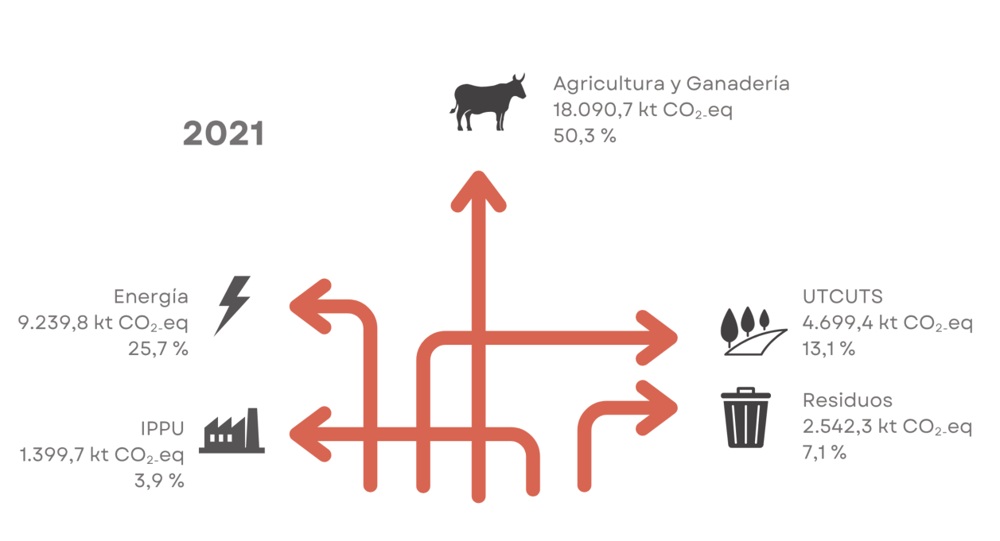
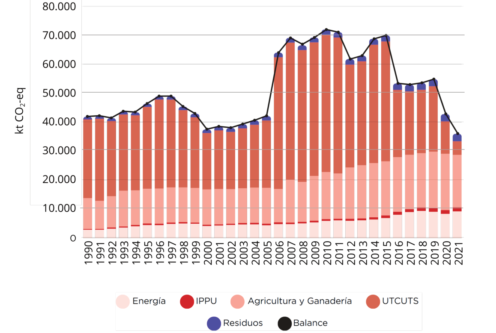
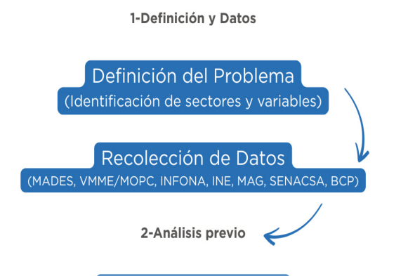
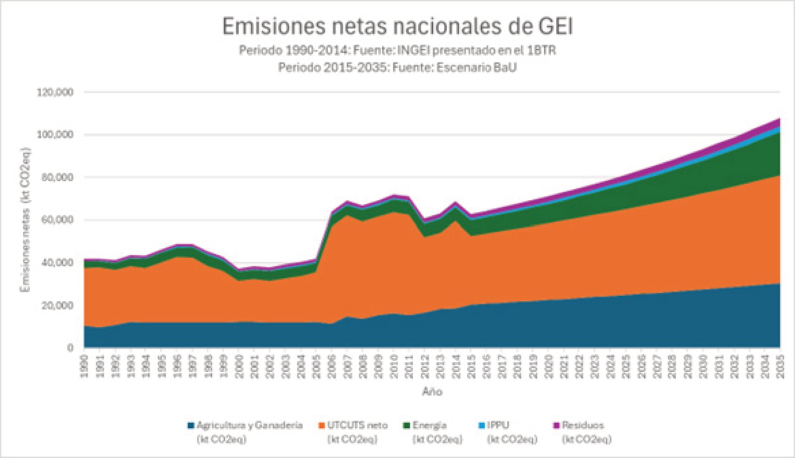
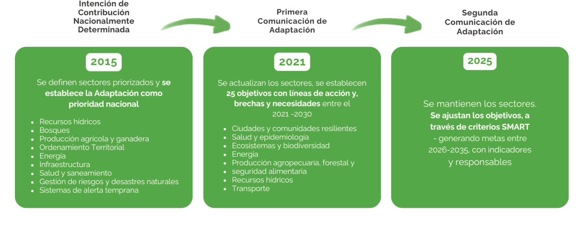
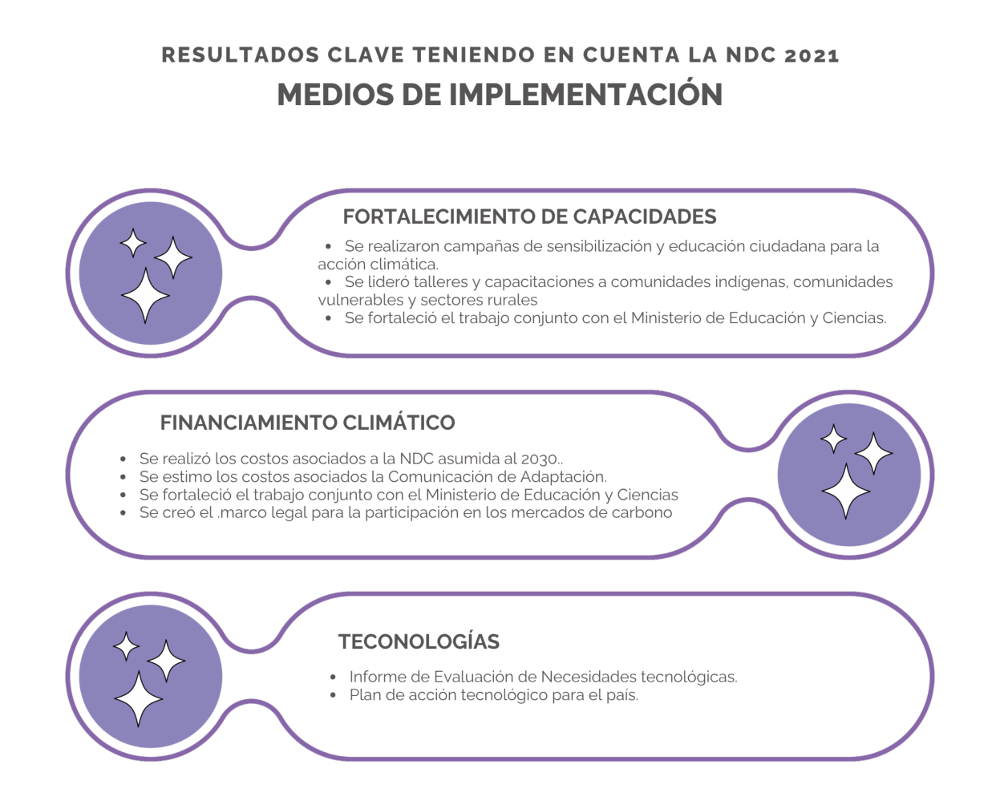

MINISTERIO DEL AMBIENTE Y DESARROLLO SOSTENIBLE (MADES)
DIRECCIÓN NACIONAL DE CAMBIO CLIMÁTICO (DNCC)
Octubre, 2025
Citación recomendada:
MADES. 2025. Tercera Contribución Nacionalmente Determinada (NDC 3.0) de la República del Paraguay. Asunción, Paraguay. 137 p.
Agradecimiento y gratitud, a todos/as aquellos/as que han contribuido a la construcción participativa, a la consolidación y la robustez del reporte, en el marco del cumplimiento del Acuerdo de París.
El proceso de actualización de las NDC 3.0 contó con el apoyo de la Promesa Climática Paraguay del PNUD, el cual cuenta con financiamiento de los gobiernos de Alemania, Japón, Reino Unido, Suecia, Bélgica, España, Islandia, Países Bajos, Portugal y otros socios de financiamiento básico del PNUD; y respalda la contribución del PNUD al NDC Partnership.
(Izq.) Rolando De Barros Barreto, Ministro del Ambiente y Desarrollo Sostenible y (der.) S.E. Don Santiago Peña, Presidente de la República del Paraguay.
“Paraguay esta listo para ser parte de la solución, el gigante dormido de Sudamerica ha despertado y resurge con fuerza, estamos listos para ser un protagonista central en la lucha por los grandes valores de la humanidad, para ser un actor protagónico en el concierto de las naciones, porque creemos en un futuro donde la democracia no solo sobreviva, sino que florezca, porque creemos en un futuro en el que el desarrollo llegue a todos y no solo a unos pocos, porque creemos en un futuro donde la cooperación se base en valores compartidos y no en mera conveniencias, porque creemos en un futuro donde la confianza se gane con resultados y no con retóricas. Porque creemos efectivamente que la humanidad no solo perdurará sino prevalecerá. Ese futuro distinto es posible, los paraguayos lo estamos construyendo todos los días, los invito a construirlo con nosotros, todos juntos para dejar un futuro mejor a nuestros hijos y nietos, un mundo con mas democracia, con mas libertad, con mas tolerancia, con mas justicia. Un mundo en el que la esperanza derrote al pesimismo, la luz se imponga sobre la oscuridad, y el bien triunfe victorioso siempre y para siempre sobre el mal.“
Santiago Peña Palacios Presidente de la República. 80 periodo de sesiones NNUU
Paraguay presenta su Tercera Contribución Nacionalmente Determinada (NDC 3.0) y su Segunda Comunicación de Adaptación (2CA) como una reafirmación de su compromiso con la acción climática en el marco de la Convención Marco de las Naciones Unidas sobre el Cambio Climático (CMNUCC) y el Acuerdo de París.
El Plan Climático de Paraguay (NDC), en el marco del Acuerdo de París, reconoce la crisis climática y proyecta una visión al 2035 orientada a construir un desarrollo sostenible y resiliente, con base en la evidencia científica y en coherencia con los resultados del Balance Global de 2023 (COP28). Asimismo, subraya que las medidas climáticas deben implementarse de manera justa y equilibrada, evitando la generación de barreras al comercio internacional. Esta NDC 3.0 reafirma el compromiso de Paraguay con un modelo de desarrollo sostenible, resiliente e inclusivo, que integra el crecimiento económico con la protección de los ecosistemas, la innovación productiva y la justicia climática, fortaleciendo así su contribución a la acción climática global.
Reconociendo su alta vulnerabilidad frente a eventos extremos como sequías, incendios forestales e inundaciones, Paraguay plantea avanzar en la acción climática garantizando los derechos fundamentales de la población —salud, educación, empleo digno y protección social—impulsando una transición hacia una economía diversificada, basada en el conocimiento, la innovación y la cooperación multilateral.
En el centro de esta visión se encuentran los ecosistemas y recursos naturales, que constituyen una ventaja estratégica para el país y son fundamentales para una acción climática centrada en las personas.
En esta NDC 3.0, Paraguay reafirma su compromiso de promover la consolidación de su contribución climática sostenible, reforzando su rol en la acción climática global con una ambición fortalecida y alineada en sus capacidades nacionales. Esta contribución se sustenta en la protección de ecosistemas estratégicos, buenas prácticas de producción y la promoción de una economía sostenible y resiliente. Paraguay aspira a aportar de manera neta favorable a la estabilización del clima global, con una meta equivalente al 10 % respecto al escenario tendencial (BaU) en el 2030 y 2035 con recursos propios, y un aporte adicional del 10 % condicionado al acceso a medios de implementación como financiamiento, fortalecimiento de capacidades y transferencia de tecnología.
Con ello, el país reafirma que su acción climática se basa en ambición justa, alianzas estratégicas y soluciones basadas en la naturaleza, contribuyendo activamente al esfuerzo colectivo global.
Para alcanzar estos objetivos, Paraguay ha definido 27 medidas de acción climática en los sectores de Agricultura y Ganadería (4 medidas), Uso de la Tierra, Cambio de Uso de la Tierra y Silvicultura (7 medidas), Energía y Transporte (6 medidas), Procesos Industriales y Uso de Productos (5 medidas), Residuos (4 medidas) y Transversal (1 medida).
Estas acciones priorizan la conservación de sumideros naturales, la eficiencia productiva, la innovación tecnológica y el fortalecimiento de sistemas sostenibles.
La Segunda Comunicación de Adaptación (2CA) marca un hito en los esfuerzos nacionales de Paraguay al presentar un conjunto de 25 objetivos y 106 líneas de acción para los siete sectores prioritarios: Ciudades y Comunidades Resilientes; Salud y Epidemiología; Ecosistemas y Biodiversidad; Energía; Agropecuario, Forestal y Seguridad Alimentaria; Recursos Hídricos; y Transporte.
Este proceso introduce un enfoque más estructurado para planificar la adaptación, actualizando los compromisos definidos en la Primera Comunicación de Adaptación bajo criterios SMART, con metas a ser implementadas en el periodo 2026–2035.
Además, se articula de manera coordinada la acción nacional de adaptación con las tres Convenciones de Río, promoviendo una visión integrada y coherente.
Paraguay presenta avances y desafíos en el fortalecimiento de capacidades, el financiamiento climático y el desarrollo y transferencia de tecnologías. El país ha promovido la formación técnica, la educación ambiental y la participación ciudadana a través de iniciativas impulsadas por el Ministerio del Ambiente y Desarrollo Sostenible (MADES) y el Ministerio de Educación y Ciencias (MEC), fortaleciendo competencias institucionales y comunitarias en línea con la Acción para el Empoderamiento Climático de la CMNUCC.
Asimismo, se consolidó el rol del Ministerio de Economía y Finanzas (MEF) como actor clave en la gestión de recursos climáticos, orientando los esfuerzos hacia un mayor acceso a financiamiento internacional, donde el sistema de Monitoreo, Reporte y Verificación de Financiamiento será una estrategia clave.
De manera complementaria, Paraguay promueve la cooperación tecnológica a través del Plan de Acción Tecnológico (TAP). Con ello, el país reafirma su apuesta por un modelo de desarrollo resiliente y justo.
Rolando De Barros Barreto Ministro del Ministerio del Ambiente y Desarrollo Sostenible
|
ACE |
Acción para el Empoderamiento Climático |
|
AFOLU |
Agricultura, Silvicultura y Otros Usos de la Tierra |
|
ANDE |
Administración Nacional de Energía Eléctrica |
|
APP |
Aplicación |
|
ASP |
Áreas Silvestres Protegidas |
|
ARP |
Asociación Rural del Paraguay |
|
AR5 |
Quinto Informe de Evaluación |
|
BAU |
Business as Usual (por sus siglas en inglés) |
|
BBPAg |
Buenas Prácticas de Producción Agrícola |
|
BPA |
Buenas Prácticas Agrícolas |
|
BCP |
Banco Central del Paraguay |
|
BEN |
Balance energético nacional |
|
BTR |
Informe Bienal de Transparencia |
|
CA |
Comunicación de Adaptación |
|
CBDR |
Responsabilidad Común Pero Diferenciada |
|
CDB |
Convenio sobre la Diversidad Biológica |
|
CNULD |
Convención de las Naciones Unidas de Lucha contra la Desertificación |
|
CLAC |
Coordinadora Latinoamericana y del Caribe de Pequeños(as) Productores(as) y Trabajadores(as) de Comercio Justo |
|
CMNUCC |
Convención Marco de las Naciones Unidas sobre el Cambio Climático |
|
CODENI |
Consejerías por los Derechos del Niño, Niña y Adolescente en Paraguay |
|
DA |
Datos de actividad |
|
DCEA |
Dirección de Censos y Estadísticas Agropecuarias |
|
DINAC |
Dirección Nacional de Aeronáutica Civil |
|
DNA |
Dirección Nacional de Aduanas |
|
DNCC |
Dirección Nacional de Cambio Climático |
|
ENNDT |
Estrategia Nacional de Neutralidad de la Degradación de la Tierra |
|
ENPAB |
Plan de Acción para la Conservación de la Biodiversidad |
|
ERSSAN |
Ente Regulador de Servicios Sanitarios |
|
EvIA |
Evaluación de Impacto Ambiental |
|
FAO |
Organización de las Naciones Unidas para la Alimentación y la Agricultura |
|
FAPI |
Federación por la Autodeterminación de los Pueblos Indígenas |
|
FE |
Factores de emisión |
|
FEPASIDIAS |
Federación Pya. de Siembra Directa para una Agricultura Sustentable |
|
GC/CC |
Garantía de calidad/Control de calidad |
|
GCF |
Green Climate Fund (por sus siglas en inglés) |
|
GEF |
Global Environment Facility (por sus siglas en inglés) |
|
GEI |
Gases de Efecto Invernadero |
|
GGA |
Global Goal of Adaptation (por sus siglas en inglés) |
|
GLP |
Gas licuado de petróleo |
|
HFC |
Hidrofluorocarbonos |
|
ICA |
Consulta y análisis internacional (por sus siglas en inglés) |
|
IFN |
Inventario Forestal Nacional |
|
INC |
Industria Nacional de Cemento |
|
INDC |
Intención de Contribución Nacionalmente Determinada |
|
INE |
Instituto Nacional de Estadística |
|
IGEI |
Inventario de gases de efecto invernadero |
|
INFONA |
Instituto Forestal Nacional |
|
INDI |
Instituto Paraguayo del Indígena |
|
INGEI |
Inventario Nacional de Gases de Efecto Invernadero |
|
IPCC |
Panel Intergubernamental sobre el Cambio Climático |
|
IPPU |
Procesos industriales y uso de productos |
|
ISGEI |
Informe sectorial de gases de efecto invernadero |
|
ITMO |
Resultado de Mitigación Transferido Internacionalmente |
|
MADES |
Ministerio del Ambiente y Desarrollo Sostenible |
|
MAG |
Ministerio de Agricultura y Ganadería |
|
MEF |
Ministerio de Economía y Finanzas |
|
MIC |
Ministerio de Industria y Comercio |
|
MOPC |
Ministerio de Obras Públicas y Comunicaciones |
|
MRV |
Monitoreo, Reporte y Verificación |
|
MyE |
Monitoreo y Evaluación |
|
NAI |
No Anexo I |
|
NDC |
Contribuciones Determinadas a Nivel Nacional |
|
NNA |
Niños Niñas Adolescentes |
|
NREF |
Niveles de Referencia de Emisiones Forestales |
|
OIT |
Organización Internacional del Trabajo |
|
OMEC |
Otras Medidas Efectivas de Conservación Basadas en Áreas |
|
ONG |
Organización No Gubernamental |
|
ONU |
Organización de las Naciones Unidas |
|
PCG |
Potencial de calentamiento global |
|
PCI |
Instrumento de Coordinación de Políticas (por sus siglas en inglés) |
|
PDSL |
País en Desarrollo Sin Litoral |
|
PDSM |
Plan de Desarrollo Sostenible Municipal |
|
PETROPAR |
Petróleos Paraguayos |
|
PIB |
Producto interno bruto |
|
PMME |
Plan Maestro de Movilidad Eléctrica Multimodal |
|
PNACC |
Plan Nacional de Adaptación al Cambio Climático |
|
PND |
Plan Nacional de Desarrollo |
|
PNUD |
Programa de las Naciones Unidas para el Desarrollo |
|
PNUMA |
Programa de las Naciones Unidas para el Medio Ambiente |
|
POUT |
Plan de Ordenamiento Urbano y Territorial |
|
REDD+ |
Reducción de Emisiones derivadas de la Deforestación y la Degradación de los bosques |
|
RSF |
Programa de Servicio de Resiliencia y Sostenibilidad (por sus siglas en inglés) |
|
SAO |
Sustancias Agotadoras de la Capa de Ozono |
|
SENASA |
Servicio Nacional de Saneamiento Ambiental |
|
SbN |
Soluciones basadas en la Naturaleza |
|
SEAM |
Secretaría del Ambiente de Paraguay |
|
SIAM |
Sistema de Información Ambiental |
|
SIEN |
Sistema de Información Energética Nacional |
|
SIG |
Sistema de Información Geográfica |
|
SINASIP |
Sistema Nacional de Áreas Silvestres Protegidas |
|
SITRAP |
Sistema Nacional de Trazabilidad |
|
STP |
Secretaría Técnica de Planificación del Desarrollo Económico y Social (fusionada al Ministerio de Economía y Finanzas) |
|
TAP |
Plan de Acción Tecnológico |
|
TICCA |
Territorios y Áreas Conservadas por Pueblos Indígenas y Comunidades Locales |
|
TNA |
Tasa Nominal Anual |
|
UNICEF |
Fondo de las Naciones Unidas para la Infancia |
|
UTCUTS |
Uso de la tierra, cambio de uso de la tierra y silvicultura |
|
VMME |
Viceministerio de Minas y Energía |
Paraguay reafirma su compromiso con la CMNUCC y el Acuerdo de París presentando su tercera Contribución Nacionalmente Determinada (NDC 3.0), con una visión de país para el año 2035. Una visión de desarrollo sostenible e inclusivo que reconoce la urgencia de actuar frente a la crisis climática, mientras se construye un modelo de crecimiento resiliente, bajo en emisiones y centrado en las personas. En esta NDC, Paraguay proyecta su futuro como una nación cohesionada, con un Estado transparente y eficaz, una economía competitiva y un territorio ambientalmente sostenible y resiliente al clima.
Paraguay, enfrenta el cambio climático basado en la Constitución Nacional, que garantiza la preservación, la conservación, la recomposición y mejoramiento del ambiente, así como su conciliación con el desarrollo humano integral, con el pleno goce de los derechos fundamentales y el respeto a los principios de la dignidad de las personas.
El principio de responsabilidad común pero diferenciada (CBDR), consagrado en instrumentos internacionales clave como la Declaración de Río (1992), la Convención Marco de las Naciones Unidas sobre el Cambio Climático (UNFCCC, 1992) y el Acuerdo de París (2015), es fundamental para orientar y movilizar la política climática global.
La experiencia reciente ha dejado en evidencia la creciente vulnerabilidad del país frente a fenómenos climáticos extremos como sequías, incendios forestales e inundaciones, que afectan de forma desproporcionada a las comunidades más vulnerables. Estos impactos refuerzan la necesidad de acelerar una transformación estructural que permita avanzar hacia una sociedad más justa, resiliente e inclusiva, en armonía con la naturaleza y alineada con los principios del desarrollo sostenible.
La visión de Paraguay para 2035 es la de un país que garantice los derechos fundamentales de su población, en particular el acceso a salud, educación y empleo digno, dentro de un sistema de protección social sólido. Esta visión se basa en la promoción de capacidades humanas, la reducción de desigualdades y la superación de la pobreza en todas sus formas, entendiendo que el bienestar social y la justicia climática son pilares inseparables de la resiliencia climática.
Con un enfoque de gobierno, economía y sociedad integrados, Paraguay impulsa una transición hacia una economía innovadora, diversificada y competitiva, que genera valor agregado sobre la base del conocimiento, la digitalización, la inversión sostenible y el respeto al medio ambiente.
Paraguay avanza hacia un futuro sostenible y resiliente
El país reconoce que la acción climática debe ser colectiva y transformadora, incorporando tanto conocimientos técnicos y científicos como conocimientos tradicionales y ancestrales, especialmente de los pueblos indígenas y comunidades rurales.
En el centro de esta transformación se encuentran nuestros ecosistemas y recursos naturales, que constituyen una ventaja estratégica para el desarrollo. Paraguay se orienta hacia un modelo energético renovable, una agricultura sostenible, ciudades más resilientes y una gobernanza ambiental transparente.
La restauración de bosques y paisajes, la protección de la biodiversidad y la adaptación basada en ecosistemas son parte de una nueva sinergia entre economía, naturaleza y sociedad.
La NDC 3.0 de Paraguay representa una síntesis de la determinación del país para contribuir con responsabilidad al esfuerzo global frente al cambio climático.
Refleja la confianza de Paraguay en su gente, en su capacidad para innovar, cooperar y liderar soluciones, y en su vocación de país abierto, solidario y comprometido con un multilateralismo efectivo.
Desde su rol activo en las negociaciones internacionales y su compromiso con la implementación del Acuerdo de París, Paraguay extiende una invitación a la comunidad internacional a revitalizar la cooperación, promover una financiación climática justa y equitativa, y asegurar que nadie quede atrás en la construcción de un futuro común, resiliente y sostenible, regenerativo y circular.
Acción climática para un Paraguay más justo e inclusivo
Paraguay es una República democrática, representativa, participativa y pluralista, organizada en el marco del Estado social de derecho, conforme a lo establecido en la Constitución Nacional promulgada el 20 de junio de 1992. La organización política del país se sustenta en la separación, independencia y equilibrio de los tres Poderes del Estado: Ejecutivo, Legislativo y Judicial.
El Poder Ejecutivo es ejercido por el Presidente de la República, quien es elegido por sufragio directo para un mandato de cinco años.
El Presidente es acompañado en funciones por un Vicepresidente y cuenta con el apoyo del Gabinete Ejecutivo, compuesto por ministerios y secretarías del Poder Ejecutivo.
El Poder Legislativo reside en el Congreso Nacional, de estructura bicameral, conformado por la Cámara de Senadores y la Cámara de Diputados. La Cámara de Senadores está compuesta por 45 miembros titulares y 30 suplentes, mientras que la Cámara de Diputados está integrada por 80 diputados y 80 suplentes. Todos los miembros del Congreso Nacional son electos mediante voto directo para un período de cinco años.
El Poder Judicial es independiente y está encabezado por la Corte Suprema de Justicia, compuesta por nueve ministros. La administración de justicia se lleva a cabo a través de tribunales y juzgados establecidos por la Constitución y las leyes, con competencia en todo el territorio nacional.
La República del Paraguay (en guaraní, Tetã Paraguái) es un Estado sin litoral marítimo, ubicado en el centro-sur del continente sudamericano. Su localización geográfica lo posiciona estratégicamente como punto de conexión regional, delimitado entre los paralelos 19°18’ y 27°03’ de latitud sur y los meridianos 54°15’ y 62°38’ de longitud oeste1 . El trópico de Capricornio atraviesa el país casi por su centro geográfico. Comparte fronteras con tres países: Argentina al sur, sureste y suroeste; Brasil al norte y noreste; y Bolivia al norte y noroeste. Sus límites territoriales suman aproximadamente 3.920 kilómetros: 1.690 km con Argentina2 , 1.290 km con Brasil3 y 750 km con Bolivia.4
El territorio nacional está dividido por el río Paraguay en dos grandes regiones naturales y administrativas:
El país está subdividido políticamente en 17 departamentos y un distrito capital, los cuales se dividen en 261 distritos. Esta estructura administrativa facilita la implementación de políticas públicas territoriales, incluida la acción climática adaptada a las condiciones regionales.
Según los datos más recientes disponibles, Paraguay cuenta con una población estimada de 6.109.903 habitantes, compuesta por 3.057.674 hombres y 3.052.229 mujeres, lo que refleja una distribución balanceada de hombres y mujeres en la población. La población se concentra mayoritariamente en la Región Oriental, especialmente en el área metropolitana de Asunción y el Departamento Central. La capital, Asunción, es la ciudad más poblada del país, con aproximadamente 462.246 habitantes y más de 129.8065 viviendas registradas, lo que evidencia su papel como centro político, administrativo, económico y cultural.
La población paraguaya es predominantemente joven: aproximadamente el 60% tiene menos de 35 años, lo que representa una oportunidad estratégica para políticas públicas orientadas al desarrollo sostenible, empleo verde y empoderamiento climático intergeneracional.
El Chaco es clave para la conservación de la biodiversidad y el desarrollo resiliente del Paraguay
Paraguay es un país pluricultural y bilingüe, cuyos idiomas oficiales son el español y el guaraní.
La multiculturalidad paraguaya se nutre de pueblos indígenas originarios, inmigrantes provenientes de distintas partes del mundo, y de una profunda herencia hispano-guaraní. Las poblaciones autóctonas pertenecen a cinco familias lingüísticas, siendo la Guaraní la más representativa, ya que reúne al 54% del total de la población indígena. Esta riqueza cultural se manifiesta en diversas expresiones sociales, espirituales y económicas.
Según datos oficiales, en Paraguay existen 140.2065 personas indígenas, distribuidas en 493 comunidades y pertenecientes a 19 pueblos indígenas. Estas comunidades se agrupan en las siguientes cinco familias lingüísticas5:
Geográficamente, en la Región Oriental, el departamento con mayor población indígena es Canindeyú (16.294 personas), mientras que en la Región Occidental (Chaco), el departamento con mayor concentración es Presidente Hayes (29.814 personas)6.
Paraguay demuestra un desempeño macroeconómico sólido, destacándose por un crecimiento económico sostenido superior al promedio regional.
Esta evolución ha sido impulsada por una buena gestión macroeconómica y una institucionalidad fiscal estable. Esta combinación ha permitido al país posicionarse como un relevante actor exportador en el ámbito agrícola, ganadero y energético, destacando su participación en los mercados internacionales de soja, carne bovina y energías renovables.
Sin embargo, la concentración de la economía en sectores primarios representa un desafío estructural para la resiliencia macroeconómica.
Actualmente, los rubros agrícolas, la ganadería y la energía eléctrica representan cerca del 80% de las exportaciones directas y aproximadamente el 17% del Producto Interno Bruto (PIB)7, lo que podría exponer al país a vulnerabilidades frente a los choques externos, fenómenos climáticos extremos y fluctuaciones en los mercados internacionales.
El impacto combinado de la pandemia del COVID-19 y las sequías prolongadas entre 2020 y 2022 generó una desaceleración económica. Aun así, Paraguay logró mantener avances importantes en materia social. Entre 2003 y 2024, la pobreza total se redujo de 51,4% a 20,1%, y la pobreza extrema cayó del 11,2% al 4,1%8.
Asimismo, el Gobierno del Paraguay ha iniciado una estrategia de convergencia fiscal orientada a fortalecer la sostenibilidad de las finanzas públicas. Esta estrategia se centra en la mejora de la transparencia, la consolidación institucional y la disciplina fiscal. Entre 2023 y 2024, el déficit fiscal se redujo, evidenciando un compromiso firme con la estabilidad macroeconómica.
A esto se suman los acuerdos alcanzados con el Fondo Monetario Internacional en base al Instrumento de Coordinación de Políticas (PCI) y el Programa de Servicio de Resiliencia y Sostenibilidad (RSF), los cuales fortalecen la gestión de riesgos macrofiscales y climáticos del país.
Durante 2023, la economía paraguaya experimentó una recuperación robusta, con un crecimiento del PIB9 que superó las proyecciones iniciales. Este repunte fue liderado por el buen desempeño de la agricultura, la generación hidroeléctrica, el comercio y la industria manufacturera. Desde la óptica del gasto, sobresalieron el consumo privado y la demanda externa neta.
En el ámbito financiero, Paraguay cuenta con un sistema bancario sólido, con bajos niveles de morosidad, adecuada liquidez y elevados índices de solvencia. El crédito al sector privado mostró un importante crecimiento, con tasas de interés activas históricamente bajas. Asimismo, la cuenta corriente de la balanza de pagos registró superávit en 2017, 2020 y 2023, en gran parte por los aportes del sector agroexportador y la generación de energía renovable10.
El comercio exterior representó el 83,1% del PIB en 2023. Los productos agroindustriales, liderados por el complejo sojero (42,9%), la carne bovina (13,7%) y los cereales (10,5%), conforman más del 70% de las exportaciones. La industria manufacturera contribuyó con 12,7% de las exportaciones, destacándose rubros como autopartes, químicos y productos farmacéuticos11.
El Estado paraguayo ha iniciado reformas institucionales clave para optimizar el uso de los recursos públicos y mejorar la eficiencia del aparato estatal. En 2023 se concretó la creación del Ministerio de Economía y Finanzas (MEF), que integró funciones del antiguo Ministerio de Hacienda, la Secretaría Técnica de Planificación del Desarrollo Económico y Social (STP) y la Secretaría de la Función Pública (SFP).
Paralelamente, se estableció la Dirección Nacional de Ingresos Tributarios (DNIT) mediante la Ley N.º 7.143/2023, unificando la Dirección Nacional de Aduanas y la Subsecretaría de Tributación, con el objetivo de fortalecer la recaudación y modernizar los controles fiscales.
El sector agropecuario continúa siendo la piedra angular de la economía paraguaya, aportando directamente el 10,5% del PIB y el 20,5% si se considera a las agroindustrias.
El sector representa el 74% del total exportado y emplea al 17,6% de la población económicamente activa. Según el VI Censo Agropecuario Nacional (CAN 2022), la superficie de fincas agropecuarias asciende a 30,4 millones de hectáreas, que albergan cerca de 291.497 fincas agropecuarias, de las cuales el 89% están vinculadas a la agricultura familiar12.
El CAN 2022 destaca una creciente participación de mujeres productoras, alcanzando el 37%, y un notable dinamismo de las cadenas de valor rurales. Además, el 93% del área cultivada utiliza el sistema de siembra directa, consolidando al Paraguay como referente en agricultura de conservación y reducción de emisiones de gases de efecto invernadero.
En 2022, el hato de ganado bovino ascendió a 13,5 millones de cabezas, con más de 1,2 millones registradas en el sistema nacional de trazabilidad (SITRAP). En 2023, Paraguay se posicionó como el 8º mayor exportador mundial de carne bovina, generando cerca de USD 1.500 millones en divisas. Gracias a su modelo de producción sustentado en pasturas naturales y baja intervención química, el país tiene el potencial de convertirse en proveedor global de carne sostenible.
Paraguay también es líder en generación de energía hidroeléctrica, con excedentes exportados a Brasil y Argentina a través de las binacionales Itaipú y Yacyretá, y la central nacional Acaray. En 2024 se avanzó en la formulación de una Estrategia Nacional de Hidrógeno Verde, como paso clave hacia la diversificación energética. Paralelamente, se han dado pasos importantes en la promoción de la movilidad eléctrica, con el diseño de políticas públicas, incentivos fiscales y marcos regulatorios orientados a facilitar la adopción de vehículos eléctricos, así como la expansión progresiva de la infraestructura de recarga, como parte de la transición hacia un sistema de transporte más limpio y eficiente.
Finalmente, Paraguay continúa apostando a la integración comercial y a la atracción de inversiones como motores de crecimiento.
La política económica se orienta a diversificar la matriz productiva, promover la libre competencia, fortalecer la innovación tecnológica y asegurar la sostenibilidad ambiental como ejes del desarrollo.
Producción, energía y sostenibilidad: y pilares del crecimiento de Paraguay
Paraguay ha consolidado una arquitectura jurídica e institucional robusta en materia ambiental y climática, alineada con los compromisos internacionales asumidos por el país.
En el año 2000, mediante la Ley N.º 1.561/00, se creó la Secretaría del Ambiente (SEAM) como autoridad rectora en materia ambiental, encargada de aplicar la Convención Marco de Naciones Unidas sobre Cambio Climático, aprobada por Ley N.º 251/93, y cuyo instrumento de ratificación fuera presentado el 24 de febrero de 1994. Esta ratificación formalizó desde 1994 las obligaciones internacionales del país en materia de cambio climático, a las que se sumaron posteriormente la ratificación del Protocolo de Kyoto (aprobado por Ley N.º 1.447/99) y del Acuerdo de París (aprobado por Ley N.º 5.681/16).
La institucionalización del enfoque climático se fortaleció con la Ley N.º 5.875/17, que define el marco normativo general de respuesta al cambio climático. Esta normativa crea la Comisión Nacional de Cambio Climático (CNCC), un órgano interinstitucional con representación multisectorial, inicialmente compuesta por 26 instituciones, que ha crecido a 38 miembros y puede incorporar nuevas entidades por decisión mayoritaria de sus miembros.
Asimismo, esta ley crea la Dirección Nacional de Cambio Climático (DNCC) como instancia ejecutiva del Ministerio del Ambiente y Desarrollo Sostenible (MADES) que tiene a su cargo coordinar la elaboración de las comunicaciones nacionales y los informes bienales de transparencia que deben ser reportados a la Convención Marco de las Naciones Unidas sobre el Cambio Climático (CMNUCC). Por otra parte, la DNCC actúa de principal articulador del proceso de construcción y actualización de las contribuciones nacionalmente determinadas, así como de los demás instrumentos de política pública relacionadas a cambio climático, respetando los mandatos institucionales de los demás organismos del estado.
En 2018, la Secretaría del Ambiente (SEAM) fue elevada a rango ministerial mediante la Ley N.º 6.123/18, adquiriendo la nueva denominación de Ministerio del Ambiente y Desarrollo Sostenible (MADES). Desde esa fecha, su estructura institucional se orienta a la implementación efectiva de políticas ambientales, climáticas, planificación sectorial, descentralización y coordinación técnica.
Paraguay consolida su marco jurídico e institucional ante el cambio climático.
Paraguay presentó el último Inventario Nacional de Gases de Efecto Invernadero (INGEI) en el marco del Primer Informe Bienal de Transparencia (1BTR)13, correspondiente al período 1990–2021. En el año 2021 las emisiones brutas del país alcanzaron un total de 79.585,1 kilotoneladas de CO2 equivalente (kt CO2eq), mientras que las absorciones por sumideros fueron de 43.613,3 kt CO2eq, resultando en emisiones netas estimadas en 35.971,8 kt CO2eq. Esta cifra representa aproximadamente el 0,06 % del total global14, situando a Paraguay como uno de los países de la región con menores emisiones en términos absolutos.
A nivel per cápita, las emisiones del país fueron de 4,9 toneladas de CO2eq, por debajo del promedio mundial (6,5 t CO2eq) y muy por debajo del promedio de países industrializados (G20: 7,9 t CO2eq). El desempeño del país evidencia que, si bien Paraguay aporta una fracción mínima de las emisiones globales, mantiene un compromiso firme y creciente con la acción climática. El sector de Agricultura y Ganadería concentra el 50,3 % de las emisiones netas y el sector de Uso de la Tierra, Cambio de Uso de la Tierra y Silvicultura (UTCUTS) el 13,1%. Por otro lado, los sectores de energía (25,7%), procesos industriales y uso de productos (IPPU) (3,9%) y residuos (7,1 %) completan la distribución nacional de emisiones, tal como se muestra en el gráfico de contribución por sectores que se presenta a continuación.

Asimismo, entre 1990 y 2021 las tendencias muestran una reducción progresiva de las emisiones netas del sector de Uso de la Tierra, Cambio de Uso de la Tierra y Silvicultura (UTCUTS), principalmente a partir de la década de 2010, lo que ha contribuido a mejorar el balance general de emisiones del país.

Por tipo de gas, el dióxido de carbono (CO2) representó el 37,6% de las emisiones brutas, el metano (CH4) el 50,3%, el óxido nitroso (N2O) el 10,0% y otros gases un 2,1%. Esta caracterización resalta el papel significativo de las actividades agrícolas y ganaderas, particularmente en la generación de metano y óxidos nitrosos. Los datos presentados en este inventario son fundamentales para orientar las políticas nacionales hacia sectores prioritarios de mitigación y adaptación, fortalecer la transparencia climática, y monitorear el avance hacia las metas establecidas en la Contribución Nacionalmente Determinada (NDC) de Paraguay.
Paraguay es un país vulnerable a los efectos del cambio climático debido a su situación de Países en Desarrollo Sin Litoral (PDSL) y por su dependencia de las condiciones climáticas para la generación de ingresos, así como por los impactos sociales y ecológicos asociados. Desde el año 2015, el país ha establecido a la adaptación como una prioridad nacional, decisión que ha sido confirmada por medio de diversas políticas nacionales.
Históricamente, Paraguay ha sido afectado por variaciones en los patrones climáticos asociadas al fenómeno El Niño/Oscilación del Sur, que han provocado sequías e inundaciones con consecuencias significativas en las actividades agropecuarias y el transporte fluvial. Entre los principales riesgos climáticos identificados se encuentran las olas de calor, las tormentas, los incendios forestales y las heladas, la afectación al tráfico fluvial, del cual depende gran parte del comercio internacional, y los impactos sobre la producción de energía eléctrica, que proviene casi en un 100 % de fuentes hidroeléctricas. Todos estos riesgos están estrechamente vinculados a la disponibilidad de agua, a la capacidad productiva y al crecimiento económico del país.
El Estudio del Clima de Paraguay de 201915 describe cómo los impactos climáticos se han intensificado en las últimas décadas. En los últimos cuarenta años, la frecuencia de eventos extremos asociados a olas de calor se ha triplicado, y las sequías han adquirido un carácter cada vez más severo. El año 2019 fue el más cálido registrado en el país, con una temperatura promedio 1,5 °C superior al promedio del período 1961–1990. Además, ocho de los diez años más cálidos han ocurrido en el siglo XXI, lo que confirma una tendencia clara de calentamiento. Esta tendencia se observa también en el aumento sostenido de las temperaturas promedio por quinquenio y década, especialmente desde los años 90.
La sequía de 2022 representó una dificultad considerable para la economía nacional, dado que la producción de soja cayó en más del 60%. A pesar de ello, el PIB no experimentó una retracción significativa, alcanzando un crecimiento del 0,2%, según datos del Banco Central del Paraguay.
En términos de vulnerabilidad, el índice elaborado en 2023 para los siete sectores prioritarios del país, utilizando el índice ND-GAIN, identificó a los departamentos de Asunción, Cordillera y Ñeembucú como los más vulnerables en el sector de ecosistemas y biodiversidad. En el sector salud, Alto Paraguay presenta el mayor nivel de vulnerabilidad, mientras que en el sector agropecuario las zonas más vulnerables se encuentran en el norte de la región Oriental, abarcando San Pedro, Amambay, Concepción, Canindeyú, Caaguazú, Caazapá, Alto Paraná y Guairá. En cuanto a la vulnerabilidad hídrica, determinada por el uso del recurso y su exposición a eventos extremos, la cuenca del Tebicuary es la más crítica, seguida por las del río Salado y el lago Ypacaraí, así como las de los ríos Apa, Tagatiyá y Jejuí Guazú. En el sector de ciudades y comunidades, el Departamento Itapúa ha sido identificado como el más vulnerable16.
Estos cambios reflejan una intensificación progresiva de los fenómenos extremos, con repercusiones ambientales, sociales y económicas. En este contexto, el cambio climático tendrá impactos en Paraguay, afectando directamente sus recursos hídricos, su economía y el bienestar de su población. El aumento de las temperaturas y la mayor variabilidad de las precipitaciones podrían hacer que las sequías sean hasta cuatro veces más prolongadas hacia finales de siglo, reduciendo la humedad del suelo y afectando la producción agrícola, la generación hidroeléctrica y el transporte fluvial, del cual depende el 87% de las exportaciones e importaciones. Esta situación podría aumentar los costos logísticos entre un 15% y un 58% por tonelada, con pérdidas de entre 61 y 403 millones de dólares anuales.
El calor extremo incrementaría la tasa de mortalidad en un 22% para 2050, duplicaría las hospitalizaciones y casi triplicaría las visitas médicas, mientras que los incendios forestales podrían aumentar en un 46 % y las muertes relacionadas con la contaminación por partículas finas en más de un 150%.
Además, el PIB nacional podría disminuir entre un 0,5% y un 3,1% para 2050 en escenarios de altas emisiones, y la pobreza aumentaría, con mayores impactos en las zonas rurales, especialmente en departamentos agrícolas como Caaguazú, San Pedro y Caazapá17.
En resumen, las tendencias del clima para Paraguay proyectan un futuro con temperaturas más altas, precipitaciones más impredecibles y eventos extremos más frecuentes, con impactos económicos, sociales y ambientales de gran magnitud
Por ello, resulta fundamental que tanto a nivel nacional y subnacional se identifiquen las vulnerabilidades, cómo y a quienes afectan, y que se planifiquen las acciones de adaptación, implementarlas y hacer un seguimiento de cómo estas aumentan la resiliencia o disminuyen la vulnerabilidad.
Construyendo resiliencia ante el cambio climático
Paraguay ha desarrollado un marco de políticas públicas orientado a la acción climática basado en los compromisos internacionales asumidos en el marco de la Convención Marco de las Naciones Unidas sobre el Cambio Climático (CMNUCC) y el Acuerdo de París. Estas políticas proveen lineamientos estratégicos y herramientas de planificación multisectorial para avanzar hacia una transición justa, resiliente e inclusiva. Todas las políticas públicas que se detallan a continuación se encuentran plenamente alineadas con la Contribución Nacionalmente Determinada (NDC) de Paraguay, la cual actúa como política pública marco en materia de cambio climático y orientación principal para la acción climática del país.
El PND 2030 orienta las políticas públicas y las acciones del Gobierno hacia el logro de un desarrollo sostenible, con metas de largo plazo y con la participación activa de todas las instituciones del Estado, la sociedad civil, el sector privado y la academia. Por su parte, el Plan Nacional de Desarrollo Paraguay 2050 (PND 2050) se encuentra en la fase final de formulación de su marco estratégico, que contempla pilares, objetivos estratégicos y específicos, acciones estratégicas e indicadores de seguimiento. La proyección de una nueva hoja de ruta al 2050 se fundamenta en que el PND 2030 llega a medio término, y que hoy se cuenta con información estadística actualizada a nivel nacional (recientes censos) y gobernanza unificada entre planificación y presupuesto, integrados en el recientemente creado Ministerio de Economía y Finanzas (MEF).
Aprobada en 2011 por el Consejo Nacional del Ambiente (CONAM), esta política establece los principios rectores para abordar el cambio climático de forma integral, coherente con las prioridades nacionales de desarrollo.
La PNCC busca impulsar acciones articuladas de mitigación y adaptación, fomentando la sostenibilidad ambiental, la justicia social y el cumplimiento de los compromisos internacionales, en el marco de un Estado social de derecho.
Concebida como un instrumento para operacionalizar las acciones de reducción de emisiones, esta estrategia involucra a todos los sectores relevantes en la formulación e implementación de medidas para minimizar los impactos del cambio climático. Promueve una gestión eficiente, participativa y basada en evidencia, en línea con los objetivos del desarrollo nacional.
Es el instrumento de planificación nacional que orienta las acciones del Paraguay en materia de conservación, uso sostenible y distribución justa y equitativa de los beneficios derivados de la biodiversidad, en cumplimiento del Convenio sobre la Diversidad Biológica (CDB). La ENPAB refleja las prioridades nacionales y constituye un marco estratégico para integrar la biodiversidad en las políticas, planes y programas de desarrollo sectorial y territorial.
Construida participativamente en el marco del proceso REDD+ en Paraguay, la ENBCS constituye una hoja de ruta para la reducción de emisiones derivadas del cambio de uso de la tierra, mediante una gestión forestal sostenible. Esta estrategia está alineada con las políticas sectoriales y contribuye directamente al cumplimiento de la NDC del país, integrando enfoques de conservación, restauración, producción sostenible y gobernanza forestal.
Elaborada en 2016, esta estrategia representó el primer enfoque nacional para orientar lo que implicaría el desarrollo de un marco normativo sobre Adaptación al cambio climático. Su objetivo es orientar la capacidad nacional de respuesta frente a los retos de la Adaptación, y reducir la vulnerabilidad, aprovechando las oportunidades alineadas con los objetivos de desarrollo del país. Para ello, plantea la disminución de los riesgos e impactos previsibles de la variabilidad y el cambio climático mediante acciones de gestión integrada y procesos que involucren de forma responsable y participativa a todos los sectores. No obstante, el país sigue enfrentando grandes desafíos al momento de la implementación de acciones de manera sectorial.
Es una herramienta diseñada para poner en práctica los objetivos definidos en la Primera Comunicación de Adaptación, establecidos en la Contribuciones Nacionales Determinadas (NDC) de 2021 y actualizados en este proceso. Se sustenta en el establecimiento de una estructura operativa, esperando alcanzar la acción coordinada de los distintos actores para afrontar los efectos del cambio climático en el país, impulsando la integración coherente de la Adaptación a dos niveles: el Nacional y el Subnacional. Este abordaje debe darse en políticas, programas y proyectos de los sectores y municipios del país, se nutre de la experiencia obtenida en la implementación del primer PNACC (2017-2021).
Los planes sectoriales de mitigación constituyen instrumentos operativos que orientan la implementación de medidas en los diferentes sectores. Estos planes promueven acciones concretas a nivel sectorial y territorial, y contribuyen a la implementación efectiva de la Contribución Nacionalmente Determinada (NDC). Asimismo, fortalecen la articulación con otros planes y políticas públicas nacionales. Los planes fueron aprobados mediante la Resolución MADES N° 26/2024.
Paraguay ha desarrollado un marco de políticas públicas orientado a la acción climática
Este plan permitió al país el desarrollo de un análisis de necesidades tecnológicas y un plan de acción en tecnología asociado a las necesidades de mitigación y adaptación al cambio climático identificadas en los sectores priorizados de Paraguay.
Esta estrategia tiene el objetivo de reducir los contaminantes climáticos de vida corta, como el carbono negro, metano, ozono troposférico e hidrofluorocarbonos, los cuales tienen efectos nocivos tanto para la salud humana como para el cambio climático. La estrategia promueve la implementación de medidas de mitigación costo-efectivas y de alto impacto, priorizando acciones en sectores clave como el transporte, la agricultura, la energía y los residuos. Su implementación permitirá generar beneficios climáticos, sanitarios y ambientales inmediatos, mejorando la calidad del aire y contribuyendo a los compromisos asumidos en el marco del Acuerdo de París.
La Política Ambiental Nacional del Paraguay constituye el marco estratégico y orientador de la gestión ambiental del país, con una visión de desarrollo sostenible e inclusivo. Esta política establece principios rectores y líneas de acción prioritarias para la conservación de los recursos naturales, la mejora de la calidad ambiental y el bienestar de la población, en un contexto de gobernanza participativa y corresponsabilidad institucional. Reconoce al cambio climático como un eje transversal de la gestión ambiental, promoviendo la integración de criterios de mitigación y adaptación en los sectores productivos, sociales y territoriales. Su implementación se articula con otras políticas sectoriales y contribuye de manera directa al cumplimiento de los compromisos internacionales asumidos por el Paraguay en el marco del Acuerdo de París.
Es una herramienta clave para orientar el desarrollo nacional hacia un modelo más equitativo, resiliente y ambientalmente sostenible. Su objetivo principal es promover la sostenibilidad como eje central del diseño e implementación de políticas públicas, programas y proyectos, mediante una visión integrada de los ámbitos económico, social y ambiental.
El Plan de Acción en Tecnología Climática permitió al país identificar necesidades y definir acciones en mitigación y adaptación al cambio climático
Las tres Convenciones de Río18—la Convención Marco de las Naciones Unidas sobre el Cambio Climático19, la Convención de las Naciones Unidas de Lucha contra la Desertificación20 y la Convención sobre la Diversidad Biológica21— constituyen los principales instrumentos multilaterales para abordar los desafíos ambientales globales de manera coordinada. Estas convenciones, aunque con mandatos específicos, comparten objetivos complementarios y promueven constantemente la articulación y creación de sinergias como medio para fortalecer sus impactos, evitar esfuerzos aislados y maximizar los beneficios ambientales, sociales y económicos de sus acciones.
En este sentido, en el marco de esta actualización de la NDC 3.0 y la 2CA, se lleva adelante el esfuerzo de identificar posibles sinergias y vínculos estratégicos que puedan ser trabajados con miras a contribuir al cumplimiento de los objetivos y metas establecidos en estas agendas internacionales.
En el marco de las Convenciones de Río, se realiza un trabajo coordinado entre las instancias del MADES responsables de la implementación del CDB, la CNULD y la CMNUCC. Este trabajo tiene como objetivo identificar puntos de convergencia, reforzar la sinergia entre estos marcos y garantizar la coherencia en la planificación y ejecución de políticas nacionales, promoviendo un enfoque integrado que maximice el impacto de las acciones en materia de acción climática, conservación de la biodiversidad, restauración de ecosistemas y lucha contra la desertificación.
Para la vinculación con el CDB, la NDC 3.0 y la 2CA se articula principalmente a través del ENPAB, que establece las prioridades nacionales en materia de conservación, uso sostenible y restauración de la biodiversidad. Para la vinculación con la CNULD, NDC 3.0 y la 2CA se articula a partir de la ENNDT, que orienta las políticas nacionales para prevenir la degradación, restaurar ecosistemas y fortalecer la resiliencia frente a la sequía.
Las tres Convenciones de Río impulsan la acción climática, la conservación de la biodiversidad y la lucha contra la desertificación.
Paraguay ha definido una serie de ejes transversales que orientarán la planificación e implementación de las acciones de mitigación y adaptación al cambio climático. Estos ejes constituyen principios rectores para asegurar que la transición hacia un modelo de desarrollo sostenible se lleve a cabo de manera justa, inclusiva y equitativa, sin dejar a nadie atrás. Representan una hoja de ruta que integra dimensiones sociales, económicas, ambientales, culturales y tecnológicas, en reconocimiento a la diversidad del territorio y las capacidades nacionales.
Paraguay incorpora el enfoque de transición justa como un principio orientador de su acción climática, reconociendo la necesidad de avanzar hacia un modelo de desarrollo bajo en emisiones y resiliente. Este enfoque busca garantizar que los procesos de transformación productiva, tecnológica y social derivados de la acción climática sean inclusivos, equitativos y participativos, protegiendo los derechos de las personas trabajadoras y de las comunidades más vulnerables. En este marco, se promueve la creación de empleos verdes, dignos y decentes, la reconversión laboral con acceso a formación técnica y profesional, y la inclusión de mujeres, jóvenes y pueblos indígenas en sectores estratégicos de la economía. Asimismo, se prioriza la coordinación interinstitucional y la articulación de políticas públicas que integren la protección social, la diversificación económica y el fortalecimiento de capacidades locales. La transición justa en Paraguay se concibe como una oportunidad para construir una economía más inclusiva y resiliente, que combine la sostenibilidad ambiental con la justicia social y territorial.
Paraguay incorpora de manera transversal la igualdad de oportunidades entre hombres y mujeres en su NDC 3.0, reconociendo que el cambio climático genera impactos diferenciados y que mujeres y niñas enfrentan mayores barreras para adaptarse y acceder a los beneficios de la acción climática. Este enfoque busca no solo evitar la reproducción de desigualdades existentes, sino también contribuir activamente a su superación mediante el empoderamiento, la participación efectiva y el acceso equitativo a recursos, tecnologías, financiamiento y procesos de toma de decisiones. La acción climática será diseñada e implementada teniendo en cuenta las necesidades, capacidades y experiencias de hombres y mujeres, con especial atención a los contextos rurales e indígenas, siguiendo un enfoque de diversidad, equidad, inclusión y justicia.
Paraguay reconoce que una acción climática legítima, efectiva y sostenible debe estar profundamente arraigada en las voces y necesidades de las comunidades. Por ello, la NDC se construye sobre un enfoque dirigido por la sociedad, que impulsa la participación activa y significativa de los jóvenes y de los pueblos indígenas como actores clave en la respuesta climática. Estas poblaciones no solo enfrentan impactos diferenciados del cambio climático, sino que también poseen conocimientos, prácticas tradicionales y capacidades innovadoras fundamentales para la resiliencia y la sostenibilidad. Paraguay se compromete a crear espacios de diálogo intercultural e intergeneracional, garantizar mecanismos de consulta previa, libre e informada, y fomentar la toma de decisiones inclusiva desde el nivel local hasta el nacional. Al centrar las perspectivas de los jóvenes y de los pueblos indígenas, el país impulsa una transformación climática arraigada en la justicia social, la equidad intergeneracional y el respeto por la diversidad cultural y territorial.
La gestión y reducción de riesgos se constituye como un eje clave y transversal en la implementación de la NDC de Paraguay, con un papel central en las acciones de adaptación y una contribución estratégica a la mitigación. Reconociendo que los impactos climáticos adversos pueden socavar los avances en desarrollo sostenible, Paraguay promueve un enfoque preventivo, sistémico y basado en evidencia para identificar amenazas, reducir vulnerabilidades, aumentar la resiliencia ecológica y socioeconómica y fortalecer capacidades institucionales, comunitarias y técnicas. En particular, se prioriza la consolidación de herramientas como los sistemas de alerta temprana, los análisis de riesgo climático y los planes de respuesta ante emergencias, que no solo aumentan la resiliencia de comunidades y ecosistemas, sino que también apoyan la planificación proactiva en sectores como la energía, la agricultura y los recursos hídricos. La gestión de riesgos se integra en la planificación nacional y local, fomentando la articulación interinstitucional, la participación comunitaria y el uso de información climática para una acción coordinada, eficaz y basada en el conocimiento. Al posicionarse como un componente transversal de las estrategias climáticas, este enfoque fortalece las capacidades adaptativas del país al tiempo que contribuye a una transición justa.
Paraguay cuenta con un marco jurídico y normativo nacional que habilita la acción climática multisectorial, multinivel y con enfoque de derechos. La Política Nacional de Cambio Climático establece las bases para la formulación, ejecución y evaluación de las políticas públicas en materia de cambio climático, así como los mecanismos institucionales y de participación requeridos para su implementación. A través de esta política, se reconoce la importancia de integrar el cambio climático en los planes de desarrollo, la planificación territorial, y las políticas sectoriales, así como de fomentar la cooperación interinstitucional y la coordinación con los gobiernos subnacionales. Complementariamente, la Política Ambiental Nacional, el Plan Nacional de Desarrollo, las Comunicaciones de Adaptación, el Plan Nacional de Adaptación al Cambio Climático, y otros marcos estratégicos refuerzan el compromiso del país con la acción climática coherente con los principios de la CMNUCC y el Acuerdo de París. Este entramado normativo se articula con los compromisos internacionales asumidos por Paraguay y permite la consolidación de una arquitectura institucional orientada a la implementación efectiva, inclusiva y transparente de su NDC. Además del marco jurídico ambiental, Paraguay cuenta con políticas públicas complementarias que fortalecen la acción climática y contribuyen a una transición justa, particularmente desde la dimensión laboral y social del desarrollo sostenible. El Plan Nacional de Empleo y el Programa de Trabajo Decente, elaborados en coordinación con actores tripartitos y con acompañamiento de la Organización Internacional del Trabajo (OIT), integran objetivos vinculados a la creación de empleo verde, la formación para nuevas competencias laborales, y la inclusión de poblaciones vulnerables en sectores estratégicos de la economía verde. Estos instrumentos ofrecen lineamientos concretos para vincular las políticas climáticas con la protección social y la formalización del empleo. Su articulación con la NDC refuerza la coherencia institucional y el enfoque de derechos que sustenta la política climática nacional.
Paraguay reconoce que el empoderamiento de las personas y comunidades es fundamental para impulsar una acción climática ambiciosa, sostenida y transformadora. En ese sentido, se promueve el fortalecimiento de capacidades en los ámbitos de la educación, la formación técnica, el acceso a la información, la participación pública, la sensibilización y la cooperación internacional, en coherencia con los seis elementos de ACE establecido por la CMNUCC. A través de la implementación de acciones nacionales de educación y comunicación, se busca integrar el cambio climático en todos los niveles del sistema educativo, generar conciencia y fortalecer la acción comunitaria. Asimismo, se promueve el acceso equitativo a la información climática y la participación de todos los sectores en los procesos de formulación, implementación y seguimiento de políticas climáticas. ACE se consolida como un eje habilitador clave para fortalecer la apropiación social de la acción climática y garantizar su legitimidad, efectividad e inclusión. Paraguay reafirma su compromiso con la participación activa de las comunidades en la formulación de políticas públicas, que reduzcan la vulnerabilidad climática, fomenten la sostenibilidad y refuercen la capacidad de respuesta de las comunidades ante los desafíos del cambio climático.
El fortalecimiento de las capacidades nacionales en ciencia, tecnología e innovación constituye un eje habilitador para la acción climática ambiciosa, efectiva y sostenible en Paraguay. El país reconoce la importancia de promover la generación, transferencia y adopción de tecnologías apropiadas al contexto nacional, con énfasis en soluciones basadas en la naturaleza, tecnologías limpias, sistemas de información climática y prácticas productivas sostenibles. Asimismo, se prioriza la investigación científica como base para la formulación de políticas públicas basadas en evidencia, y el fortalecimiento de las capacidades de las instituciones nacionales de investigación y de los sistemas de extensión agrícola y ambiental. La articulación con centros académicos, comunidades locales y redes de conocimiento regional e internacional resulta clave para promover procesos de innovación tecnológica inclusiva que respondan a las necesidades del territorio y contribuyan a una transición justa y resiliente.
Paraguay reconoce que el empoderamiento de las personas y comunidades es fundamental para impulsar una acción climática ambiciosa, sostenida y transformadora.
La movilización de financiamiento climático y el fomento de la innovación constituyen elementos habilitadores fundamentales para la implementación efectiva y sostenida de la NDC de Paraguay. El país reconoce la necesidad de acceder a fuentes de financiamiento adecuadas, predecibles y equitativas, tanto nacionales como internacionales, que permitan escalar soluciones de mitigación y adaptación alineadas con las prioridades del desarrollo sostenible. En este marco, se promueve el fortalecimiento de los marcos normativos y operativos para canalizar recursos públicos y privados hacia inversiones climáticas estratégicas, con énfasis en sectores como la energía renovable, la infraestructura resiliente, la agricultura sostenible y la gestión de bosques.
Asimismo, Paraguay apuesta por la innovación financiera mediante mecanismos como bonos verdes, esquemas de financiamiento mixto y herramientas basadas en resultados, que faciliten la participación del sector privado y las alianzas público-privadas. La articulación entre financiamiento e innovación tecnológica y social permitirá avanzar hacia modelos de desarrollo transformadores, inclusivos y resilientes, garantizando una transición climática justa y coherente con los principios del Acuerdo de París.
La economía circular se establece como un eje transversal en la NDC de Paraguay, orientando tanto las estrategias de adaptación como aquellas de mitigación a través de un enfoque productivo eficiente.
Este enfoque busca transitar desde un modelo lineal hacia uno que promueva la prevención, reducción, reutilización y valorización de los residuos. En esta línea, el Ministerio de Industria y Comercio (MIC) lidera un grupo impulsor de economía circular, integrado por instituciones públicas, privadas, académicas y de la sociedad civil, con el objetivo de generar políticas, normativas y capacidades que aceleren la transición hacia un modelo más sostenible. La economía circular se integra en la NDC para avanzar hacia un desarrollo económico inclusivo, sostenible y resiliente.
La eficiencia energética constituye un eje transversal estratégico en la implementación de la NDC, en tanto habilitador clave para la reducción de emisiones de gases de efecto invernadero, la promoción de la seguridad energética y el fortalecimiento de la competitividad económica. Su incorporación responde al compromiso del país de avanzar hacia una matriz de desarrollo más sostenible, resiliente y tecnológicamente eficiente, con pleno respeto a los principios de equidad, inclusión y corresponsabilidad.
El proceso de construcción de la NDC 3.0 y la 2CA de Paraguay se ha estructurado en las siguientes etapas:
Esta fase marcó el inicio de un proceso estratégico, técnico y multisectorial, cuyo objetivo es actualizar los compromisos nacionales en base a datos y evidencias a través de los aportes provenientes de los diferentes actores de la sociedad.
En mayo del 2025 se realizó el Taller de Arranque22, dando el inicio oficial al proceso de construcción participativa de la Tercera Contribución Nacionalmente Determinada (NDC 3.0) y la Segunda Comunicación de Adaptación (2CA), en donde asistieron más de 150 personas interesadas en contribuir al proceso garantizando alineación con las prioridades nacionales. En este espacio se presentó el portal de seguimiento a la NDC 3.0, como componente de la Plataforma de Transparencia Climática23.
Así también, en junio del 2025, el señor Rolando de Barros Barreto, Ministro del Ambiente y Desarrollo Sostenible, por medio de la Resolución MADES N°281/2025 dispuso el inicio de la construcción participativa y multisectorial de la NDC 3.0 y 2CA. Esta etapa incluyó la realización de las siguientes actividades:
Durante esta fase, se han desarrollado los espacios de trabajo para definir el contenido sustantivo de la NDC 3.0 y la 2CA:
En este proceso de actualización se realizaron aproximadamente 215 contactos, de las cuales el 62% fueron mujeres y el 38% hombres, lo que aseguró una participación amplia y diversa en la definición de las prioridades sectoriales de adaptación (Ver A17 del Anexo Técnico de la NDC 3.0).
El proceso de consulta pública al borrador de la NDC 3.0 y la 2CA de Paraguay se realizó del 25 de agosto al 26 de septiembre de 2025, a través de la Plataforma de Transparencia Climática24, las personas interesadas accedieron al documento (cerca de 3.000 personas) y compartieron sus sugerencias, comentarios y consultas mediante formularios predeterminados.
También se desarrollaron espacios presenciales y virtuales de socialización del documento, en los cuales participaron más de 1.770 personas (Ver A19 del Anexo Técnico de la NDC 3.0).
Así también, se utilizaron diferentes metodologías para llegar a la población incluyendo podcast y live por redes sociales del MADES.
Con base en los insumos recibidos durante la consulta pública, se consolidó el documento final de la NDC 3.0 y la 2CA. Esta etapa incluyó:
El documento final de la NDC 3.0 fue remitido oficialmente a la Secretaría de la Convención Marco de las Naciones Unidas sobre el Cambio Climático (CMNUCC), cumpliendo con los plazos y requerimientos formales establecidos en el Acuerdo de París marcando un hito para la acción climática de Paraguay. Etapa 6. Socialización
Posteriormente, se inició el proceso de socialización del documento final, mediante:
En este apartado se presenta la información para facilitar la claridad, transparencia y la compresión de las Contribuciones Nacionalmente Determinadas referidas en la Decisión 1/CP.21, párrafo 28. La información que aquí se presenta está definida por la Decisión 4/CMA.1 del Paquete Climático de Katowice, específicamente en el Anexo 1. A esta sección se le conoce como ICTU, por sus siglas en inglés.
|
a) Año(s) de referencia, año(s) base, período(s) de referencia u otro(s) punto(s) de partida. |
Emisiones netas de gases de efecto invernadero nacionales en el 2030 y 2035 proyectadas en el escenario Business as Usual (BaU) nacional. |
|
b)Información cuantificable sobre los indicadores de referencia, sus valores en el(los) año(s) de referencia, año(s) base, período(s) de referencia u otro(s) punto(s) de partida y, según corresponda, en el año objetivo. |
Las emisiones netas de gases de efecto invernadero (GEI) proyectadas en el escenario BaU nacional al:
Estos valores pueden recalcularse y mejorarse con cada actualización del Inventario Nacional de Gases de Efecto Invernadero (INGEI) y a medida que mejores metodologías de los escenarios BaU se tornen disponibles. |
|
c) Para las estrategias, planes y acciones a que se refiere el artículo 4, párrafo 6, del Acuerdo de París, o políticas y medidas como componentes de las contribuciones determinadas a nivel nacional, cuando no sea aplicable el párrafo 1(b) supra, las Partes proporcionarán otra información pertinente. |
No aplicable. |
|
d) Meta relativa al indicador de referencia, expresada numéricamente, por ejemplo, en porcentaje o cantidad de reducción |
Paraguay se compromete a una reducción incondicionada del 10% de las emisiones netas nacionales de gases de efecto invernadero (GEI) en el año 2030 y 2035 respecto a las emisiones netas nacionales de GEI proyectadas para el 2030 y 2035 en el escenario BaU. Así también, Paraguay aspira a una reducción del 10% adicional condicionada a apoyo internacional en medios de implementación (financiamiento, fortalecimiento de capacidades y transferencia de tecnología) en los años 2030 y 2035. Niveles de emisiones a alcanzar según la meta al 2030:
Nveles de emisiones a alcanzar según la meta al 2035:
|
|
e) Información sobre las fuentes de datos utilizadas para cuantificar el(los) punto(s) de referencia |
Para establecer el punto de referencia (emisiones netas de GEI proyectadas en 2030 y 2035) se construyó un escenario BaU nacional a partir de escenarios BaU sectoriales. Para la construcción de estos escenarios BaU se utilizó como datos de entrada los datos de emisiones netas de GEI sectoriales provenientes del Inventario Nacional de Gases de Efecto Invernadero (INGEI) presentado en el Primer Informe Bienal de Transparencia (1BTR). Para el INGEI las emisiones y absorciones son estimadas utilizando las directrices del IPCC 2006 y el refinamiento del 2019 y los potenciales de calentamiento global del Quinto Informe de Evaluación del Grupo Intergubernamental de Expertos sobre el Cambio Climático (AR5). Para mayor detalle del INGEI se puede consultar el Documento de Inventario Nacional 2024 (DIN 2024). La metodología para la construcción de los escenarios BaU se encuentra en el capítulo 3 - sección 3.1. de la presente NDC |
|
f) Información sobre las circunstancias en las que la Parte podrá actualizar los valores de los indicadores de referencia. |
Paraguay se reserva el derecho de actualizar el escenario Business as Usual (BAU) nacional y los escenarios BaU sectoriales a medida que mayores datos y mejores metodologías se tornen disponibles. De igual forma, de conformidad con la guía de buenas prácticas del IPCC y el párrafo 28 de la decisión 18/CMA.1, Anexo I, Paraguay se compromete a mejorar la calidad de su inventario y realizará nuevos cálculos de la serie temporal del inventario según sea necesario para reflejar los datos más recientes y mantener la coherencia metodológica a lo largo del tiempo. |
|
a) Plazo y/o período de implementación, incluyendo fecha de inicio y finalización, en consonancia con cualquier otra decisión pertinente adoptada por la Conferencia de las Partes en calidad de reunión de las Partes en el Acuerdo de París (CMA). |
El periodo de implementación de la NDC 3.0 es desde 01 de enero del 2015 al 31 de diciembre del 2035. |
|
b) Si se trata de un objetivo anual o plurianual, según corresponda |
Plurianual: Se cuenta con un objetivo de reducción de emisiones de GEI en el año 2030 y con otro objetivo en el año 2035. |
|
a) Descripción general de la meta. |
Paraguay se compromete a una reducción incondicionada del 10% de las emisiones netas nacionales de gases de efecto invernadero (GEI) en el año 2030 y 2035 respecto a las emisiones netas nacionales de GEI proyectadas para el 2030 y 2035 en el escenario BaU. Así también, Paraguay aspira a una reducción del 10% adicional condicionada a apoyo internacional en medios de implementación (financiamiento, fortalecimiento de capacidades y transferencia de tecnología) en los años 2030 y 2035. La meta en ambos años (2030 y 2035) abarca toda la economía, consistente con los sectores y gases incluidos en el Inventario Nacional de Gases de Efecto Invernadero (INGEI) presentado en el Primer Informe Bienal de Transparencia de Paraguay (1BTR). |
|
b) Sectores, gases, categorías y depósitos cubiertos por la contribución determinada a nivel nacional, incluyendo, según corresponda, la coherencia con las directrices del Grupo Intergubernamental de Expertos sobre el Cambio Climático (IPCC). |
Se consideran los sectores, gases, categorías y depósitos incluidos en el Inventario Nacional de Gases de Efecto Invernadero (INGEI) presentado en el Primer Informe Bienal de Transparencia de Paraguay (1BTR). |
|
c)Cómo la Parte ha tenido en cuenta los párrafos 31(c) y (d) de la decisión 1/CP.25 . |
La NDC de Paraguay abarca toda la economía y se consideran los sectores, gases, categorías y depósitos incluidos en el Inventario Nacional de Gases de Efecto Invernadero (INGEI) presentado en el Primer Informe Bienal de Transparencia de Paraguay (1BTR). |
|
d) Co beneficios de mitigación resultantes de las medidas de adaptación y/o los planes de diversificación económica de las Partes, incluida la descripción de proyectos, medidas e iniciativas específicos de las medidas de adaptación y/o los planes de diversificación económica de las Partes |
No aplicable. |
|
a) Información sobre los procesos de planificación que la Parte llevó a cabo para preparar su contribución determinada a nivel nacional y, si está disponible, sobre los planes de implementación de la Parte, incluyendo, según corresponda: |
|
|
b) Acuerdos institucionales nacionales, participación pública y colaboración con las comunidades locales y los pueblos indígenas, con perspectiva de igualdad de oportunidades entre hombres y mujeres. |
La construcción de la NDC 3.0 es coordinada por el Ministerio del Ambiente y Desarrollo Sostenible (MADES), a través de la Dirección Nacional de Cambio Climático (DNCC), de acuerdo con lo establecido en el Artículo 13, e) de la Ley N°5875/2017 “Nacional de Cambio Climático”. Así también, contó con el acompañamiento de la Dirección de Planificación Estratégica del MADES como instancias responsables de asegurar la alineación estratégica de la NDC 3.0 y 2CA con otros instrumentos relevantes (Resolución MADES N°281/2025). Además, se contó también con el apoyo de la Unidad de Asuntos Indígenas del MADES. Entre los arreglos institucionales se resalta también la Mesa técnica institucional relacionada al proceso de actualización de las NDC específicamente en el componente de mitigación (Resolución MADES N°204/2025) y la Mesa Técnica Institucional relacionada al proceso de actualización de las NDC específicamente en el componente de adaptación a través del reporte de la CA (Resolución MADES N°576/2024). El proceso de elaboración se desarrolló bajo un enfoque participativo, multisectorial y multinivel, incorporando mecanismos deliberativos orientados a garantizar la participación informada y efectiva de actores clave, incluyendo comunidades locales, pueblos indígenas y juventudes. Este enfoque fue operacionalizado mediante procesos de consulta pública, instancias de diálogo territorial, y espacios de retroalimentación técnica, fortaleciendo así la legitimidad, coherencia y representatividad de la acción climática nacional. Para la construcción de esta NDC 3.0 y 2CA también se realizó la nominación de puntos focales de más de 40 instituciones públicas, privadas, gremios, academia, sociedad civil y cooperación internacional que participaron activamente en el proceso. En el marco de la gobernanza establecida por la Ley Nacional de Cambio Climático, la Comisión Nacional de Cambio Climático (CNCC) en este proceso se constituyó como órgano colegiado de carácter interinstitucional e instancia deliberativa y consultiva razón por la cual fueron realizadas varias sesiones de trabajo en el seno de esta comisión desde la planificación inicial. |
|
c)Asuntos contextuales, incluyendo, entre otros, según corresponda: |
|
|
a. Circunstancias nacionales, como la geografía, el clima, la economía, el desarrollo sostenible y la erradicación de la pobreza. |
Paraguay es un país en desarrollo, sin litoral marítimo, con una geografía predominantemente plana y una importante cobertura forestal distribuida entre las regiones Oriental y Occidental. El clima se caracteriza por una alta variabilidad interanual, con una tendencia creciente en la temperatura media y una mayor frecuencia de eventos extremos como sequías e inundaciones, lo que incrementa la vulnerabilidad de sectores clave como la agricultura, los recursos hídricos y los ecosistemas naturales. La economía nacional se basa en actividades primarias, con fuerte dependencia del sector agropecuario y la producción de energía hidroeléctrica, lo que implica una alta exposición a riesgos climáticos y de mercado. En términos de desarrollo sostenible, Paraguay enfrenta desafíos que configuran un contexto en el que la acción climática debe integrarse de manera coherente con los objetivos de desarrollo nacional, priorizando acciones que promuevan la resiliencia, la inclusión social y la erradicación de la pobreza |
|
b. Mejores prácticas y experiencia en la preparación de la contribución determinada a nivel nacional. |
La experiencia acumulada por Paraguay en la elaboración de sus contribuciones nacionalmente determinadas ha permitido consolidar una serie de buenas prácticas que fortalecen la gobernanza climática y mejoran la calidad técnica y participativa de los procesos. Entre estas se destacan: -la conformación de equipos técnicos institucionales en el MADES bajo la coordinación de la Dirección Nacional de Cambio Climático (DNCC) por medio de arreglos institucionales formales, - la colaboración de actores clave de todos los sectores incluyendo a las instituciones públicas, empresas privadas, gremios, organizaciones de la sociedad civil, pueblos indígenas, jóvenes, academia, y agencias de cooperación internacional, por medio de la nominación formal de puntos focales para trabajar para la construcción participativa de la NDC 3.0 y 2CA, -la Comisión Nacional de Cambio Climático (CNCC) como instancia deliberativa y consultiva de la política nacional de cambio climático. Esto, ha favorecido la coherencia entre políticas públicas y la apropiación institucional de los compromisos climáticos. Asimismo, se ha priorizado la generación de información basada en evidencia mediante la provisión de datos e información por parte de todos los actores. La implementación de mecanismos de consulta pública ha constituido una práctica consolidada que refuerza la legitimidad del proceso y garantiza que todas las personas interesadas puedan aportar y contribuir. Estas experiencias han sido sistematizadas e incorporadas en el diseño metodológico de la NDC 3.0, permitiendo avanzar hacia un enfoque más integral, territorializado y alineado con los principios del Acuerdo de París y de las demás Convenciones de Río |
|
c. Otras aspiraciones y prioridades contextuales reconocidas al adherirse al Acuerdo de París |
Al adherirse al Acuerdo de París, Paraguay reafirmó su compromiso con la acción climática en coherencia con sus condiciones nacionales y prioridades de desarrollo, reconociendo el derecho soberano al desarrollo sostenible como principio rector. En este marco, el país identifica como prioridades estratégicas la erradicación de la pobreza, la reducción de las desigualdades sociales, la protección de los recursos naturales y el fortalecimiento de capacidades institucionales, técnicas y financieras. Adicionalmente, Paraguay al adherirse a la Convención Marco de las Naciones Unidas sobre el Cambio Climático (CMNUCC) reconoce que “las Partes deberían cooperar en la promoción de un sistema económico internacional abierto y propicio que condujera al crecimiento económico y desarrollo sostenible de todas las Partes, particularmente las Partes que son países en desarrollo, permitiéndoles de ese modo hacer frente en mejor forma a los problemas del cambio climático. Las medidas adoptadas para combatir el cambio climático, incluidas las unilaterales, no deberían constituir un medio de discriminación arbitraria o injustificable ni una restricción encubierta al comercio internacional”. Asimismo, se destaca la necesidad de garantizar la creación de empleo digno y el acceso equitativo a medios de vida resilientes, especialmente para las poblaciones más vulnerables. Estas aspiraciones se articulan con la visión nacional de desarrollo sostenible y con la implementación progresiva y eficaz de las contribuciones climáticas, condicionada al acceso a medios de implementación adecuados y oportunos, en línea con los principios de equidad y de responsabilidades comunes pero diferenciadas y capacidades respectivas |
|
b) Información específica aplicable a las Partes, incluidas las organizaciones regionales de integración económica y sus Estados miembros, que hayan llegado a un acuerdo para actuar conjuntamente en virtud del artículo 4, párrafo 2, del Acuerdo de París, incluidas las Partes que acordaron actuar conjuntamente y los términos del acuerdo, de conformidad con el artículo 4, párrafos 16 a 18, del Acuerdo de París. |
No aplicable. |
|
c) Cómo la preparación de la contribución determinada a nivel nacional de la Parte se ha basado en los resultados del balance mundial, de conformidad con el artículo 4, párrafo 926, del Acuerdo de París. |
Esta actualización de la NDC ha considerado los resultados del Primer Balance Mundial establecidos en la Decisión 1/CMA.5 reflejando el alto nivel de compromiso de Paraguay para reducir las emisiones de gases de efecto invernadero (GEI) pese a su baja contribución histórica con el propósito de cumplir con los objetivos del Acuerdo de París. Así también, se destaca que, desde la Intención de Contribución Nacionalmente Determinada en el año 2015, Paraguay a pesar de ser un país en desarrollo bajo la Convención y el Acuerdo de París, se ha propuesto una meta nacional abarcando toda la economía y todos los gases incluidos en el Inventario Nacional de Gases de Efecto Invernadero (INGEI), reflejando así el compromiso nacional de todos los sectores productivos del país en concordancia con el párrafo 38 y 39 de la Decisión 1/CMA.5. Respecto al párrafo 28 de la Decisión 1/CMA.5 se resalta cuanto sigue:
Paraguay se caracteriza por la abundancia de la cobertura vegetal representando la cobertura forestal en el año 2022 un 44,3% de la superficie total del país, siendo un 36,6% cubierta por bosques nativos, un 7,2% de palmares y un 0,5% de plantaciones forestales. Estas superficies forestales además de representar sumideros de carbono se constituyen en una valiosa reserva de biodiversidad. Por consiguiente, en línea al párrafo 33 de la Decisión 1/CMA.5, se resalta el Sistema Nacional de Áreas Silvestres Protegidas (SINASIP) el cual representa el 15% del territorio nacional desempeñando un papel crucial en la preservación de la biodiversidad y de los sumideros de carbono. Se resaltan también la Valoración y Retribución de los Servicios Ambientales creados por la Ley N°3001/2006 que desde el año 2015 ha conservado más de 1.000.000 de hectáreas, y la Ley N°6.676/2020 que prohíbe las actividades de transformación y conversión de superficies con cobertura de bosques en la región Oriental por la cual se extendió la prohibición por un plazo de 10 años más hasta el año 2030. En línea con el Balance Mundial, la 2CA reconoce la importancia del ciclo iterativo de adaptación para fortalecer capacidades, generar políticas y evaluar su implementación e impacto (párrafo 54). Conforme al párrafo 55, se promueve la aplicación de soluciones integradas y multisectoriales basadas en procesos participativos, en la mejor ciencia disponible a nivel nacional y en los aportes de comunidades vulnerables. De acuerdo con el párrafo 57, se reafirma la CA como el principal vehículo para presentar prioridades y ambiciones junto con la NDC cada cinco años. Finalmente, en concordancia con los párrafos 62 y 63, se plantea intensificar los esfuerzos y aumentar la ambición nacional en adaptación, articulando los objetivos y metas del Objetivo Mundial de Adaptación con los procesos nacionales, evitando duplicaciones. Asimismo, se tomaron en consideración las recomendaciones del Balance Mundial, en particular aquellas que destacan la importancia de atender a los segmentos de la población más vulnerables (párrafo 122), así como la necesidad de fortalecer la coherencia y la complementariedad en la implementación de medidas de adaptación (párrafo 123). También se tuvo en cuenta la relevancia de reconocer los esfuerzos nacionales y de promover respuestas que fortalezcan los sistemas existentes mediante acciones anticipatorias y de planificación (párrafos 125, 127 y 130). Finalmente, en línea con lo señalado en el párrafo 132, se considera la implementación relativa a la generación de datos, orientada a su vinculación con los objetivos de adaptación, con el fin de complementar los reportes de avance de la Comunicación de Adaptación. |
|
d) Cada Parte con una contribución determinada a nivel nacional en virtud del Artículo 4 del Acuerdo de París, consistente en medidas de adaptación y/o planes de diversificación económica que generen co-beneficios de mitigación, de conformidad con el Artículo 4, párrafo 7, del Acuerdo de París, deberá presentar información sobre: |
|
|
i) Cómo se han considerado las consecuencias económicas y sociales de las medidas de respuesta al elaborar la contribución determinada a nivel nacional. |
No aplicable. |
|
ii) Proyectos, medidas y actividades específicos que se implementarán para contribuir a los co-beneficios de mitigación, incluyendo información sobre planes de adaptación que también generen co beneficios de mitigación, que podrán abarcar, entre otros, sectores clave como la energía, los recursos naturales, los recursos hídricos, los recursos costeros, los asentamientos humanos y la planificación urbana, la agricultura y la silvicultura; y medidas de diversificación económica, que podrán abarcar, entre otros, sectores como la manufactura y la industria, la energía y la minería, el transporte y las comunicaciones, la construcción, el turismo, el sector inmobiliario, la agricultura y la pesca. |
No aplicable. |
|
a) Supuestos y enfoques metodológicos utilizados para contabilizar las emisiones y absorciones antropogénicas de gases de efecto invernadero correspondientes a la contribución determinada a nivel nacional de la Parte, de conformidad con la decisión 1/CP.21, párrafo 31, y la orientación contable adoptada por la CMA. |
Se consideran los sectores, gases, categorías y depósitos incluidos en el Inventario Nacional de Gases de Efecto Invernadero (INGEI) presentado en el Primer Informe Bienal de Transparencia de Paraguay (1BTR). Para el INGEI las emisiones y absorciones son estimadas utilizando las directrices del IPCC 2006 y el refinamiento del 2019 y los potenciales de calentamiento global del Quinto Informe de Evaluación del Grupo Intergubernamental de Expertos sobre el Cambio Climático (AR5). |
|
b) Supuestos y enfoques metodológicos utilizados para contabilizar la implementación de políticas, medidas o estrategias en la contribución determinada a nivel nacional. |
Paraguay aplica supuestos y metodologías específicas, cuando es apropiado, al evaluar el progreso alcanzado en las medidas de mitigación relacionados con la implementación de la NDC 3.0. Los enfoques metodológicos se basan en las directrices del IPCC 2006 y el refinamiento del 2019 y los potenciales de calentamiento global del AR5. Los supuestos dependen de cada medida de mitigación. El detalle sobre los enfoques metodológicos y supuestos se pueden observar en las fichas de las medidas de mitigación que se encuentran en Anexo al presente documento. Los supuestos y enfoques metodológicos se pueden actualizar a medida que más datos se tornen disponibles y con cada recálculo del INGEI. |
|
c) Si corresponde, información sobre cómo la Parte tendrá en cuenta los métodos y la orientación existentes en el marco de la Convención para contabilizar las emisiones y absorciones antropogénicas, de conformidad con el artículo 4, párrafo 14, del Acuerdo de París, según corresponda |
PLos enfoques metodológicos se basan en las directrices del IPCC 2006 y el refinamiento del 2019 y los potenciales de calentamiento global del Quinto Informe de Evaluación del Grupo Intergubernamental de Expertos sobre el Cambio Climático (AR5). |
|
d) Metodologías y parámetros del IPCC utilizados para estimar las emisiones y absorciones antropogénicas de gases de efecto invernadero |
Los enfoques metodológicos se basan en las directrices del IPCC 2006 y el refinamiento del 2019 y los potenciales de calentamiento global del Quinto Informe de Evaluación del Grupo Intergubernamental de Expertos sobre el Cambio Climático (AR5). |
|
e) Supuestos, metodologías y enfoques específicos para cada sector, categoría o actividad, en consonancia con la orientación del IPCC, según corresponda, incluyendo, según corresponda: |
|
|
i. Enfoque para abordar las emisiones y absorciones subsiguientes derivadas de perturbaciones naturales en tierras gestionadas. |
En el INGEI presentado en el 1BTR, utilizado como base para la presente NDC 3.0, no se ha estimado las emisiones provenientes de perturbaciones naturales tales como incendios, sequías, inundaciones y eventos sanitarios en tierras gestionadas del Sector Uso de la Tierra, Cambios de Uso de la Tierra y Silvicultura (UTCUTS) debido a las siguientes limitaciones nacionales: falta de umbrales o parámetros para determinar eventos naturales; falta de documentación e información consistente para toda la serie temporal de sus reportes. Se podrán actualizar y definir los enfoques a medida que más información se torne disponible. |
|
ii. Enfoque utilizado para contabilizar las emisiones y absorciones de productos de madera recolectada. |
En el INGEI presentado en el 1BTR, utilizado como base para la presente NDC 3.0, no se han estimado las absorciones y emisiones de productos de la madera recolectada (HWP, por sus siglas en inglés) como madera aserrada, papel y cartón que actúan como reservorios temporales de carbono, debido a la falta de información consistente de modo a determinar el balance (y por ende la remoción o emisión de carbono) entre cosecha, producción y descomposición de los productos durante toda la serie temporal de sus reportes. Se podrán actualizar y definir los enfoques a medida que más información se torne disponible. |
|
iii. Enfoque utilizado para abordar los efectos de la estructura de clases de edad en los bosques. |
En el INGEI presentado en el 1BTR, utilizado como base para la presente NDC 3.0, si bien se estratifican o consideran los tipos de bosques no se consideran los efectos de la edad de los mismos, lo cual influye directamente en la tasa de crecimiento y la biomasa acumulada (y, por tanto, en las emisiones y absorciones netas de carbono), debido principalmente a falta de datos consistentes por estrato y edad de bosques a lo largo de la serie temporal de los reportes. Se podrán actualizar y definir los enfoques a medida que más información se torne disponible. |
|
f) Otros supuestos y enfoques metodológicos utilizados para comprender la contribución determinada a nivel nacional y, si corresponde, estimar las emisiones y absorciones correspondientes, incluyendo: |
|
|
i. Cómo se construyen los indicadores de referencia, la(s) línea(s) de base y/o el(los) nivel(es) de referencia, incluidos, cuando corresponda, los niveles de referencia específicos del sector, la categoría o la actividad, incluyendo, por ejemplo, los parámetros clave, los supuestos, las definiciones, las metodologías, las fuentes de datos y los modelos utilizados. |
El indicador para realizar seguimiento del progreso de la NDC 3.0 son las emisiones netas nacionales de gases de efecto invernadero provenientes del INGEI y realizando los ajustes correspondientes por los ITMOs transferidos que son autorizados por el gobierno de Paraguay en concordancia con los artículos 4 y 6 del Acuerdo de París y las guías aplicables. |
|
ii. Para las Partes con contribuciones determinadas a nivel nacional que contienen componentes no relacionados con gases de efecto invernadero, información sobre los supuestos y los enfoques metodológicos utilizados en relación con dichos componentes, según corresponda. |
No aplicable. |
|
iii. Para los forzadores climáticos incluidos en las contribuciones determinadas a nivel nacional no contemplados en las directrices del IPCC, información sobre cómo se estiman dichos forzadores. |
En base al INGEI más actualizado a la fecha, el presentado en el 1BTR, Paraguay no considera forzantes climáticos no cubiertos por las Directrices del IPCC. Sin embargo, considera relevante avanzar en el monitoreo de carbono negro y otros contaminantes climáticos de vida corta (CCVC). |
|
iv. Información técnica adicional, según sea necesario. |
No aplicable. |
|
g) La intención de recurrir a la cooperación voluntaria en virtud del Artículo 6 del Acuerdo de París, si corresponde. |
Paraguay expresa su intención de participar activamente en la cooperación voluntaria en virtud del Artículo 6 del Acuerdo de París, en consonancia con los principios de transparencia y ambición. La participación del país en estos mecanismos internacionales, incluida la transferencia de resultados de mitigación, estará sujeta a la autorización previa y formal del gobierno nacional, garantizando que dicha actividad contribuya a nuestros objetivos climáticos nacionales. Al igual que con otras naciones signatarias, todos los resultados de mitigación transferidos internacionalmente (ITMOs) se contabilizarán y notificarán en estricta conformidad con las directrices y decisiones de la CMNUCC y el Acuerdo de París, priorizando la integridad y la transparencia del sistema de cooperación climática mundial. A fin de ampliar nuestra ambición climática, los objetivos de mitigación de Paraguay pueden ser reforzados mediante la asistencia global. Este apoyo, que abarca diversas formas de respaldo financiero, es un componente crucial de nuestra participación en virtud del Artículo 6. Esta ayuda financiera y técnica es fundamental para intensificar nuestras acciones nacionales de mitigación. Además, Paraguay permitirá la transferencia de resultados de mitigación siempre que no ponga en riesgo el cumplimiento de la NDC, salvaguardando así nuestro progreso nacional. También subrayamos la importancia de otras vías de implementación, como la transferencia de tecnología y la creación de capacidades, además de los mecanismos basados en el mercado, para lograr nuestros objetivos climáticos de manera efectiva y equitativa |
|
a) Cómo considera la Parte que su contribución determinada a nivel nacional es justa y ambiciosa a la luz de sus circunstancias nacionales. |
Paraguay considera que su NDC 3.0 es justa y ambiciosa considerando que:
|
|
b) Consideraciones de equidad, incluyendo la reflexión sobre la equidad. |
La situación de los Países en Desarrollo sin Litoral (PDSL), entre ellos el Paraguay, refleja una clara situación de inequidad en el régimen climático internacional. Estos países aportan de manera marginal a las emisiones globales y, sin embargo, se encuentran entre los más expuestos y vulnerables a los impactos adversos del cambio climático. Al mismo tiempo, sus economías dependen en gran medida de la biodiversidad y de los servicios que proveen ecosistemas sanos, los cuales se encuentran en proceso de degradación y pérdida. La equidad, en el marco de la Convención Marco de las Naciones Unidas sobre el Cambio Climático, exige reconocer esta asimetría: quienes menos han contribuido a la crisis climática enfrentan costos desproporcionados y cuentan con capacidades limitadas para responder. De ahí la necesidad de que la implementación de la CMNUCC y su Acuerdo de París se guíe por el principio de responsabilidades comunes pero diferenciadas y capacidades respectivas, garantizando que los países en desarrollo sin litoral reciban el apoyo necesario para fortalecer su resiliencia, proteger su biodiversidad y avanzar hacia un desarrollo que comprenda las dimensiones ambientales, económicas y sociales. |
|
c) Cómo ha abordado la Parte el Artículo 4, párrafo 327, del Acuerdo de París; |
La NDC de Paraguay refleja la mayor ambición posible teniendo en cuenta sus responsabilidades comunes pero diferenciadas y sus capacidades respectivas a la luz de las diferentes circunstancias nacionales considerando que Paraguay:
|
|
d) Cómo ha abordado la Parte el Artículo 4, párrafo 428, del Acuerdo de París; |
La meta de reducción de emisiones de gases de efecto invernadero (GEI) es una meta que abarca toda la economía paraguaya, reflejando el esfuerzo de un país en desarrollo para cumplir con lo establecido en el Artículo 4, párrafo 4 del Acuerdo de París. |
|
e) Cómo ha abordado la Parte el Artículo 4, párrafo 629, del Acuerdo de París. |
No aplicable |
|
a) Cómo contribuye la contribución determinada a nivel nacional al logro del objetivo de la Convención, tal como se establece en su artículo 230 |
La NDC de Paraguay es consistente con los objetivos de la Convención considerando lo expuesto en 6. a). |
|
b)Cómo contribuye la contribución determinada a nivel nacional al cumplimiento del artículo 2, párrafo 1, letra a)31 , y del artículo 4, párrafo 132, del Acuerdo de París. |
La NDC de Paraguay es consistente con los objetivos de la Convención considerando lo expuesto en 6. a). |
En línea con las recomendaciones sobre la provisión de información adicional establecidas en el párrafo 8 de la Decisión 4/CMA.1, este apartado presenta los elementos orientadores de la Comunicación de Adaptación, conforme a lo dispuesto en el Anexo 1 de la Decisión 9/CMA.1 – Orientación adicional en relación con la comunicación de adaptación, de acuerdo con el Artículo 7, párrafos 10 y 11, del Acuerdo de París.
Es clave fortalecer la acción climática mediante un proceso participativo estableciendo los arreglos institucionales y logrando la planificación e implementación de la adaptación, permitiendo responder de manera más efectiva y sostenible a los impactos del cambio climático
|
(a) Circunstancias nacionales, disposiciones institucionales y marcos jurídicos; |
En Paraguay, las circunstancias nacionales en materia de adaptación al cambio climático fueron tomadas en cuenta para diseñar el marco jurídico e institucional, el cual ha evolucionado para fortalecer la gobernanza climática y cumplir compromisos internacionales asumidos con la ratificación de la Convención Marco de las Naciones Unidas sobre el Cambio Climático, el Protocolo de Kioto y el Acuerdo de París. En este contexto, la DNCC, creada por la Ley N° 5.875/17, actúa como ente rector a nivel nacional para la planificación, coordinación y articulación de políticas, estrategias e instrumentos de adaptación. A través de la CNCC, órgano interinstitucional que agrupa a representantes de los sectores público, privado y de la sociedad civil, la DNCC impulsa mesas sectoriales y subnacionales para atender prioridades específicas. Para el país, es clave fortalecer la acción climática mediante un proceso participativo estableciendo los arreglos institucionales y logrando la planificación e implementación de la adaptación, permitiendo responder de manera más efectiva y sostenible a los impactos del cambio climático. |
|
(b) Impactos, riesgos y vulnerabilidades, según corresponda; |
Paraguay, un País en Desarrollo Sin Litoral (PDSL), es vulnerable al cambio climático debido a su dependencia de actividades sensibles a las condiciones climáticas y a los impactos sociales y ecológicos asociados. Los principales riesgos incluyen olas de calor, sequías, inundaciones, tormentas, heladas e incendios forestales, con efectos significativos en los rubros agropecuarios, los recursos hídricos y la economía. Eventos recientes, como la sequía del 2022, evidencian esta vulnerabilidad, afectando gravemente la producción agrícola. Estudios nacionales e internacionales señalan un aumento sostenido de la temperatura, mayor variabilidad de precipitaciones y una intensificación de fenómenos extremos, lo que incrementa los riesgos para sectores clave como agropecuario, salud, biodiversidad, infraestructura y recursos hídricos. Las proyecciones climáticas indican un incremento de entre 1,5 °C y 2 °C para finales de siglo, con lluvias más intensas o sequías prolongadas, lo que resalta la urgencia de implementar acciones de adaptación (ver Capítulo 1.2.7). |
|
(c) Prioridades, estrategias, políticas, planes, metas y acciones nacionales de adaptación; |
La 2CA es una actualización de la Primera Comunicación de Adaptación (1CA), presentada junto a la NDC de Paraguay en el año 2021. Está compuesta por sectores priorizados que reflejan las prioridades nacionales en materia de adaptación al cambio climático, definidos a través de un proceso de consulta a nivel nacional. En 2021, se establecieron objetivos sectoriales con sus líneas de acción, para sentar bases conceptuales que orienten el desarrollo de proyectos nacionales de adaptación al cambio climático. En esta actualización, los objetivos fueron revisados a partir de la incorporación del criterio SMART, que concluye con la definición de metas para el 2026-2035. Los criterios SMART permiten reformular los objetivos de adaptación de manera más clara y efectiva, a través de la definición de líneas de acción específicas (definidas con precisión sobre lo que se quiere lograr), medibles (con indicadores que permitan verificar el progreso), alcanzables (realistas en función de las capacidades disponibles), relevantes (alineados con prioridades nacionales o sectoriales) y limitados en el tiempo (con plazos concretos para su cumplimiento). Los sectores priorizados incluyen:
|
|
(d) Necesidades de implementación y apoyo, así como provisión de apoyo a las Partes que son países en desarrollo |
Para la implementación de los compromisos definidos en esta 2CA, Paraguay requiere financiamiento climático adecuado, predecible y de largo plazo. Si bien, el país invierte recursos propios en la acción climática, la escala y complejidad multisectorial de los objetivos planteados exige fuentes adicionales de financiación. En ese sentido, la implementación de las líneas de acción definidas para el período 2026-2035 está sujeta a la disponibilidad de recursos financieros. Paraguay continuará redoblando sus esfuerzos para canalizar dichos recursos, tanto de fuentes bilaterales como multilaterales, con el fin de garantizar una adaptación sostenida, efectiva y basada en el largo plazo, |
|
(e) Implementación de acciones y planes de adaptación, incluyendo |
Todo lo correspondiente al elemento (e) y sus subelementos relacionados con el progreso y los resultados alcanzados; los esfuerzos de adaptación de los países en desarrollo para su reconocimiento; la cooperación para mejorar la adaptación a nivel nacional, regional e internacional, según corresponda; los obstáculos, desafíos y brechas relacionados con la implementación de la adaptación; las buenas prácticas, lecciones aprendidas e intercambio de información; y el monitoreo y evaluación, corresponden al seguimiento de los compromisos asumidos a nivel nacional y serán reportados en el Informes Bienales de Transparencia o en las Comunicaciones Nacionales. |
|
(f) Acciones de adaptación y/o planes de diversificación económica, incluyendo aquellos que resulten en co-beneficios de mitigación |
A la fecha de esta actualización, el país no cuenta con planes de diversificación económica ni con estudios que analicen los co-beneficios entre adaptación y mitigación. Se reconoce, sin embargo, la necesidad de fortalecer las capacidades nacionales y gestionar apoyo técnico y financiero para avanzar en estos procesos. |
|
(g) Cómo las acciones de adaptación contribuyen a otros marcos y/o convenios internacionales; |
En el marco de la actualización de esta 2CA, se realizó un trabajo coordinado entre las instancias del MADES responsables de la implementación de las tres convenciones de Río: el CDB, la UNCCD y la CMNUCC. Este trabajo tuvo como objetivo identificar puntos de convergencia, reforzar la sinergia entre estos marcos y garantizar la coherencia en la planificación y ejecución de políticas nacionales, promoviendo un enfoque integrado que maximice el impacto de las acciones en materia de adaptación, conservación de la biodiversidad, restauración de ecosistemas y lucha contra la desertificación. Convenio sobre la Diversidad Biológica La actualización de la 2CA de Paraguay fortalece su relación con el CDB, al reconocer que la conservación de la biodiversidad es un elemento fundamental para la resiliencia frente al cambio climático. Este vínculo es relevante porque muchos de los ecosistemas que se protegen o restauran a través de las acciones de adaptación, como bosques, humedales, áreas silvestres protegidas y ecosistemas acuáticos, desempeñan funciones esenciales en la regulación climática, la provisión de servicios ecosistémicos y el sustento de medios de vida, especialmente en comunidades vulnerables. De esta manera, la 2CA promueve un enfoque integral que articula la adaptación con la protección de la biodiversidad, asegurando que ambas agendas se refuercen mutuamente y contribuyan a la sostenibilidad a largo plazo. Para la vinculación con el CDB, la 2CA se articula principalmente a través del ENPAB, que establece las prioridades nacionales en materia de conservación, uso sostenible y restauración de la biodiversidad. En este marco, múltiples objetivos y líneas de acción de la 2CA contribuyen directamente al cumplimiento de los compromisos asumidos en el CDB, especialmente en lo relacionado con la protección de ecosistemas estratégicos, la conservación de especies amenazadas y la restauración ecológica en territorios donde las comunidades dependen de los recursos naturales para su subsistencia. Las medidas vinculadas a la integración de criterios de adaptación en la planificación territorial, la creación y manejo de áreas verdes urbanas y la rehabilitación de humedales reflejan cómo la acción climática puede alinearse con metas de conservación. Asimismo, las acciones con énfasis en SbN, el fortalecimiento del SINASIP, el monitoreo de recursos ictícolas y la protección de humedales, nacientes y acuíferos fortalecen el cumplimiento de los objetivos del CDB. En conjunto, estas acciones no solo reducen riesgos climáticos, sino que también promueven la conectividad ecológica, la preservación de servicios ecosistémicos y el mantenimiento de funciones esenciales que sustentan la biodiversidad y los medios de vida de las comunidades locales e indígenas Convención de las Naciones Unidas de Lucha contra la Desertificación La 2CA promueve el fortalecimiento de una estrecha relación con la UNCCD, al reconocer que la sequía representa una amenaza crítica tanto para la biodiversidad como para la seguridad alimentaria. Esta vinculación es fundamental porque permite abordar de manera integrada los impactos del cambio climático y la degradación de tierras, fortaleciendo la gestión sostenible de los ecosistemas, la restauración de bosques, el manejo sostenible de los recursos hídricos, el desarrollo de sistemas productivos resilientes y la mejora de la seguridad alimentaria. De esta forma, la 2CA contribuye a reducir la vulnerabilidad de las poblaciones y los ecosistemas frente a la desertificación, promoviendo un desarrollo más sostenible y resiliente. Para la vinculación con la UNCCD, la 2CA se articula a partir de la ENNDT, que orienta las políticas nacionales para prevenir la degradación, restaurar ecosistemas y fortalecer la resiliencia frente a la sequía. En este marco, las acciones de adaptación incluidas en la 2CA convergen con los objetivos de la CNULD al centrarse en la restauración de bosques, el manejo sostenible de los recursos hídricos, el fortalecimiento de sistemas productivos resilientes y la mejora de la seguridad alimentaria. Las medidas relacionadas con la promoción de buenas prácticas agrícolas y ganaderas, la generación de información climática para orientar decisiones productivas y la implementación de sistemas agroforestales sostenibles reflejan directamente este alineamiento. Asimismo, las acciones de restauración de bosques protectores de cauces hídricos, la conservación de nacientes, el fortalecimiento de la gobernanza del agua y la instalación de una cultura de uso sostenible del recurso hídrico son fundamentales para prevenir la desertificación y mitigar sus impactos. A través de estas acciones, la 2CA refuerza la capacidad adaptativa de los ecosistemas y las comunidades, promueve medios de vida sostenibles y reduce las presiones sobre los recursos naturales, contribuyendo así al logro de la neutralidad en la degradación de las tierras. Para más información sobre la vinculación de la 2CA a otros marcos internacionales, revisar anexo (ver Anexos de la Segunda Comunicación de Adaptación - Anexo técnico de la NDC 3.0). |
|
(h) Acción de adaptación con perspectiva de igualdad de oportunidades entre hombres y mujeres, y conocimiento tradicional, conocimiento de los pueblos indígenas y sistemas de conocimiento local relacionados con la adaptación, según corresponda. |
Durante este proceso de actualización se impulsa la representación de actores clave y autoridades nacionales de aplicación de las políticas nacionales vinculadas a la mujer, la niñez. Asimismo, se refuerza la incorporación de perspectivas y prioridades de pueblos indígenas, establecidas en el Plan Nacional de Pueblos Indígenas33. De esta manera, en el marco del proceso participativo de construcción, se identificaron áreas prioritarias de trabajo relacionadas con el manejo y uso eficiente de los recursos hídricos, el desarrollo de actividades productivas sostenibles, la seguridad alimentaria, el turismo rural sostenible y las actividades tradicionales orientadas a fortalecer la resiliencia comunitaria. |
|
(i) Cualquier otra información relacionada con la adaptación. |
En el ejercicio de desarrollo de la 2CA, por primera vez, se buscó establecer vínculos con la GGA establecida en el Artículo 7 del Acuerdo de París, así como con aspectos sobre pérdidas y daños definidos en su Artículo 8. Estos vínculos se desarrollaron tomando como base comparativa los objetivos de la 2CA. Los objetivos temáticos de la GGA, establecidos en el párrafo 9 de la Decisión 2/CMA.5, son:
En ese sentido, entre los sectores de la 2CA y la GGA se pueden observar las siguientes relaciones: Ciudades y asentamientos humanos
Salud
Ecosistemas y biodiversidad
Sistemas alimentarios
Agua
Energía y transporte
Con relación a pérdidas y daños, la 2CA busca reflejar cómo esta temática se vincula con los sectores de adaptación definidos a nivel nacional, a partir de la identificación de sinergias con los objetivos actualizados en este proceso. Para ello, se tomó como referencia el párrafo 4 del artículo 8 del Acuerdo de París y se llevaron a cabo consultas con expertos en gestión de riesgos y desastres a nivel nacional. Los elementos del párrafo 4 del Artículo 8 del Acuerdo de París, son: a) Los sistemas de alerta temprana b) La preparación para situaciones de emergencia c) Los fenómenos de evolución lenta d) Los fenómenos que puedan producir pérdidas y daños permanentes e irreversibles e) La evaluación y gestión integral del riesgo f) Los servicios de seguros de riesgos, la mancomunación del riesgo climático y otras soluciones en el ámbito de los seguros g) Las pérdidas no económicas h) La resiliencia de las comunidades, los medios de vida y los ecosistemas La actualización de la 2CA de Paraguay mantiene una relación directa con varios elementos del párrafo 4 del artículo 8 del Acuerdo de París. En materia de alerta temprana y preparación ante emergencias, incorpora acciones para fortalecer las capacidades institucionales, mejorar los sistemas de monitoreo y establecer planes de contingencia. Frente a fenómenos de evolución lenta, impulsa la gestión sostenible del agua, la restauración de ecosistemas y la adaptación de sistemas productivos. La evaluación y gestión del riesgo se aborda mediante la generación de información climática y la incorporación de criterios de adaptación en la planificación sectorial y territorial. En cuanto a pérdidas no económicas, las acciones se orientan a proteger a las personas de los impactos del cambio climático, incluyendo el fortalecimiento del rol de pueblos indígenas y el reconocimiento de saberes tradicionales. Finalmente, la resiliencia de comunidades, medios de vida y ecosistemas se promueve a través del acceso a recursos esenciales, la diversificación productiva y la reducción de vulnerabilidades. Entre las acciones priorizadas junto con los actores participantes se destacan:
|
Como se establece en el apartado de “Información para facilitar la claridad, la transparencia y la comprensión de las Contribuciones Determinadas a Nivel Nacional a que se refiere la Decisión 1/CP.21, párrafo 28” (ICTU) presentado en el capítulo 2, para fijar la meta nacional de reducción de emisiones netas de GEI se construye un escenario Business as Usual (BaU) nacional al 2035. Este escenario BaU nacional se compone de la adición de los escenarios BaU de cada sector del Inventario Nacional de Gases de Efecto Invernadero (INGEI): Agricultura (y Ganadería), Uso de la tierra, cambio de uso de la tierra y silvicultura (UTCUTS), Energía (y Transporte), Procesos industriales y uso de productos (IIPU), y Residuos.
Un escenario BaU de emisiones netas de GEI se refiere a una proyección de cómo evolucionarían las emisiones netas de GEI si las tendencias observadas en los periodos de referencia (años previos a la implementación de la NDC) continúan sin cambios significativos. En el contexto de las NDC, los escenarios BaU reflejan las estimaciones y proyecciones de emisiones netas de GEI sin la implementación de medidas de mitigación.
Esta NDC 3.0 presenta una actualización del escenario BaU reportado en la NDC del año 2021 e incluye datos de entrada (emisiones netas anuales de GEI en kt CO2eq) actualizados del INGEI (el reportado en el Primer Informe Bienal de Transparencia (1BTR)) y mejoras metodológicas y unificadas para los escenarios BaU sectoriales.
Se aclara que Paraguay se reserva el derecho de actualizar el escenario BaU a medida que mejores datos y metodologías se tornen disponibles. Las actualizaciones, en caso de existir previo a la próxima ronda de NDCs, serán reportadas en los informes a ser presentados a la Convención Marco de las Naciones Unidas sobre el Cambio Climático (CMUNCC) como los Informes Bienales de Transparencia o las Comunicaciones Nacionales.
Paraguay reafirma su compromiso de promover la consolidación de su contribución climática sostenible, reforzando su rol en la acción climática global con una ambición fortalecida y alineada en sus capacidades nacionales.
Para la construcción de los escenarios BaU sectoriales se utilizó la metodología presentada en la Figura 1. A los efectos de facilitar la interpretación, se optó por proyectar el comportamiento de los gases de efecto invernadero (GEI) en los escenarios BaU sectoriales mediante modelos de regresión simple con y sin rezago, y modelos de regresión múltiple en función a las variables explicativas claves dentro de cada sector (Tabla 1). Los resultados de estas proyecciones se pueden observar en la Tabla 2.

|
Sector |
Variable explicativa (valores nacionales) |
Fuente |
|
UTCUTS |
Cambio de uso de suelo (ha/año) |
Instituto Forestal Nacional (INFONA)34 |
|
Agricultura y Ganadería |
Cabezas de ganado (número de cabezas/año) |
Dirección de Censos y Estadísticas Agropecuarias del Ministerio de Agricultura y Ganadería (DCEA/MAG) Servicio Nacional de Calidad y Salud Animal (SENACSA)35 |
|
Energía y Transporte |
Consumo de diésel (terajulios/año) |
Viceministerio de Minas y Energía del Ministerio de Obras Públicas y Comunicaciones (VMME/MOPC)36 |
|
Energía y Transporte |
Consumo de nafta (terajulios/año) |
VMME/MOPC37 |
|
Procesos Industriales y Uso de Productos (IPPU) |
Valor agregado de la industria (G constantes/año) |
Banco Central del Paraguay (BCP)38 |
|
Residuos |
Población (número de habitantes/año) |
Instituto Nacional de Estadística (INE) |
|
Residuos |
Producto Interno Bruto (PIB) (G constante/año) |
Banco Central del Paraguay (BCP) 40 |
El escenario BaU Nacional se construye realizando la suma de los valores proyectados en los escenarios BaU sectoriales. En Tabla 2 se presentan las estimaciones realizadas en los escenarios BaU sectoriales y el nacional considerando el periodo de implementación de la NDC 3.0 que va desde el 01 de enero del 2015 al 31 de diciembre del 2035. Así también, en la Figura 4 se puede observar una representación gráfica de las emisiones GEI netas nacionales en donde el periodo 1990-2014 corresponde a los valores extraídos del Inventario Nacional de Gases de Efecto Invernadero (INGEI) presentado en el Primer Informe Bienal de Transparencia (1BTR) y el periodo 2015-2035 corresponde a las proyecciones BaU sectoriales
|
Año |
Agricultura y Ganadería (kt CO2eq) |
UTCUTS neto (kt CO2eq) |
Energía (kt CO2eq) |
IPPU (kt CO2eq) |
Residuos (kt CO2eq) |
Total con UTCUTS (kt CO2eq) |
Total sin UTCUTS (kt CO2eq) |
|
2015 |
45.748 |
20.061 |
858 |
6.641 |
2.081 |
75.391 |
29.642 |
|
2016 |
32.335 |
20.470 |
914 |
6.964 |
2.156 |
62.842 |
30.505 |
|
2017 |
33.015 |
20.887 |
973 |
7.307 |
2.235 |
64.418 |
31.403 |
|
2018 |
33.715 |
21.311 |
1.034 |
7.673 |
2.316 |
66.051 |
32.336 |
|
2019 |
34.436 |
21.742 |
1.098 |
8.063 |
2.401 |
67.743 |
33.306 |
|
2020 |
35.179 |
22.181 |
1.166 |
8.480 |
2.489 |
69.496 |
34.317 |
|
2021 |
35.944 |
22.628 |
1.236 |
8.923 |
2.572 |
71.305 |
35.360 |
|
2022 |
36.731 |
23.083 |
1.310 |
9.396 |
2.653 |
73.176 |
36.443 |
|
2023 |
37.543 |
23.545 |
1.387 |
9.901 |
2.740 |
75.119 |
37.575 |
|
2024 |
38.379 |
24.016 |
1.467 |
10.439 |
2.831 |
77.135 |
38.755 |
|
2025 |
39.240 |
24.496 |
1.551 |
11.013 |
2.924 |
79.227 |
39.986 |
|
2026 |
40.127 |
24.983 |
1.639 |
11.625 |
3.020 |
81.397 |
41.270 |
|
2027 |
41.040 |
25.480 |
1.731 |
12.279 |
3.118 |
83.651 |
42.610 |
|
2028 |
41.981 |
25.985 |
1.828 |
12.976 |
3.219 |
85.990 |
44.009 |
|
2029 |
42.950 |
26.499 |
1.929 |
13.719 |
3.322 |
88.421 |
45.470 |
|
2030 |
43.948 |
27.022 |
2.034 |
14.513 |
3.428 |
90.948 |
46.999 |
|
2031 |
44.976 |
27.555 |
2.144 |
15.359 |
3.538 |
93.575 |
48.598 |
|
2032 |
46.035 |
28.097 |
2.260 |
16.263 |
3.650 |
96.307 |
50.271 |
|
2033 |
47.126 |
28.648 |
2.380 |
17.228 |
3.766 |
99.150 |
52.023 |
|
2034 |
48.249 |
29.210 |
2.507 |
18.257 |
3.885 |
102.110 |
53.860 |
|
2035 |
49.406 |
29.781 |
2.639 |
19.356 |
4.008 |
105.192 |
55.785 |

Las medidas de mitigación al cambio climático comprenden las acciones que el país, a través de sus diferentes actores, se compromete a avanzar en la implementación para lograr el objetivo nacional de reducción de emisiones de gases de efecto invernadero (GEI). Las medidas definidas en esta NDC 3.0 fueron determinadas por medio de un proceso participativo y multisectorial que incluyó reuniones bilaterales, talleres, giras territoriales y recolección y procesamiento de datos (Ver A1 del Anexo Técnico de la NDC 3.0 para el detalle del proceso participativo para la construcción de las medidas de mitigación).
Las medidas de mitigación se agrupan en los sectores establecidos por el Panel Intergubernamental de Expertos sobre Cambio Climático (IPCC): 1) Agricultura y Ganadería, 2) Uso de la Tierra, Cambio de Uso de la Tierra y Silvicultura (UTCUTS), 3) Energía y Transporte, 4) Procesos Industriales y Uso de Productos (IPPU, por sus siglas en inglés), y 5) Residuos, y también se añade una medida transversal a todos los sectores, 6) Transversal. Estas medidas cuentan con un horizonte temporal al 2035 alineado con la presente actualización de la NDC.
La medida de mitigación transversal, la cual se origina por medio de la reglamentación vigente relacionada a créditos de carbono (Ley N°7190/2023 de Los Créditos de Carbono) en donde en su Artículo 10 – Transferencia de los Títulos de Créditos de Carbono se establece que “A fin de salvaguardar el cumplimiento de las Contribuciones Nacionalmente Determinadas de la República del Paraguay, los Titulares de los Créditos de Carbono están obligados a retener y no transferir un porcentaje de dichos Créditos de Carbono derivados de un mismo Proyecto en un 3% (tres por ciento) y hasta un máximo del 10% (diez por ciento), a ser determinado por la Autoridad de Aplicación”.
En los apartados siguientes se presenta un resumen de todas las medidas de mitigación, mientras que en los anexos del Anexo Técnico de la NDC 3.0 y 2CA se presentan las fichas en extenso con el detalle de cada una. Así también, en el apartado de “Sistema de Monitoreo, Reporte y Verificación (MRV) de las Medidas de Mitigación” se presenta un resumen del sistema de monitoreo, reporte y verificación (MRV) planeado para cada medida de mitigación.
Las Medidas de Mitigación del Sector de Agricultura y Ganadería se presentan en la Tabla 3 de forma resumida. El detalle de cada una de estas medidas se presenta en las fichas que se exhiben en el A2 del Anexo Técnico de la NDC 3.0.
Las medidas de mitigación de este sector, inicialmente presentadas en el 1BTR, fueron reorganizadas y agrupadas con el objetivo de consolidar líneas de procesos afines y visibilizar buenas prácticas que ya se venían implementando, pero que no se reflejaban adecuadamente en la configuración anterior. Esta reestructuración permite una presentación más integrada y estratégica de las acciones sectoriales, fortaleciendo su trazabilidad y alineación con los objetivos de la NDC 3.0. El detalle de estos ajustes puede consultarse en el apartado A8 del Anexo Técnico de la NDC 3.0.
|
Cod. |
Nombre de la medida |
Descripción |
Estado (implementada, adoptada, o planificada) |
Impacto esperado en reducción de emisiones de GEI en 2030 |
Impacto esperado en reducción de emisiones de GEI en 2035 |
|
AG.1 |
Buenas Prácticas de Producción Ganadera (BPPG) |
Esta medida propone líneas de acción que, siendo sostenibles para el sector productivo permitan reducir las emisiones de GEI provenientes de la fermentación entérica mediante mejoras en la dieta animal, adaptadas al tipo de sistema de producción predominante, y promover la captura de carbono (C) en sistemas pastoriles del país. |
Implementada / aplicada |
2.570,33 kt CO2eq |
3.359,19 kt CO2eq |
|
AG.2 |
Buenas Prácticas de Producción Agrícola (BPPAg) |
Esta medida propone líneas de acción que, siendo sostenibles para el sector productivo permitan mejorar la eficiencia en el uso de fertilizantes químicos en cultivos extensivos y rubros fruti-hortícolas del país. |
Implementada / aplicada |
321,90 kt CO2eq |
338,47 kt CO2eq |
|
AG.3 |
Buenas Prácticas de Producción Arrocera (BPPAr) |
Esta medida propone líneas de acción que, siendo sostenibles para el sector productivo permitan reducir las emisiones de CH4 y N2O en los sistemas de producción de arroz bajo riego. |
Implementada / aplicada |
305,27 kt CO2eq |
362,90 kt CO2eq |
|
AG.4 |
Buenas Prácticas de Producción Orgánica (BPPOr) |
Esta medida propone líneas de acción que, siendo sostenibles para el sector productivo permitan reducir principalmente las emisiones directas e indirectas de óxido nitroso (N2O) en sistemas de producción orgánica certificados. |
Implementada / aplicada |
58,39 kt CO2eq |
94,03 kt CO2eq |
Las Medidas de Mitigación del Sector de UTCUTS se presentan en la Tabla 4 de forma resumida. El detalle de cada una de estas medidas se presenta en las fichas que se exhiben en el A3 del Anexo Técnico de la NDC 3.0, y el detalle de los cambios respecto al 1BTR se exhiben en el A8 del Anexo Técnico de la NDC 3.0.
|
Cod. |
Nombre de la medida |
Descripción |
Estado (implementada, adoptada, o planificada) |
Impacto esperado en reducción de emisiones de GEI en 2030 |
Impacto esperado en reducción de emisiones de GEI en 2035 |
|
UT.1 |
Siembra directa en cultivos tecnificados |
La siembra directa corresponde a un sistema de cultivo con nula o mínima labranza o remoción de suelo, formando parte esencial de la agricultura de conservación junto a la cobertura de suelo y la diversificación (rotación de cultivos). |
Implementada /aplicada |
624,60 kt CO2eq |
692,51 kt CO2eq |
|
UT.2 |
Agricultura familiar con sistemas de producción de conservación |
Corresponde a la aplicación de prácticas de conservación del suelo (principalmente el uso de abonos verdes y rotación de cultivos) en iniciativas de la Agricultura Familiar Campesina (AFC) que según la Ley Nº6.286/19 es entendida como la actividad productiva rural que se ejecuta utilizando principalmente la fuerza de trabajo familiar para renta u autoconsumo, que no contrata más de 20 jornaleros asalariados de manera temporal en el año y que no utiliza en propiedad u arrendamiento más de 50 ha en la Región Oriental y 500 ha en la Región Occidental. |
Implementada /aplicada |
66,30 kt CO2eq |
107,70 kt CO2eq |
|
UT.3 |
Marco legal que prohíbe actividades de transformación y conversión de superficies boscosas en la Región Oriental |
Refleja las emisiones reducidas gracias a la implementación de la Ley N°6.676/20, la cual tiene por objeto según el Artículo 4 reducir hasta el 2030, el cambio de uso de las tierras forestales a agropecuarias en cualquiera de sus modalidades, así como evitar la producción, transporte y comercialización de madera, leña, cabrón y cualquier otro producto forestal originado del desmonte no permitido en la Región Oriental del Paraguay. |
Implementada /aplicada |
2.974,53 kt CO2eq |
Regulación no vigente al momento de la construcción de esta NDC |
|
UT.4 |
Certificación de bosques por servicios ambientales y dinamización del mercado |
Refleja las emisiones de GEI reducidas mediante la implementación de la Ley Nº3.001/06 de “Valoración y Retribución de los Servicios Ambientales” en la región Occidental, la cual promueve la certificación de bosques nativos por encima de lo establecido en el marco normativo, brindando una alternativa económica a la conservación. |
Implementada /aplicada |
350,14 kt CO2eq |
394,16 kt CO2eq |
|
UT.5 |
Sistemas agroforestales del proyecto PROEZA |
Esta medida se enmarca en la implementación de Proyecto “Pobreza, Reforestación, Energía y Cambio Climático (PROEZA)” como base para una estrategia integrada de desarrollo sostenible a través de la incorporación de sistemas agroforestales (SAF) en 8 departamentos de la Región Oriental de Paraguay: Concepción, San Pedro, Canindeyú, Caaguazú, Guairá, Alto Paraná, Caazapá e ltapúa. |
Implementada /aplicada |
1.761,58 kt CO2eq |
3.544,97 kt CO2eq |
|
UT.6 |
Restablecimiento de bosques |
Esta medida se orienta a la restauración de bosques de galería degradados en las zonas de amortiguamiento de la Entidad Binacional Yacyretá (EBY) en el marco de sus compromisos sociales y ambientales. |
Implementada /aplicada |
6,90 kt CO2eq |
10,10 kt CO2eq |
|
UT.7 |
Aumento de superficies de bosques en esquemas de conservación. |
Refleja las emisiones reducidas en la Región Occidental por el aumento de la superficie de bosques bajo esquemas de conservación en el marco del Sistema Nacional de Áreas Silvestres Protegidas (SINASIP). |
Implementada /aplicada |
1.637,06 kt CO2eq |
1.842,75 kt CO2eq |
Las medidas de mitigación del Sector de Energía y Transporte se presentan en la Tabla 5 de forma resumida. El detalle de cada una de estas medidas se presenta en las fichas que se exhiben en el A4 del Anexo Técnico de la NDC 3.0, y el detalle de los cambios respecto al 1BTR se observan en el A8 del Anexo Técnico de la NDC 3.0.
|
Cod. |
Nombre de la medida |
Descripción |
Estado (implementada, adoptada, o planificada) |
Impacto esperado en reducción de emisiones de GEI en 2030 |
Impacto esperado en reducción de emisiones de GEI en 2035 |
|
ENyT.1 |
Promoción del uso de energías renovables en zonas aisladas del país: Proyecto Chaco Paraguayo de Itaipú. |
El objetivo del proyecto Chaco Paraguayo de Itaipú consiste en sustituir el consumo energético de combustibles fósiles (diésel) realizado por la población de zonas aisladas, por fuentes de energía renovable, principalmente a través de sistemas fotovoltaicos. Todos los sistemas están apoyados por baterías para el almacenamiento de energía para asegurar el suministro constante. Destacan 4 proyectos desarrollados para el Chaco Paraguayo: · 2 destacamentos militares: Joel Estigarribia y Pablo Lagerenza. · 2 Unidades de Salud de la Familia: Comunidad Indígena San Agustín y Karajá Vuelta. |
Implementada /aplicada |
1,20 kt CO2eq |
1,20 kt CO2eq |
|
ENyT.2 |
Eficiencia Energética aplicada en tecnologías de generación de calor en el sector doméstico. |
El objetivo específico del Proyecto PROEZA en el sector energía consiste en implementar cocinas eficientes en 3.450 hogares rurales de familias de comunidades indígenas y campesinas lo que conllevará a un menor consumo de leña para cocinar. |
Implementada /aplicada |
35,89 kt CO2eq |
35,89 kt CO2eq |
|
ENyT.3 |
Sustitución creciente de los combustibles fósiles por biocombustibles: Programa de mezcla de bioetanol en gasolina. |
El objetivo principal de la medida consiste en mezclar bioetanol nacional con las gasolinas (que son totalmente importadas) de forma progresiva con el fin de aumentar los porcentajes de mezclas y por consiguiente, reducir las emisiones de GEI. |
Implementada / aplicada |
1.630,52 kt CO2eq |
2.234,49 kt CO2eq |
|
ENyT.4 |
Sustitución creciente de los combustibles fósiles por biocombustibles: Programa de mezcla de biodiésel en motores de ciclo diésel. |
El objetivo principal de la media consiste en mezclar biodiésel nacional con el diésel (que es totalmente importado) de forma progresiva con el fin de reducir las emisiones de GEI. |
Implementada / aplicada |
207,34 kt CO2eq |
254,89 kt CO2eq |
|
ENyT.5 |
Sustitución creciente de medios de transporte (vehículos y ómnibus) convencionales por medios de transporte (vehículos y ómnibus) eléctricos e híbridos. |
El objetivo principal de esta medida es sustituir parte de la flota de vehículos y ómnibus convencionales por vehículos y ómnibus híbridos y eléctricos, conllevando a la reducción del consumo de combustibles fósiles y, por ende, la reducción de emisiones de GEI. |
Implementada / aplicada |
4,56 kt CO2eq |
4,80 kt CO2eq |
|
ENyT.6 |
Promoción del Hidrógeno Verde en Paraguay. |
En el documento de “Hacia la ruta del hidrógeno verde en Paraguay – Propuesta de innovación” se presentan dos líneas de acción:
|
Planeada/prevista |
No estimado |
No estimado |
En la NDC 2021, se definió también una medida de mitigación denominada “Estrategia de transporte público: Proyecto cero emisiones en el Área Metropolitana de Asunción (AMA)”, la cual tenía el objetivo específico de reemplazar ómnibus convencionales por otros eléctricos o que utilizan mejor calidad de combustible. Esta medida se tenía previsto avanzar por medio del financiamiento del Mitigation Action Facility (ex-NAMA Facility), sin embargo, desde la institución han informado que no se avanzará con el financiamiento por lo que se acude a la comunidad internacional para proveer los recursos necesarios para implementar esta medida de mitigación.
Las Medidas de Mitigación del Sector de Procesos Industriales y Uso de Productos (IPPU, por sus siglas en inglés) se presentan en la Tabla 6 de forma resumida. El detalle de cada una de estas medidas se presenta en las fichas que se exhiben en el A5 del Anexo Técnico de la NDC 3.0, y el detalle de los cambios respecto al 1BTR se observan en el A8 del Anexo Técnico de la NDC 3.0.
|
Cod. |
Nombre de la medida |
Descripción |
Estado (implementada, adoptada, o planificada) |
Impacto esperado en reducción de emisiones de GEI en 2030 |
Impacto esperado en reducción de emisiones de GEI en 2035 |
|
IP.1 |
Reducción de la proporción del Clinker utilizado en la producción de cemento. |
El objetivo principal de la implementación de esta medida consiste en la reducción de la proporción de Clinker empleado en la producción de cemento mediante el aumento de las adiciones de materias primas alternativas en el cemento (aditivos como las puzolanas, los granos finos de limo y productos industriales intermedios para la producción de cemento). |
Implementada /aplicada |
29,33 kt CO2eq |
44,00 kt CO2eq |
|
IP.2 |
Reducción de emisiones de polvo de los hornos de la industria cementera. |
El objetivo principal de la medida consiste en eliminar las emisiones de polvo de horno cementero de los hornos de producción de Clinker en la Industria Nacional del Cemento (INC) mediante el uso de equipos de captación de material particulado. Posteriormente, este polvo captado por el sistema de captación reintroducirlo al horno para la producción de Clinker (proceso de reciclaje interno) aumentando la eficiencia del proceso productivo. |
Implementada /aplicada |
4,09 kt CO2eq |
4,93 kt CO2eq |
|
IP.3 |
Reducción del consumo de los Hidrofluorocarbonos (HFC) por congelamiento y reducción de las importaciones nacionales. |
El objetivo principal de esta medida consiste en lograr las obligaciones establecidas en la Ley Nº6125/18 que aprueba la Enmienda de Kigali al Protocolo de Montreal relativo a las Sustancias que Agotan la capa de Ozono (SAO). La Enmienda Kigali establece el calendario de reducción de los Hidrofluorocarbonos (HFC) para los países en desarrollo del Grupo 1, en el cual se incluye al Paraguay. |
Implementada /aplicada |
757,76 kt CO2eq |
1.796,91 kt CO2eq |
|
IP.4 |
Desarrollo de centros de recuperación, reciclaje y almacenamiento de los refrigerantes que contribuyen al cambio climático |
El objetivo principal de la medida consiste en abastecer al mercado local con refrigerantes controlados por el Protocolo de Montreal (específicamente HFC), mediante la recuperación y reciclaje, reduciendo la importación de gases fluorados a nivel nacional y evitando así la emisión de GEI por el consumo de refrigerantes. Para ello, se desarrollan centros de recuperación, reciclaje y almacenamiento de refrigerantes. |
Implementada /aplicada |
No estimado |
No estimado |
|
IP.5 |
Implementación del proyecto “Diseño del Sistema de Refrigeración y Climatización con gases de bajo potencial de calentamiento global en instalaciones comerciales y/o instituciones”. |
El objetivo de la medida consiste en desarrollar un proyecto piloto en un centro comercial (empresa privada) en la que se sustituirán los equipos existentes de refrigeración y climatización con sustancias controladas por el Protocolo de Montreal (HFC) por equipos que operan con R290 u otro gas de bajo potencial de calentamiento global. |
Adoptada/aprobada. |
No estimado |
No estimado |
Las Medidas de Mitigación del Sector de Residuos se presentan en la Tabla 7 de forma resumida. El detalle de cada una de estas medidas se presenta en las fichas que se exhiben en el A6 del Anexo Técnico de la NDC 3.0, y el detalle de los cambios respecto al 1BTR se observan en el A8 del Anexo Técnico de la NDC 3.0.
|
Cod. |
Nombre de la medida |
Descripción |
Estado (implementada, adoptada, o planificada) |
Impacto esperado en reducción de emisiones de GEI en 2030 |
Impacto esperado en reducción de emisiones de GEI en 2035 |
|
RE.1 |
Valorización de residuos orgánicos y prevención del desperdicio de alimentos. |
La medida consiste en la implementación de estrategias de economía circular mediante la prevención de la generación de desperdicios de alimentos y el aprovechamiento de materiales orgánicos evitando su descarte en sitios de disposición final (vertederos), con lo que se logra evitar la producción de metano por descomposición de la materia orgánica y las emisiones en sitios de disposición final. Esta medida cuenta con dos líneas de acción. |
Implementada /aplicada |
0,85 kt CO2eq |
1,49 kt CO2eq |
|
RE.2 |
Implementación de plantas de tratamiento de efluentes en comunidades del interior del país. |
El objetivo de esta medida es mejorar la infraestructura sanitaria de comunidades del interior del país, mediante la implementación de plantas de tratamiento de efluentes y, a partir de ellas reducir las emisiones de metano. |
Implementada /aplicada |
180,9 kt CO2eq |
180,9 kt CO2eq |
|
RE.3 |
Incorporación de la etapa aeróbica complementaria al lagunaje, en industria productora de azúcar y/o alcohol. |
Incorporación de una fase aeróbica complementaria a las lagunas anaeróbicas de tratamiento de las aguas residuales de las industrias del alcohol y azúcar con el objetivo de reducir las emisiones de metano. |
Implementada /aplicada |
0,39 kt CO2eq |
0,39 kt CO2eq |
|
RE.4 |
Construcciones sostenibles urbanas |
El objetivo principal de esta medida consiste en la construcción de nuevos edificios en base a la Normativa Paraguaya de Construcción Sostenible y otros estándares de construcción sostenible como Leed y Edge. Estas normas no son de cumplimiento obligatorio, sin embargo, la consideración de ellas en los procesos de edificación sostenible aseguraría la construcción de edificios sostenibles en comparación con un nuevo edificio construido en la modalidad convencional. En esta medida de mitigación, se considera la reducción de emisiones de gases de efecto invernadero que se da gracias a la reducción de residuos orgánicos que van al relleno sanitario durante el proceso de construcción de estos nuevos edificios. |
Implementada /aplicada |
0,11 kt CO2eq |
0,21 kt CO2eq |
En el proceso de consulta con actores, se han identificado también otras acciones climáticas que no quedaron plasmadas como medidas de mitigación debido a la incertidumbre en la implementación y continuidad de proyectos por falta de financiamiento sostenido
Entre estas iniciativas se resalta la planta de compostaje que desea ser liderada por el Municipio de Naranjal, las iniciativas de compostaje en hogares en el marco del proyecto “Soluciones libres de Mercurio y COP para una gestión ambientalmente racional de los desechos en Paraguay”, y la iniciativa del Ministerio de Desarrollo Social (MDS) denominada Mbo’eco que se encuentra implantando un piloto en una escuela pública que realizar el compostaje de residuos orgánicos y su uso en huertas escolares.
En la Tabla 8 se presenta el resumen de la medida de mitigación transversal relacionada con la ley de créditos de carbono y su decreto reglamentario. El detalle de esta medida se presenta en el A7 del Anexo Técnico de la NDC 3.0.
|
Cod. |
Nombre de la medida |
Descripción |
Estado (implementada, adoptada, o planificada) |
Impacto esperado en reducción de emisiones de GEI en 2030 |
Impacto esperado en reducción de emisiones de GEI en 2035 |
|
TRA.1 |
Retención normativa de entre el 3% y 10% de los créditos de carbono generados por proyectos de mitigación para contribuir a los compromisos nacionales. |
Esta medida establece un mecanismo obligatorio de retención de entre el 3% y 10% de los créditos de carbono generados por proyectos inscritos en el marco regulatorio nacional y que quieran transaccionar mediante el Artículo 6 del Acuerdo de París, con el fin de contribuir directamente al cumplimiento de los compromisos de Paraguay establecidos en su NDC. La retención aplica a proyectos que busquen autorización de ser internacionalmente transferibles (ITMOs) conforme al Artículo 6 del Acuerdo de París. |
Planeada/prevista. |
610 kt CO2eq |
800 kt CO2eq |
El sistema MRV de las medidas de mitigación es un conjunto de procesos y actividades diseñadas para medir, reportar y verificar el avance en la implementación de las medidas de mitigación establecidas en las Contribuciones Nacionalmente Determinadas (NDC) de conformidad con la Decisión 18/CMA.1 de “Modalidades, procedimientos y directrices para el marco de transparencia para las medidas y el apoyo a que se hace referencia en el artículo 13 del Acuerdo de París”.
El MRV de las medidas de mitigación incluye un MRV por sector y todos los gases que se consideran en las medidas de mitigación. El detalle del sistema MRV se puede visualizar en la Tabla 9.
Paraguay se encuentra en proceso de desarrollo e implementación del Módulo de Cambio Climático, con énfasis en el Submódulo de Mitigación, dentro del Sistema de Información Ambiental (SIAM) del MADES, orientado a la recolección, sistematización y gestión de datos de los indicadores de progreso e impacto en coordinación con los proveedores de datos, mediante una herramienta digital especializada.
Esta herramienta permitirá la provisión de datos consolidados y estandarizados a la comunidad nacional e internacional, a través de la Plataforma de Transparencia Climática, asegurando el acceso público al seguimiento de las medidas de mitigación. Paralelamente, la DNCC/MADES se encuentra desarrollando y formalizando arreglos institucionales con los proveedores de datos, con el propósito de garantizar la gobernanza, sostenibilidad y operatividad continua del sistema en el largo plazo
Bahía Negra - Paraguay
|
Componente |
Detalle |
Periodicidad |
|
Monitoreo |
Cada medida de mitigación cuenta con:
|
Anual |
|
Reporte |
El reporte a la CMNUCC del avance en la implementación de las medidas de mitigación se realiza por medio de los Informes Bienales de Transparencia (BTR) y las Comunicaciones Nacionales. |
Bienal a través de los BTR Cada 4 años a través de las Comunicaciones Nacionales |
|
Verificación |
La verificación comprende el proceso de revisión del capítulo de “Seguimiento de los progresos alcanzados en la aplicación y el cumplimiento de las contribuciones nacionalmente determinadas (NDC) en virtud del Artículo 4 del Acuerdo de París” de los Informe Bienales de Transparencia (BTR) por Expertos Técnicos de la Convención Marco de las Naciones Unidas sobre Cambio Climático (CMNUCC). |
Bienal |
Respecto al proceso de monitoreo de los indicadores de progreso, para cada indicador de las medidas de mitigación se establecen responsables para reportar anualmente a la DNCC/MADES. Estos responsables se pueden visualizar en las Tablas 10, 11, 12, 13, 14 y 15 por cada sector.
|
Código |
Medida |
Indicadores anuales propuestos |
Proveedor de datos a la DNCC/MADES. |
|
IP.1 |
Reducción de la proporción de Clinker producido y utilizado en la producción de cemento. |
Ratio Clinker/Cemento (porcentaje del Clinker en cemento) Cantidad (ton) de cemento producido |
Industria Nacional de Cemento (INC) Industria Nacional de Cemento (INC) |
|
IP.2 |
Reducción de las emisiones de polvo de los hornos de la industria cementera. |
Eficiencia de la tecnología de captación de material particulado (%) Cantidad (ton) de Clinker producido |
Industria Nacional de Cemento (INC) Industria Nacional de Cemento (INC) |
|
IP.3 |
Reducción del consumo de los Hidrofluorocarbonos (HFC) por congelamiento y reducción de las importaciones nacionales |
Cantidad anual de HFC importados (ton) por tipo de gas. |
Departamento de Ozono de la Dirección General del Aire del MADES (DOZ/DGA/MADES) |
|
IP.4 |
Desarrollo y operación de centros de Recuperación, Reciclaje y Almacenamiento de los refrigerantes que contribuyen al cambio climático |
Cantidad anual de refrigerantes (HFC) por tipo de gas recuperados, reciclados o almacenados (kg) |
Departamento de Ozono de la Dirección General del Aire del MADES (DOZ/DGA/MADES) |
|
IP.5 |
Implementación del proyecto “Diseño del Sistema de Refrigeración y Climatización con gases de bajo potencial de calentamiento global en instalaciones comerciales y/o instituciones” |
Cantidad anual de equipos convencionales reemplazados/reconvertidos por equipos que utilizan refrigerantes de bajo potencial de calentamiento global (especificando el tipo y carga del refrigerante por equipo). |
Departamento de Ozono de la Dirección General del Aire del MADES (DOZ/DGA/MADES) |
|
Código |
Medida |
Indicadores de progreso anuales |
Proveedor de datos a la DNCC/MADES. |
|
RE.1 |
Valorización de residuos orgánicos y prevención del desperdicio de alimentos. |
Cantidad en masa (kg) de alimentos rescatados y redistribuidos para consumo humano. Cantidad en masa (kg) de alimentos rescatados y redistribuidos para consumo humano. |
Empresa Mboja´ó Fundación Banco de Alimentos |
|
RE.2 |
Implementación de plantas de tratamiento de efluentes en comunidades del interior del país |
Cantidad anual de personas que tienen acceso al sistema de tratamiento de efluentes. Descripción de los tipos de tratamientos de efluentes implantados/previstos. |
Dirección de Agua Potable y Saneamiento del Ministerio de Obras Públicas y Comunicaciones (DAPSAN/MOPC) Dirección de Agua Potable y Saneamiento del Ministerio de Obras Públicas y Comunicaciones (DAPSAN/MOPC) |
|
RE.3 |
Incorporación de la etapa aeróbica complementaria al lagunaje, en industrias productoras de azúcar y alcohol |
Producción (l) de alcohol Cantidad de residuos generados (vinaza y agua de limpieza) por litro de alcohol producido. |
Petróleos Paraguayos (PETROPAR) Petróleos Paraguayos (PETROPAR) |
|
RE.4 |
Construcciones sostenibles urbanas |
Superficie (m²/año) de edificios con buenas prácticas de construcción sostenible. |
Consejo Paraguayo de Construcción Sostenible (PGBC) |
|
Código |
Medida |
Indicadores de progreso anuales |
Proveedor de datos a la DNCC/MADES. |
|
ENyT.1 |
Promoción del uso de energías renovables en zonas aisladas del país: Proyecto Chaco Paraguayo de Itaipú. |
Consumo evitado de combustible fósil (l) por tipo de combustible fósil. |
Itaipú Binacional |
|
ENyT.2 |
Eficiencia Energética aplicada en tecnologías de generación de calor en el sector doméstico. |
Cantidad de hogares que implementan las cocinas eficientes. |
Punto focal del MADES para el proyecto PROEZA |
|
ENyT.3 |
Sustitución creciente de los combustibles fósiles por biocombustibles: Programa de mezcla de bioetanol en gasolina. |
Consumo anual de gasolina (l) Porcentaje (%) de mezcla de bioetanol en gasolinas |
Ministerio de Industria y Comercio (MIC) Ministerio de Industria y Comercio (MIC) |
|
ENyT.4 |
Sustitución creciente de los combustibles fósiles por biocombustibles: Programa de mezcla de biodiésel en motores de ciclo diésel |
Consumo anual de diésel (l) Porcentaje (%) de mezcla de biodiesel en el diésel |
Ministerio de Industria y Comercio (MIC) Ministerio de Industria y Comercio (MIC) |
|
ENyT.5 |
Sustitución creciente de medios de transporte (vehículos y ómnibus) convencionales por medios de transporte (vehículos y ómnibus) eléctricos e híbridos. |
Número de vehículos SUV convencionales sustituidos por SUV eléctricos Número de vehículos SUV convencionales sustituidos por SUV híbridos Número de automóviles convencionales sustituidos por automóviles eléctricos Número de automóviles convencionales sustituidos por automóviles híbridos Número de camiones y camionetas convencionales sustituidas por camiones y camionetas eléctricas Número de camiones y camionetas convencionales sustituidas por camiones y camionetas híbridas Número de ómnibus convencionales sustituidos por ómnibus eléctricos |
Itaipú Binacional Itaipú Binacional Itaipú Binacional Itaipú Binacional Itaipú Binacional Itaipú Binacional Viceministerio de Transporte del Ministerio de Obras Públicas y Comunicaciones (VMT/MOPC). |
|
ENyT.6 |
Promoción del Hidrógeno Verde en Paraguay. |
Cantidad de ómnibus interurbanos y camiones convencionales sustituidos por los que utilizan hidrógeno verde. |
Viceministerio de Minas y Energía (VMME/MOPC). |
|
Código |
Medida |
Indicadores de progreso anuales |
Proveedor de datos a la DNCC/MADES. |
|
UT.1 |
Siembra directa en cultivos tecnificados |
Superficie anual de cultivos agrícolas extensivos que aplica el sistema de siembra directa (ha). |
Ministerio de Agricultura y Ganadería (MAG) |
|
UT.2 |
Agricultura familiar con sistemas de producción de conservación. |
Superficie anual de cultivos agrícolas de la agricultura familiar campesina que aplica prácticas de conservación (ha). |
Ministerio de Agricultura y Ganadería (MAG) |
|
UT.3 |
Marco legal que establezca la prohibición de actividades de transformación y conversión de superficies boscosas en la Región Oriental. |
Superficie anual por estratos de bosques de la Región Oriental (ha) Superficie anual de cambio de uso por estratos de bosques en la Región Oriental (ha). |
Instituto Forestal Nacional (INFONA) Instituto Forestal Nacional (INFONA) |
|
UT.4 |
Certificación de bosques por servicios ambientales y dinamización del mercado |
Superficie anual de bosques certificados por servicios ambientales en la Región Occidental por año y tipo de bosque (ha). |
Dirección de Servicios Ambientales del Ministerio del Ambiente y Desarrollo Sostenible (DSA/MADES) |
|
UT.5 |
Sistemas Agroforestales del proyecto PROEZA |
Superficie anual de sistemas agroforestales (SAF) implementados por tipo de sistema (ha). |
Punto focal del MADES para el proyecto PROEZA. |
|
UT.6 |
Restablecimiento de bosques |
Superficie de bosque restaurado por año por tipo de bosque (ha). |
Entidad Binacional Yacyretá (EBY) |
|
UT.7 |
Aumento de superficies de bosques en esquemas de conservación |
Superficie anual de bosques en Áreas Silvestres Protegidas (ASP) por tipo de bosque (ha). |
Dirección General de Protección y Conservación de la Biodiversidad del Ministerio del Ambiente y Desarrollo Sostenible (DGPCB/MADES) |
|
Código |
Medida |
Indicadores de progreso anuales |
Proveedor de datos a la DNCC/MADES. |
|
AG.1 |
Buenas Prácticas de Producción Ganadera (BPPG) |
Proporción del hato bovino (%) que implementa la alimentación animal en sistemas semi/confinados. Proporción del hato bovino (%) que mejora la gestión del estiércol en sistemas semi/confinados. Superficie de pasturas o especies forrajeras para el ganado (ha). |
Ministerio de Agricultura y Ganadería (MAG) Ministerio de Agricultura y Ganadería (MAG) Ministerio de Agricultura y Ganadería (MAG) |
|
AG.2 |
Buenas Prácticas de Producción Agrícola (BPPAg) |
Promedio de superficie cultivada (ha) de cultivos tecnificados (maíz, soja y trigo). Promedio de superficie cultivada (ha) y producción (ton) de tomate, locote y piña. |
Ministerio de Agricultura y Ganadería (MAG) Ministerio de Agricultura y Ganadería (MAG) |
|
AG.3 |
Buenas Prácticas de Producción Arrocera (BPPAr) |
Superficie de cultivo de arroz de riego (ha). |
Ministerio de Agricultura y Ganadería (MAG) |
|
AG.4 |
Buenas Prácticas de Producción Orgánica (BPPOr) |
Superficie de cultivos seleccionados con producción orgánica (ha). |
Ministerio de Agricultura y Ganadería (MAG) |
|
Código |
Medida |
Indicadores de progreso anuales |
Proveedor de datos a la DNCC/MADES. |
|
TRA.1 |
Retención normativa de entre el 3% y 10% de los créditos de carbono generados por proyectos de mitigación para contribuir a los compromisos nacionales |
Cantidad anual de ITMOs en kt de CO2eq retenidos |
Dirección de Mercados de Carbono del MADES (DMC/MADES) |
Esta actualización del componente de mitigación ha logrado mejoras respecto a los procesos anteriores, cuanto sigue:
Paraguay pretende continuar inserto en un proceso de mejora continua con el objetivo de enriquecer la información y los procesos referentes a acción climática, se resalta, por ejemplo:
La Segunda Comunicación de Adaptación (2CA) de la República del Paraguay se presenta en el marco del Artículo 7 del Acuerdo de París, constituyéndose como el instrumento para expresar la ambición nacional en materia de adaptación, en línea con el objetivo 2.1(c) establecido en su Artículo 2: “Aumentar la capacidad de adaptación a los efectos adversos del cambio climático y promover la resiliencia al clima y un desarrollo con bajas emisiones de gases de efecto invernadero, de un modo que no comprometa la producción de alimentos”.
El proceso de actualización de la 2CA de Paraguay no es un evento aislado, sino el resultado de un camino recorrido durante una década. Inicia en 2015 con la definición de prioridades nacionales en materia de adaptación al cambio climático, establecidas en la Intención de Contribución Nacionalmente Determinada (INDC) de Paraguay, que pasó a ser la Contribución Nacionalmente Determinada en 2016, con la ratificación del Acuerdo de París. Posteriormente, en 2021, con la actualización de la Contribución Nacionalmente Determinada, se elaboró la Primera Comunicación de Adaptación, que definió objetivos sectoriales para orientar la acción en adaptación a nivel nacional y subnacional.
Desde entonces, los sectores han profundizado su involucramiento, fortalecido sus capacidades y consolidado su rol como actores clave, generando una dinámica de trabajo que, con el tiempo, dio lugar a una mayor ambición, con metas concretas y un discurso nacional cada vez más unificado para enfrentar los múltiples impactos del cambio climático. Esta 2CA es, por lo tanto, la expresión de ese esfuerzo y de la voluntad colectiva de avanzar hacia un Paraguay sostenible y resiliente.
Paraguay presenta sus Comunicaciones de Adaptación (CA) como parte de su NDC, siendo este el principal instrumento de adaptación establecido en el Acuerdo de París y reflejando la importancia de esta temática como una prioridad nacional. Esta 2CA actualiza y amplía los avances de la 1CA, incorporando aprendizajes, nuevos enfoques y resultados derivados de un proceso participativo a nivel nacional, con el objetivo de fortalecer la coherencia entre las políticas nacionales y subnacionales, así como, los compromisos internacionales en materia de adaptación.
La Segunda Comunicación de Adaptación (2CA) de Paraguay expresa la voluntad colectiva de avanzar hacia un país sostenible y resiliente frente al cambio climático.
La 2CA aborda siete sectores prioritarios para la adaptación, que en conjunto establecen 25 objetivos. Para esta actualización, dichos objetivos fueron analizados utilizando criterios SMART (Específico, Medible, Alcanzable, Relevante y con Plazo definido), lo que permitió asegurar la formulación de compromisos concretos, medibles, alcanzables, pertinentes y con un horizonte temporal establecido entre 2026 y 2035. Esta mejora con respecto a procesos anteriores representa un hito a nivel nacional.
Durante el proceso también se analizó la vinculación de los objetivos sectoriales de adaptación con los objetivos temáticos de la GGA, sentando las bases para el reporte de información en el próximo Balance Global del Acuerdo de París. En paralelo, se exploró la vinculación de los sectores de adaptación con los temas de pérdidas y paños, generando insumos que permitirán iniciar los primeros pasos hacia el establecimiento de una gobernanza nacional en esta materia. Los objetivos y líneas de acción de adaptación definidos en este proceso responden a las prioridades nacionales, y también contribuyen a otros tratados internacionales, incluyendo el Convenio sobre la Diversidad Biológica (CDB), y la Convención de las Naciones Unidas de Lucha contra la Desertificación (CNULD).
Paraguay reconoce la importancia de la adaptación a nivel nacional y se propone lograr los 25 objetivos establecidos al 2035. No obstante, es necesario reconocer que dicho cumplimiento está condicionado a la disponibilidad de recursos financieros y a las capacidades nacionales. Como Parte de la CMNUCC y del Acuerdo de París, el país continuará realizando esfuerzos para acceder a financiamiento adicional, tanto de fuentes multilaterales como bilaterales, que le permitan avanzar de manera efectiva hacia el fortalecimiento de su capacidad de adaptación.
Paraguay reafirma su compromiso con la adaptación al cambio climático la mediante la actualización de su Segunda Comunicación de Adaptación (2CA).
La 2CA de Paraguay se estructura de manera que facilite la comprensión integral de su contenido, promoviendo la coherencia, la transparencia y la trazabilidad de la información presentada.
Su diseño responde a lo establecido en el Acuerdo de París y a los lineamientos acordados por las Partes en la Decisión 9/CMA.1, asegurando que la información sea clara, completa y útil tanto para la evaluación internacional como para los procesos nacionales de planificación y toma de decisiones
La 2CA inicia con un componente destinado a facilitar la claridad, transparencia y comprensión de la información presentada, en consonancia con los elementos establecidos en la Decisión 9/CMA.1 para las comunicaciones de adaptación.
Este apartado incorpora información clave que permite comprender el enfoque y el alcance de la 2CA, abordando aspectos fundamentales como las circunstancias nacionales, los arreglos institucionales y los marcos legales que sustentan la acción climática del país; los impactos, riesgos y vulnerabilidades identificados en los diferentes sectores; así como las prioridades, estrategias, políticas, planes, metas y acciones nacionales de adaptación definidas para fortalecer la resiliencia a largo plazo.
Los aspectos vinculados al elemento de la decisión, relacionados con la implementación, los progresos, las brechas y las lecciones aprendidas, serán abordados en documentos complementarios de reporte de avances, como las Comunicaciones Nacionales y los Informes Bienales de Transparencia (ver Capítulo 2.2).
El cuerpo principal de la 2CA está organizado en torno a siete sectores prioritarios de adaptación definidos a nivel nacional y sus líneas de acción. Cada sector contiene un conjunto de objetivos y sus respectivas líneas de acción, que orientan las políticas públicas y guían la implementación de medidas concretas orientadas a fortalecer las capacidades de adaptación del país.
Los sectores son los siguientes:
Cada uno de estos sectores articula sus objetivos siguiendo criterios SMART (Específicos, Medibles, Alcanzables, Relevantes y con Plazo definido).
Las líneas de acción representan la desagregación operativa de estos objetivos, detallando las intervenciones necesarias para avanzar en su cumplimiento.
Este capítulo también refleja la mejora continua del proceso nacional de adaptación, evidenciando la evolución desde la presentación de la Contribución Nacionalmente Determinada Inicial (INDC), pasando por la Primera Comunicación de Adaptación, hasta llegar a la presente 2CA.
Este proceso ha permitido consolidar un marco más sólido, coherente y participativo, incorporando nuevos enfoques, ampliando el alcance de las acciones y alineando las prioridades nacionales con los desafíos climáticos actuales y futuros.
Complementando el cuerpo principal, la 2CA incluye un anexo técnico que detalla información clave vinculada a cada objetivo y sus líneas de acción (ver Anexos de la Segunda Comunicación de Adaptación - Anexo técnico de la NDC 3.0). Este anexo incorpora:
Adicionalmente, el anexo presenta los aspectos metodológicos empleados en la identificación, priorización y formulación de los objetivos, líneas de acción e indicadores, así como en los procesos de análisis de vulnerabilidad y planificación de la adaptación.
Estos aspectos se desarrollaron en el marco de un proceso de construcción y socialización participativo con instituciones públicas, instituciones privadas, organizaciones de la sociedad civil, y actores subnacionales, garantizando la representatividad de los diferentes sectores y fortaleciendo la legitimidad, pertinencia y relevancia de las acciones propuestas.
El sector de Ciudades y Comunidades Resilientes41 está compuesto por 5 objetivos y 28 líneas de acción, que orientan la integración de la adaptación al cambio climático en la planificación territorial, el fortalecimiento de la infraestructura urbana y comunitaria, la protección de áreas verdes, el desarrollo de capacidades ciudadanas y la incorporación de medidas en el sector turístico.
Las instituciones que intervienen en los cinco objetivos del sector son: Ministerio de Economía y Finanzas, Ministerio del Ambiente y Desarrollo Sostenible, Ministerio de Urbanismo, Vivienda y Hábitat, Ministerio de Obras Públicas y Comunicaciones y la Secretaría Nacional de Turismo.
1. Para el año 2035, asegurar que al menos 50 municipios cuenten con Planes de Ordenamiento Urbano y Territorial (POUT) aprobados mediante ordenanzas municipales, que incorporen criterios de adaptación al cambio climático.
2. Para el año 2035, lograr que el 35% de los Planes de Ordenamiento Urbano y Territorial (POUT) aprobados a nivel nacional cuenten con una Declaración de Impacto Ambiental (DIA) que incluya, de forma explícita, criterios de adaptación al cambio climático dentro de sus criterios de sostenibilidad, conforme a la normativa nacional vigente.
3. Para el año 2035, impulsar la incorporación de la adaptación al cambio climático a nivel subnacional, a través de los instrumentos oficiales establecidos en la Ley Orgánica Municipal, Planes de Ordenamiento Urbano y Territorial (POUT) y Planes de Desarrollo Sostenible Municipal (PDSM), en municipios priorizados.
4. Para el año 2035, integrar y aplicar en al menos 50 municipios las directrices del Manual de Infraestructura Verde Urbana en sus planes de ordenamiento territorial, diseño urbano y proyectos de obra pública, promoviendo ciudades más resilientes, sostenibles y adaptadas al cambio climático.
5. Para el año 2035, capacitar al 100% de los municipios para la elaboración del Modelo de Ordenanza “Que reglamenta la plantación de árboles en veredas”.
6. Para el año 2035, promover la aprobación en al menos 50 municipios de la Ordenanza “Que reglamenta la plantación de árboles en veredas”.
7. Para el año 2030, construir sistemas de defensa costera en al menos 4 ciudades vulnerables a inundaciones.
8. Para el año 2030, construir y/o mejorar 70 puentes, que permitan la accesibilidad en zonas rurales.
9. Para el año 2030, construir obras de drenaje pluvial en al menos 5 ciudades vulnerables a inundaciones, para reducir riesgos a la población y la infraestructura urbana.
10. Para el 2030, reubicar a al menos 4.500 habitantes que residen en zonas expuestas a riesgos de inundación, garantizando su traslado a viviendas seguras en terrenos de cota no inundable.
11. Para el año 2030, implementar 2 proyectos de rehabilitación y saneamiento de humedales y/o lagunas, fortaleciendo su capacidad de regulación hídrica y/o biodiversidad.
12. Para el 2030, restaurar y/o proteger los márgenes de 4 arroyos con alto riesgo de desmoronamiento e inundaciones, para salvaguardar comunidades e infraestructura.
13. Para el año 2035, conformar y poner en funcionamiento un equipo interinstitucional de trabajo integrado por al menos un 90% de los Comités Educativos Departamentales, Regionales e Institucionales existentes, con un plan de acción validado y en ejecución en al menos 70% de las instituciones educativas participantes para articular acciones de gestión del riesgo y adaptación al Cambio Climático.
14. Para el año 2035, elaborar, validar e implementar planes de contingencia escolares ante riesgos hidrometeorológicos en al menos el 80% de las instituciones educativas del territorio, incorporando protocolos de prevención, respuesta y recuperación que garanticen la continuidad del servicio educativo y el bienestar del estudiante, con enfoque integral e inclusivo.
15. Para el año 2035, desarrollar el Proyecto “No Enciendas una Tragedia” en al menos el 75% de las instituciones educativas de distritos rurales, mediante la realización de campañas de sensibilización, actividades educativas y acciones comunitarias orientadas a prevenir los incendios forestales y mitigar sus efectos, involucrando activamente a estudiantes, docentes y actores sociales de la comunidad.
16. Para el año 2035, organizar y desarrollar al menos una conferencia por año sobre educación ambiental y cambio climático con la participación de al menos 200 miembros de la comunidad educativa, para sensibilizar sobre la importancia del cuidado del ambiente y cambio climático, promoviendo el compromiso con acciones sostenibles en el entorno escolar y comunitario.
17. Para el año 2035, capacitar al 80% de las instituciones educativas en Gestión del Riesgo, abordando conceptos clave, análisis de amenazas y vulnerabilidades escolares, e impulsando la conformación de Comités Educativos Institucionales de Gestión de Riesgos y Brigadas Estudiantiles en al menos el 80% de las escuelas participantes.
18. Para el año 2027, incorporar contenido y actividades sobre cambio climático en al menos tres asignaturas y 80% de las instituciones que ofrecen el bachillerato científico en ciencias básicas incluyendo temas de causas, impactos y acciones de mitigación y adaptación.
19. Para el año 2035, llegar a 20% del plantel docente a través de un programa de formación continua en cambio climático mediante cursos anuales (presenciales o virtuales) enfocados en contenidos científicos, metodologías activas y enfoques territoriales de adaptación y mitigación.
20. Para el año 2035, actualizar el estudio de diagnóstico sobre la situación de niñas, niños y adolescentes en Paraguay frente al cambio climático, CLAC, con participación interinstitucional y enfoque de derechos, igualdad e interculturalidad, y validado a nivel nacional.
21. Para el año 2035, implementar al menos el 50% de las acciones estratégicas priorizadas en el estudio de diagnóstico sobre niñez y cambio climático, en coordinación con instituciones del Estado, sociedad civil y organismos de cooperación.
22. Para el año 2030, poner en marcha el Plan de Acción para la Inclusión Económica y Productiva de las Mujeres Rurales, en articulación con al menos 30 gobiernos subnacionales, a través de las Secretarías de la Mujer.
23. Para el año 2035, fortalecer la consolidación de la Red Nacional de Mujeres Rurales en coordinación con al menos 15 Secretarías de la Mujer de gobiernos subnacionales, incorporando activamente a sus integrantes en espacios de gestión ambiental local, promoviendo prácticas sostenibles, recuperación de saberes territoriales y acciones de adaptación comunitaria al cambio climático.
24. Para el año 2035, implementar el Proyecto Ambiental Ñamopotï Paraguay en al menos el 70% de las instituciones educativas con la participación activa del 80% de la comunidad educativa, promoviendo la elaboración de abono orgánico, el cultivo de plantines nativos y la difusión de normas ambientales.
25. Para el año 2035 redactar e implementar un Plan de Gestión y Comunicación en casos de crisis para el sector turístico, con la participación de actores clave del sector, que incluya protocolos y herramientas para la detección, gestión y comunicación de situaciones críticas antes, durante y después de su ocurrencia, y que esté disponible para todos los destinos y empresas turísticas del país.
26. Para el año 2035 implementar un programa de capacitación en turismo rural sostenible en al menos 20 comunidades rurales e indígenas, para la promoción de experiencias turísticas inclusivas y sostenibles y bajo los estándares del Plan Maestro de Desarrollo Sostenible del Sector Turístico de Paraguay.
27. Para el año 2035 implementar al menos 10 circuitos ecoturísticos en Áreas Silvestres Protegidas, en coordinación con el MADES y comunidades locales, priorizando la conservación de los ecosistemas, la educación ambiental y la generación de ingresos sostenibles para las poblaciones aledañas, con el fin de promover el turismo en dichas áreas a nivel nacional e internacional.
28. Para el 2030, integrar a la Secretaría Nacional de Turismo en la Comisión Nacional de Cambio Climático.
El sector de Salud y Epidemiología42 está compuesto por 4 objetivos y 14 líneas de acción, que orientan el fortalecimiento de la capacidad sanitaria ante emergencias climáticas, la consolidación de los sistemas de vigilancia epidemiológica, el impulso a la investigación científica y la instalación de capacidades de adaptación a través de procesos de sensibilización y concienciación.
La institución que interviene en los cuatro objetivos del sector es el Ministerio de Salud Pública y Bienestar Social.
29. Para el año 2035, implementar Planes de Emergencia y gestión de la respuesta sanitaria en situaciones de emergencias relacionadas a fenómenos meteorológicos y climáticos extremos en al menos el 80% de los establecimientos de salud priorizados.
30. Para el año 2035, fortalecer las Capacidades de Respuesta Rápida de equipos de respuesta ante emergencias climáticas, del 80% de las regiones sanitarias.
31. Para el año 2035, desarrollar Infraestructura Sanitaria Resiliente al Clima del 80% de los establecimientos del país ubicados en zonas de alta vulnerabilidad.
32. Para el año 2035, desarrollar un Sistema Integrado de Datos Salud-Clima-Ambiente.
33. Para el año 2035, establecer un Observatorio Nacional de Salud y Clima.
34. Para el año 2035, desarrollar un Sistema Integrado de Alerta Temprana Sanitaria que alcance el 80% de cobertura del territorio nacional.
35. Para el año 2035, fortalecer el registro y calidad de los datos sobre morbilidad y mortalidad por causas climáticas mediante la implementación de un método estandarizado, de modo que al menos el 80% de los nuevos registros relacionados con el clima se realicen conforme a dicho estándar.
36. Para el año 2035, contar con el Plan de Investigación en Salud y Cambio Climático, iniciando con al menos 5 publicaciones anuales a partir de la ejecución del programa que aumentaría progresivamente acorde a los datos emitidos por el observatorio.
37. Para el año 2035, desarrollar Capacidades de Investigación Aplicada, al menos a 5 investigadores.
38. Para el año 2035, fortalecer los puntos de monitoreo con análisis entomológico, climático y sociodemográfico integrado a 80% de departamentos del territorio nacional.
39. Para el año 2035, implementar el Programa Integral de Capacitación en Salud y Cambio Climático, con al menos 80% del personal de salud capacitado en competencias básicas.
40. Para el año 2035, implementar 800 acciones comunitarias para fortalecer la promoción de la salud relacionadas al clima, con al menos 80 intervenciones anuales a nivel nacional
41. Para el año 2035, fortalecer la prevención contra enfermedades vectoriales mediante la ejecución de 8.000 de acciones comunitarias, con al menos 800 intervenciones anuales a nivel nacional
42. Para el año 2035, implementar el programa de Salud Ocupacional Frente al Cambio Climático con 80% de establecimientos con protocolos implementados y personal capacitado.
El sector de Ecosistemas y Biodiversidad43 está compuesto por 2 objetivos y 15 líneas de acción, orientadas a fortalecer la resiliencia de los ecosistemas frente al cambio climático y a mejorar las capacidades de conservación con énfasis en especies amenazadas.
Se prevé además el desarrollo de sistemas de monitoreo participativo con alerta temprana de incendios forestales, la realización de análisis comparativos sobre pérdidas y daños, la ejecución de proyectos piloto de restauración forestal, la promoción de buenas prácticas forestales, la formación de técnicos forestales en comunidades rurales e indígenas y el establecimiento de un registro oficial de bosques pertenecientes a comunidades indígenas.
Las instituciones que intervienen en los dos objetivos del sector son: el Ministerio del Ambiente y Desarrollo Sostenible (MADES), el Instituto Forestal Nacional (INFONA) y la Federación por la Autodeterminación de los Pueblos Indígenas (FAPI).
43. Para el año 2030, capacitar al 100% de las gobernaciones en SbN y/o enfoques basados en los ecosistemas, a la par fortalecer los instrumentos de políticas que fomenten la conservación, restauración y mejora de las contribuciones de la naturaleza a las personas, garantizando beneficios sociales, económicos y ambientales, con especial énfasis en las comunidades de pueblos indígenas y comunidades locales.
44. Para el año 2035, implementar al menos 5 sistemas de cría y cosecha de recursos ictícolas mediante acuicultura/piscicultura en comunidades ribereñas e indígenas, promoviendo el intercambio de prácticas productivas sostenibles, e incorporando el conocimiento tradicional local, con el objetivo de mejorar los medios de vida de al menos 250 pescadores y sus familias.
45. Para el año 2035, realizar al menos 5 evaluaciones del estado del recurso ictícola y de los ecosistemas acuáticos adyacentes en zonas pesqueras prioritarias, incluyendo el análisis de los impactos sociales de perturbaciones naturales y antrópicas, así como los riesgos asociados al cambio climático sobre los medios de vida de las poblaciones que dependen de la pesca.
46. Para el año 2035, capacitar al menos 2.000 actores clave (jueces, fiscales, líderes de comunidades indígenas, gobiernos locales y consultores ambientales) en el marco de la Ley N° 3001/2006 de Servicios Ambientales, mediante módulos presenciales y virtuales acreditados, con enfoque en la valoración, certificación y retribución de los servicios ecosistémicos.
47. Para el año 2035, capacitar al 100% de los jueces y fiscales ambientales del país en aplicación legal y valoración técnica de los servicios ambientales conforme a la Ley N° 3001/2006 de Servicios Ambientales, fortaleciendo la capacidad institucional para sancionar y reconocer mecanismos de compensación ambiental.
48. Para el año 2035, capacitar al menos 250 consultores ambientales registrados mediante un curso oficial sobre metodologías de valoración económica y certificación de servicios ecosistémicos, como parte de los requisitos para actuar bajo la Ley N° 3001/2006 de Servicios Ambientales, conforme a las normativas del MADES.
49. Para el año 2035, elaborar, validar y aprobar las reglamentaciones técnicas específicas para las modalidades de servicios ambientales asociados a recursos hídricos y biodiversidad en el marco de la Ley N° 3001/2006 de Servicios Ambientales, incluyendo criterios de valoración, requisitos de certificación y mecanismos de monitoreo, mediante un proceso participativo con al menos 50 actores institucionales, técnicos y territoriales.
50. Para el año 2035, desarrollar e implementar un sistema de monitoreo participativo con alerta temprana de incendios forestales en comunidades indígenas asociadas a la FAPI, asegurando su apropiación local y operatividad comunitaria.
51. Para el año 2035, realizar al menos un análisis comparativo sobre pérdidas y daños ocasionados por incendios forestales en relación con los costos de medidas de prevención implementadas o proyectadas, con el fin de generar evidencia para orientar políticas públicas y priorización presupuestaria.
52. Para el año 2035, implementar al menos 2 proyectos piloto de restauración forestal en áreas prioritarias.
53. Para el año 2035, promover la implementación de buenas prácticas forestales a través de asistencia técnica anual a 2.000 productores rurales, para manejo de bosque nativo, instalación de plantaciones forestales y restauración de bosques protectores de cauces hídricos, con un enfoque de adaptación al cambio climático.
54. Para el año 2035, promover la capacitación de 24 técnicos forestales de forma anual, en comunidades rurales e indígenas, que fomenten prácticas productivas sostenibles en sus comunidades.
55. Para el año 2035, establecer y mantener actualizado un registro oficial de bosques pertenecientes a comunidades indígenas, con base en información geoespacial y legalmente reconocida.
56. Para el año 2030, proteger al menos el 20% del territorio nacional mediante áreas protegidas, Otras Medidas Efectivas de Conservación Basadas en Áreas (OMEC) y Territorios y áreas conservados por los Pueblos y Comunidades Indígenas (TICCA) que sean de particular importancia para la biodiversidad, ecológicamente representativas, funcionales y gobernadas eficientemente. De este porcentaje, al menos el 10% contará con un manejo efectivo que garantice su conservación a largo plazo, promoviendo su conectividad y el desarrollo sostenible local.
57. Para el año 2030, reducir el riesgo de extinción de especies en Paraguay, con énfasis en las protegidas, polinizadoras y/o endémicas, mediante la implementación efectiva de planes de conservación in situ y ex situ, el fortalecimiento de instrumentos de políticas, y la mejora o aumento de prácticas sostenibles que contribuyan a la conservación de sus áreas de distribución.
El sector de Energía44 está compuesto por 3 objetivos y 15 líneas de acción, que orientan sus esfuerzos a mejorar el acceso y la provisión eléctrica en comunidades vulnerables, proteger y restaurar los ecosistemas hídricos que sostienen la generación hidroeléctrica, y diversificar la matriz energética mediante el uso de fuentes alternativas.
Las instituciones que intervienen en los tres objetivos del sector son: Administración Nacional de Electricidad (ANDE), Itaipú Binacional y Entidad Binacional Yacyretá.
58. Para el año 2035, consolidar el monitoreo hidrológico continuo del embalse y sus afluentes mediante el mantenimiento de las estaciones existentes y la instalación de 6 estaciones hidrométricas con el fin de anticipar y mitigar riesgos relacionados con eventos climáticos extremos y garantizar la seguridad energética. 59. Para el año 2035, garantizar la aplicación efectiva de la tarifa social establecida en la Ley N° 3480/2008 que amplía la tarifa social de energía eléctrica.
60. Para el año 2035, restaurar 50 hectáreas de bosques protectores de cauces hídricos (BPCH) en las cuencas hidrográficas del Yguazú y Acaray.
61. Para el año 2035, implementar acciones de restauración y conservación en al menos 10 nacientes, arroyos y/o tramos de ríos en las cuencas del Yguazú y Acaray.
62. Para el año 2035, conformar de forma anual al menos una Plataforma de Trabajo o renovar al menos 4, para la gestión participativa en los municipios que abarcan cuencas bajo competencia de la ANDE.
63. Para el año 2035, capacitar a 8.000 personas de 8 municipios de las cuencas de los lagos Yguazú y Acaray a través de la implementación de programas de educación ambiental.
64. Para el año 2035, realizar al menos 1 evento anual de socialización sobre los trabajos de gestión de cuencas, con énfasis en Yguazú y Acaray.
65. Para el año 2035, consolidar los procesos en curso de restauración y reforestación de cauces hídricos y subcuencas prioritarias, mediante mecanismos de coordinación interinstitucional entre INFONA, MADES, centrales hidroeléctricas y cooperaciones técnicas y financieras, con el fin de fortalecer la gestión integrada de los recursos hídricos.
66. Para el año 2035, promover alianzas con el 90% municipalidades para el cumplimiento de la Ley 4241/2010 de Restablecimiento de Bosques Protectores de Cauces Hídricos.
67. Para el 2035, ampliar la capacidad de generación de energía solar fotovoltaica del país alcanzando una generación anual estimada de 1.518.000 MWh de energía limpia promoviendo el acceso a comunidades vulnerables.
68. Para el 2035, instalar al menos 2.400 MWh de capacidad de almacenamiento mediante bancos de baterías en zonas estratégicas del país, con el fin de reducir la vulnerabilidad del sistema eléctrico ante eventos climáticos extremos y mejorar la estabilidad en la provisión de energía.
69. Para el año 2035, impulsar y promover 12 iniciativas de generación de energía eléctrica mediante sistemas solares y eólicos en territorios con acceso limitado o no conectado a la red eléctrica nacional, con el fin de mejorar la seguridad energética, promover la equidad territorial y reducir la dependencia de fuentes fósiles
70. Para el 2026, aumentar a 3.450 hogares de familias campesinas e indígenas con la entrega e instalación de cocinas eficientes, con el fin de mejorar sus condiciones de vida y aumentar su resiliencia.
El sector Agropecuario, Forestal y de Seguridad Alimentaria45 está compuesto por 5 objetivos y 14 líneas de acción, orientadas a fortalecer la capacidad de adaptación del sistema productivo nacional frente a los impactos del cambio climático, garantizar la seguridad alimentaria, mejorar la toma de decisiones a partir de información climática y productiva, y promover prácticas sostenibles en el uso de los recursos naturales.
Las instituciones que intervienen en los cinco objetivos de este sector son: Ministerio de Agricultura y Ganadería (MAG), Instituto Forestal Nacional (INFONA) y Ministerio de Desarrollo Social (MDS).
71. Para el año 2035, promover la implementación de buenas prácticas en la producción agrícola y ganadera con un enfoque de adaptación al cambio climático.
72. Para el año 2035, promover la implementación de buenas prácticas forestales a través de asistencia técnica a productores rurales para manejo de bosque nativo, instalación de plantaciones forestales y restauración de bosques protectores de cauces hídricos, con un enfoque de adaptación al cambio climático.
73. Para el año 2035, promover la capacitación de técnicos forestales en comunidades rurales e indígenas, que fomenten prácticas productivas sostenibles en sus comunidades.
74. Para el año 2035, promover el desarrollo y acceso a la información meteorológica y climática que sirva para el mejoramiento de los datos y estrategias de intervención en la producción agrícola, ganadera y forestal, y que oriente a la toma de decisiones.
75. Para el año 2035, facilitar las sinergias institucionales e interinstitucionales para el fomento y fortalecimiento de los instrumentos de política sectorial para la producción agrícola, ganadera y forestal con énfasis en gestión de riesgos, adaptación y mitigación al cambio climático.
76. Para el año 2035, generar información periódicamente que permita mantener actualizados los portales de información pública sobre inversión forestal, bosques y usos de la tierra y manejo integral del fuego.
77. Para el año 2035, desarrollar e implementar la Política Nacional de Manejo Integral del Fuego.
78. Para el año 2035, promover procesos productivos y la seguridad alimentaria de los agricultores familiares y comunidades indígenas, a través de la asistencia técnica integral y especializada.
79. Para el año 2035, incentivar el acceso a mercados a productos elaborados por la agricultura familiar y comunidades indígenas.
80. Para el año 2035, impulsar la generación y uso de información de mercado actualizada del sector agrícola, pecuario y forestal.
81.Para el año 2026, implementar al menos 6.536,3 hectáreas de sistemas agroforestales con familias campesinas e indígenas, brindando asistencia técnica continua a los beneficiarios, con el objetivo de diversificar sus fuentes de ingreso y mejorar la seguridad alimentaria.
82. Para el año 2035, garantizar que al menos 10% de las familias participantes de los programas sociales tendrán huertas familiares a través de las acciones programáticas del Ministerio de Desarrollo Social.
83. Para el año 2035, impulsar el desarrollo de investigaciones y la adopción de soluciones tecnológicas en el sector agrícola, ganadero y forestal, con énfasis en el desarrollo sostenible y la adaptación al cambio climático.
84. Para el año 2035, impulsar el desarrollo de la producción forestal mediante buenas prácticas fortaleciendo la competitividad en mercados.
El sector de Recursos Hídricos46 está compuesto por 4 objetivos y 20 líneas de acción, orientadas a fortalecer los instrumentos de gestión, garantizar el acceso al agua segura y el saneamiento, instalar una cultura de conservación y uso sostenible del agua, y proteger y restaurar humedales, nacientes y acuíferos.
Las instituciones que intervienen en los cuatro objetivos de este sector son: Ministerio de Obras Públicas y Comunicaciones (MOPC), Ministerio de Educación y Ciencias (MEC), Ministerio del Ambiente y Desarrollo Sostenible (MADES), Dirección Nacional de Aeronáutica Civil (DINAC), a través de la Dirección de Meteorología e Hidrología (DMH), Itaipú Binacional, Entidad Binacional Yacyretá, Ente Regulador de Servicios Sanitarios (ERSSAN), Servicio Nacional de Saneamiento Ambiental (SENASA), Instituto Forestal Nacional (INFONA).
85. Para el año 2035, fortalecer el sistema de monitoreo continuo de la calidad del agua en el embalse, subembalses y/o cuencas hidrográficas, por medio de parámetros físicos y químicos; para generar información periódica, confiable y útil, la protección de los ecosistemas acuáticos y la toma de decisiones.
86. Para el año 2035, fortalecer el control de calidad del agua basado en el análisis físico químico y bacteriológico del agua distribuida por redes mediante los laboratorios móviles del ERSSAN, así como también la evaluación de los análisis remitidos por prestadores de todo el territorio nacional.
87. Para el año 2035, fortalecer el sistema de gestión e información sobre los recursos hídricos por cuencas hidrográficas y acuíferos prioritarios, mediante la instalación de al menos 20 estaciones de medición hidrológicas y 4 hidrogeológicas para mejorar los sistemas de captura de datos, que permita disponer de informaciones y proyecciones sobre escenarios de cambio y variabilidad climática.
88. Para el año 2035, actualizar el balance hídrico a nivel nacional y al menos 5 cuencas hidrográficas prioritarias y/o acuíferos, además de generar un sistema de información para fortalecer la planificación y el control del uso sostenible del recurso hídrico.
89. Para el año 2035, implementar la Política Nacional de Recursos Hídricos, además de elaborar al menos 5 planes de gestión integrada por cuenca hidrográfica, que incorporen medidas para la gestión de riesgo de desastres relacionados con el agua, con la participación de actores clave y el enfoque territorial. Además de fortalecer la Autoridad para la gobernanza del Agua, la planificación a nivel Nacional, a través de la fiscalización y resolución de conflictos vinculados al recurso.
90. Para el año 2035, fortalecer los sistemas de alerta temprana e hídrica a nivel nacional, con estrategias integrales que incluyan mejoras tecnológicas, con al menos 6 plataformas de comunicación eficientes, con capacitaciones comunitarias, intercambio de información regional de forma trimestral.
91. Para el año 2035, coordinar con al menos 5 Gobiernos Municipales las acciones a incorporar en el PDSM para la protección de los bienes naturales más significativos del distrito, en especial el agua, ya sea para consumo humano o como materia prima de los sistemas productivos.
92. Para el año 2035, garantizar el acceso a agua potable segura y permanente en al menos el 85% de las instituciones educativas en zonas rurales y/o vulnerables, mediante la instalación, rehabilitación o mantenimiento de sistemas de abastecimiento y filtración adecuados.
93. Para el año 2035, instalar al menos 15 sistemas comunitarios de captación y almacenamiento de agua de lluvia en comunidades del Chaco paraguayo, integrando tecnologías apropiadas.
94. Para el año 2030, incorporar en al menos 1 proyecto de obras de agua y saneamiento una evaluación del riesgo y de cambio climático en su etapa de prefactibilidad integrando medidas de adaptación y reducción de vulnerabilidades frente a eventos extremos.
95. Para el año 2035, alcanzar el 85% la cobertura de abastecimiento de agua potable por red a nivel nacional, asegurando contar con un servicio que cumpla con los estándares de calidad y continuidad establecidos, mediante la construcción, ampliación, rehabilitación y operación de sistemas de captación, tratamiento y distribución.
96. Para el año 2035, fortalecer el Plan Anual de Inspecciones Generales para la supervisión y control de los sistemas de suministro de agua potable, alcantarillado sanitario y efluentes cloacales.
97. Para el año 2035, lograr que más del 50% de la población de zonas urbanas cuente con acceso a redes de alcantarillado sanitario y tratamiento de aguas residuales a nivel nacional, mediante la construcción, rehabilitación y operación de sistemas de tratamiento que garanticen la seguridad del recurso que retorna a las fuentes naturales.
98. Para el año 2035, diseñar e implementar al menos 50 programas de sensibilización y educación sobre el uso eficiente del agua, dirigidos a las comunidades locales y/o sectores productivos, promoviendo prácticas sostenibles en la gestión del recurso hídrico.
99. Para el año 2035, implementar 3 programas que fortalezcan el rol de la mujeres y comunidades vulnerables en la gestión eficiente del agua en los sistemas comunitarios.
100. Para el año 2035, promover la creación de organismos de cuencas, y la implementación de 3 planes de manejo por unidad hidrográfica con enfoque y medidas de adaptación y mitigación al cambio climático en coordinación con los actores locales.
101. Para el año 2035, conformar un comité de humedales, que cuente con un plan estratégico aprobado y al menos una metodología validada para realizar el inventario nacional de humedales.
102. Para el año 2035, contar con al menos una normativa vigente de conservación de las áreas de recarga y descarga de los acuíferos, proponiendo medidas de protección estructurales o no estructurales adaptadas al contexto local, basado en la realización de estudios técnicos.
103. Para el año 2035, impulsar el desarrollo de al menos una propuesta técnica y/o manual basado en la realización de estudios técnicos que permitan generar metodologías de protección, uso y aprovechamiento de las aguas de las nacientes.
104. Para el 2035, implementar acciones de conservación y restauración en al menos 5 nacientes de agua priorizadas, mediante la delimitación de zonas de protección, la restauración de bosques protectores de cauces hídricos y el monitoreo del uso del suelo en su entorno, en cumplimiento con lo dispuesto por la Ley N° 4241/10 de Restablecimiento de bosques protectores de cauces hídricos dentro del territorio nacional, con la participación de la comunidad y de las instituciones a cargo del cumplimiento de la misma.
El sector de Transporte47 está compuesto por 2 objetivos y 2 líneas de acción, orientados a garantizar la navegabilidad de los ríos transfronterizos y a encauzar el desarrollo de infraestructuras resilientes que respondan a los impactos del cambio climático.
La institución que interviene en los dos objetivos del sector es el Ministerio de Obras Públicas y Comunicaciones.
105. Para el año 2030, mejorar las condiciones de navegabilidad mediante al menos 2 proyectos de dragado en los ríos Paraná y Paraguay, mejorando el acceso de Paraguay al comercio internacional.
106. Para el 2030, desarrollar al menos 2 proyectos viales que incorporen una evaluación del riesgo y/o de cambio climático en su etapa de prefactibilidad, que integren medidas de adaptación y reducción de vulnerabilidades frente a eventos extremos.
En esta sección se presenta el proceso de mejora continua de la CA, detallando la evolución histórica llevada adelante por Paraguay desde la ratificación del Acuerdo de París. Se abordan los principales hitos de su desarrollo, desde las definiciones conceptuales iniciales a nivel nacional hasta la identificación de sectores prioritarios y la formulación de objetivos, reflejando el esfuerzo del país por fortalecer su respuesta adaptativa y asegurar la coherencia de sus prioridades nacionales con los compromisos internacionales asumidos.

El proceso de valorización de la adaptación en Paraguay inició en 2015, cuando en la Intención de Contribución Nacionalmente Determinada se definió a la adaptación como una prioridad nacional. En ese documento se establecieron nueve sectores estratégicos: Recursos Hídricos, Bosques, Producción Agrícola y Ganadera, Ordenamiento Territorial, Energía, Infraestructura, Salud y Saneamiento, Gestión de Riesgos y Desastres Naturales, y Sistemas de Alerta Temprana. Este primer paso permitió orientar la planificación inicial y marcar el lugar de la adaptación dentro de la agenda climática del país.
Posteriormente, en 2021, se elaboró la 1CA, que actualizó los sectores y estableció 25 objetivos con sus respectivas líneas de acción y con la identificación de brechas y necesidades para el período 2021-2030. En ese proceso, las líneas de acción se definieron en función de iniciativas que estaban siendo implementados o planificados a nivel nacional, mientras que las brechas y necesidades correspondían a aquellas acciones que no estaban contempladas en proyectos o planificaciones, pero que resultaban esenciales para el cumplimiento de los objetivos sectoriales. En este marco, Paraguay definió a la 2CA como el vehículo principal dentro de la NDC para comunicar sus prioridades nacionales en materia de adaptación al cambio climático, reforzando así el vínculo entre la planificación interna y el marco internacional.
El proceso de actualización de la Segunda Comunicación de Adaptación ha representado un avance sustancial en comparación con la primera edición. Uno de los principales aprendizajes extraídos del ciclo anterior (2021- 2025) fue la ausencia de métricas específicas y resultados esperados en los objetivos de adaptación, lo que dificulta su traducción en acciones concretas y seguimiento de las acciones implementadas.
En respuesta a esta lección aprendida, durante el proceso de intercambio con actores sectoriales, se adoptaron criterios SMART (específicos, medibles, alcanzables, relevantes y con un plazo definido) en la actualización de los objetivos de adaptación (ver Anexos de la Segunda Comunicación de Adaptación - Anexo técnico de la NDC 3.0)
Paraguay definió a la Segunda Comunicación de Adaptación (2CA) como el vehículo principal dentro de la NDC para comunicar sus prioridades nacionales en materia de adaptación al cambio climático.
En este contexto el MADES ha iniciado un proceso de fortalecimiento y mejoras en su sistema de monitoreo y evaluación para las acciones climáticas, y en particular en el desarrollo de indicadores de adaptación. En el año 2022, en coordinación con el INE48 ,se diseñó el Atlas de Estadísticas Ambientales del Paraguay, herramienta que constituye un primer instrumento que aglutina al Subsistema de Estadísticas Ambientales con el objetivo de visibilizar la generación de datos de todas las instituciones que generan información ambiental, a la vez de identificar y abordar los requerimientos de información del área. Posteriormente, en el año 2024, el proyecto Desarrollo de Capacidades para la Mejora de la Transparencia Climática de Paraguay (CBIT Paraguay) implementó el Sistema Nacional de Monitoreo y Evaluación para la Adaptación al Cambio Climático, donde se identificaron indicadores para medir el progreso de la adaptación y guiar decisiones basadas en evidencia. Estos indicadores fueron un primer insumo para la discusión en los talleres colaborativos que hoy representan las principales líneas de acción. Estas experiencias en indicadores cuantificables fueron hitos que facilitaron formular metas claras y verificables, realistas en función de las capacidades disponibles, alineadas con prioridades nacionales y sectoriales, y con plazos definidos para su cumplimiento.
Los indicadores nacionales de la 2CA, dotados de metas específicas para medir resultados sectoriales y de la identificación de responsables, lo que promoverá un esfuerzo colaborativo en la implementación y permitirá un seguimiento efectivo de los avances 2CA (ver Anexos de la Segunda Comunicación de Adaptación - Anexo técnico de la NDC 3.0). La información resultante alimentará la presentación de resultados a nivel nacional y se integrará en los reportes internacionales de seguimiento, como los Informes Bienales de Transparencia o las Comunicaciones Nacionales.
En este proceso también se replantearon las definiciones de “líneas de acción” y de “brechas y necesidades” utilizadas en la 1CA. A partir de la actualización, se mantuvieron únicamente las líneas de acción, definidas en función de prioridades sectoriales y procesos de planificación nacional, pero condicionadas a la disponibilidad de recursos financieros para su implementación, considerando la brecha existente en el financiamiento para adaptación.
En cuanto a la integración con tratados multilaterales, se consideraron el Convenio sobre la Diversidad Biológica y de Lucha contra la Desertificación. Otro avance significativo fue la incorporación de perspectivas sobre pérdidas y daños en los procesos de consulta para la actualización de los objetivos de la 2CA.
Este trabajo se enfocó en iniciar la conceptualización de pérdidas y daños en el contexto nacional. Finalmente, se revisó la alineación entre los objetivos sectoriales de Paraguay y los objetivos temáticos de la GGA, identificando puntos de convergencia y oportunidades para generar sinergias con el seguimiento global del Acuerdo de París.
Durante la actualización de la 2CA se adoptaron criterios SMART y se fortaleció el sistema de monitoreo y evaluación para medir el progreso de la adaptación
La implementación efectiva de la Contribución Determinada a Nivel Nacional (NDC) de Paraguay requiere de la movilización y disponibilidad de medios adecuados, accesibles y sostenibles. Conforme a los lineamientos de la Decisión 4/CMA.1 y a los Artículos 9, 10 y 11 del Acuerdo de París49, los medios de implementación (financiamiento climático, transferencia de tecnología y el fortalecimiento de capacidades) constituyen elementos fundamentales para garantizar el cumplimiento de los compromisos asumidos en materia de mitigación y adaptación al cambio climático.
Paraguay, como país no Anexo I, reconoce que el cumplimiento de sus metas climáticas dependerá en gran medida del acceso efectivo a estos medios, tanto a través de recursos nacionales como del apoyo internacional, bilateral, multilateral y regional. En este sentido, el país ha venido fortaleciendo sus capacidades institucionales, técnicas y normativas para planificar, ejecutar, monitorear y reportar sus acciones climáticas.
En este capítulo se describen los avances logrados, como se visualiza en la Figura 13, y su vez se describen las brechas existentes en el país en materia de medios de implementación. Asimismo, Paraguay reconoce que la eficacia de los medios de implementación no solo depende del acceso a recursos financieros, tecnológicos y de fortalecimiento de capacidades, sino también de la existencia de mecanismos institucionales robustos y participativos que aseguren la articulación entre sectores, niveles de gobierno y sociedad civil.
En este sentido, se ha promovido un enfoque de gobernanza climática inclusiva, en el que participan activamente instituciones públicas, organizaciones de la sociedad civil, el sector privado, la academia, entre otros.

La construcción de esta NDC 3.0 ha sido acompañada por procesos de consulta y diálogo multisectorial; este enfoque colaborativo es clave para la implementación efectiva de los compromisos asumidos y para asegurar que los medios de implementación respondan a las necesidades reales del país, promoviendo la equidad, la transparencia y la sostenibilidad.
En este capítulo se describen los avances logrados, como se visualiza en la Figura 13, y su vez se describen las brechas existentes en el país en materia de medios de implementación. Asimismo, Paraguay reconoce que la eficacia de los medios de implementación no solo depende del acceso a recursos financieros, tecnológicos y de fortalecimiento de capacidades, sino también de la existencia de mecanismos institucionales robustos y participativos que aseguren la articulación entre sectores, niveles de gobierno y sociedad civil.
En este sentido, se ha promovido un enfoque de gobernanza climática inclusiva, en el que participan activamente instituciones públicas, organizaciones de la sociedad civil, el sector privado, la academia, entre otros.
El fortalecimiento de capacidades en Paraguay representa un eje transversal fundamental para la implementación efectiva de la NDC 3.0, abarcando tanto el desarrollo de competencias técnicas en los sectores clave, como el empoderamiento social a través de la educación, la formación y la participación pública. En los últimos años, el país ha logrado avances significativos en el desarrollo de capacidades técnicas, institucionales e intersectoriales, gracias a una combinación de esfuerzos nacionales y cooperación internacional.
En el marco del proyecto Desarrollo de Capacidades para la Mejora de la Transparencia Climática (CBIT Paraguay), liderado por el Ministerio del Ambiente y Desarrollo Sostenible (MADES) con apoyo del Fondo para el Medio Ambiente Mundial (GEF) y el Programa de las Naciones Unidas para el Desarrollo (PNUD), se ha impulsado el fortalecimiento institucional y técnico para la generación de datos climáticos confiables con la creación de una plataforma llamada “Plataforma de Transparencia climática”.
Asimismo, Paraguay ha desarrollado capacidades para la formulación y actualización de su Contribución Nacionalmente Determinada (NDC) mediante procesos participativos y multisectoriales, en los cuales se promovió la incorporación de enfoques transversales como igualdad entre hombres y mujeres, derechos humanos y pueblos indígenas.
También se han implementado procesos de capacitación y asistencia técnica en los sectores priorizados por la NDC como energía, agricultura, bosques, residuos y agua a través de programas específicos liderados por instituciones sectoriales y con el acompañamiento de la cooperación internacional (PNUD, FAO, EUROCLIMA+, entre otros). Estas actividades han contribuido a fortalecer las competencias técnicas de profesionales en temas de adaptación, mitigación, monitoreo y gestión de riesgos climáticos.
En materia educativa y de sensibilización climática, se han desarrollado iniciativas lideradas por el Ministerio de Educación y Ciencias (MEC) que contribuyen al cumplimiento del Artículo 6 de la Convención Marco de las Naciones Unidas sobre Cambio Climático (CMNUCC), sobre Educación, Formación y Sensibilización (ACE). Entre ellas se destacan:
Proyecto Ñamopoty Paraguay: orientado a la promoción de prácticas sostenibles en instituciones educativas, fomentando el conocimiento y la acción estudiantil en torno al cuidado del ambiente, la reforestación y la gestión responsable de los recursos naturales, llegando a 587.177 estudiantes de instituciones educativas, Declarado de interés educativo según Resolución Ministerial N° 766 de fecha 17/05/2023 Campaña “No enciendas una tragedia”: iniciativa enfocada en la prevención de incendios forestales y de pastizales, que buscó sensibilizar a docentes, estudiantes y comunidades sobre los riesgos ambientales, económicos y sociales asociados a la quema indiscriminada, llegando a 293.614 estudiantes de instituciones educativas. Declarado de interés educativo según Resolución Ministerial N° 640/2022 de fecha 13/07/2022.
Campaña Gestión de Riesgo y Cambio Climático: instando a fortalecer las comunidades educativas para hacer frente a situaciones adversas y construir un compromiso social caminando hacia un modelo de vida sostenible, llegando a 190.449 estudiantes de instituciones educativas.
Proyecto “Mi Mundo Ideal”: espacio pedagógico que impulsa la creatividad y reflexión de los estudiantes sobre los desafíos del cambio climático y las posibles soluciones desde la perspectiva de los jóvenes, promoviendo valores de corresponsabilidad y ciudadanía climática.
Adicionalmente, también se han realizado acciones concretas para fortalecer las capacidades en materia de sostenibilidad ambiental desde la educación formal. En este marco, se lanzó el proyecto “Implementación Práctica de Lineamientos Ambientales Estratégicos en Escuelas de Paraguay”, una iniciativa liderada por el MADES y el Ministerio de Educación y Ciencias (MEC), en el marco de una mesa técnica interinstitucional.
Este proyecto tiene como objetivo principal la inserción progresiva de la educación ambiental para integrarla transversalmente en el currículo educativo; en el plan de estudios de 16 instituciones educativas, sentando las bases para una futura ampliación a nivel nacional. La iniciativa no solo contribuye al cumplimiento de los compromisos de la NDC en el área de sensibilización y educación climática, sino que también fortalece los mecanismos de articulación institucional y territorial, con un enfoque de apropiación local de la acción climática.
También cabe destacar que Paraguay ha realizado esfuerzos para integrar el enfoque climático en los niveles subnacionales, mediante talleres y procesos de formación dirigidos a gobiernos subnacionales, con el objetivo de fortalecer su capacidad para incorporar criterios de resiliencia y sostenibilidad en la planificación territorial.
Por último, y no menos importante, ha liderado talleres y capacitación destinados a comunidades indígenas y sectores vulnerables. Entre estas acciones destacan:
Si bien aún existen desafíos en términos de cobertura y sistematización de las acciones, estos avances representan una base sólida sobre la cual profundizar una Estrategia Nacional de Fortalecimiento de Capacidades Climáticas que se sustente en el Empoderamiento para la Acción Climática (ACE, por sus siglas en inglés), que es un marco estratégico adoptado por la Convención Marco de las Naciones Unidas sobre el Cambio Climático (CMNUCC) que promueve la participación activa de la sociedad en la acción climática mediante el fortalecimiento de capacidades humanas y sociales. Esto será fundamental para acompañar la implementación progresiva de la NDC 3.0.
En ese sentido, se propone los siguientes ejes de acción al 2035:
Estas acciones buscan asegurar que el fortalecimiento de capacidades no se limite a aspectos técnicos o institucionales, sino que promueva una ciudadanía capaz de participar activamente en la transformación hacia un desarrollo sostenible y resiliente.
El financiamiento climático es un pilar central para la implementación efectiva de la NDC 3.0 de Paraguay, dado que las acciones de mitigación y adaptación requieren de importantes inversiones públicas y privadas. A pesar de los esfuerzos nacionales por movilizar recursos internos, el país aún enfrenta limitaciones estructurales para acceder y canalizar financiamiento climático de forma oportuna, suficiente y predecible. En este sentido, se reconoce la necesidad de contar con mecanismos financieros alineados con la planificación climática nacional, integrando criterios de sostenibilidad y transparencia.
En este contexto, los ejercicios de costeo realizados en Paraguay estiman que las necesidades financieras para la implementación de medidas de mitigación ascienden a aproximadamente USD 16.400 millones50 al 2030, mientras que las acciones de adaptación demandarán alrededor de USD 6.500 millones51 en el mismo período. Estas cifras reflejan la magnitud del desafío financiero y la urgencia de articular mecanismos nacionales e internacionales que garanticen una cobertura adecuada y equilibrada de ambas dimensiones de la acción climática. Cabe señalar que estos cálculos deberán ser actualizados y ajustados a la luz de los compromisos establecidos en la NDC 3.0 y de los lineamientos contenidos en la Segunda Comunicación de Adaptación.
Como avance significativo, el Ministerio de Economía y Finanzas (MEF) de Paraguay, creado por la Ley N.° 7158/202352 y reglamentado por el Decreto N.° 1041/2024, ha asumido un rol estratégico en la gestión de los recursos públicos, incluyendo aquellos vinculados a la acción climática.
En este marco, el MEF ha desarrollado un clasificador presupuestario53 que organiza y codifica los ingresos, gastos y fuentes de financiamiento del PGN, lo que permite el orden y comparabilidad en todas las etapas del ciclo presupuestario, tanto antes como después de su ejecución; y también ha desarrollado el etiquetado verde54 como una herramienta de análisis que, principalmente de manera ex post, señala qué parte del presupuesto ya aprobado o ejecutado se destina a políticas públicas de mitigación y adaptación al cambio climático.
Esto contribuye a fortalecer la trazabilidad del gasto público, mejorar la planificación y asignación de recursos, y facilitar la rendición de cuentas frente a los compromisos climáticos. Su implementación constituye una herramienta clave para visibilizar el esfuerzo presupuestario nacional en materia ambiental y representa una base técnica para el diseño de estrategias de financiamiento climático más eficaces y coherentes con la NDC.
Además, Paraguay identifica que al mejorar el diseño de propuestas bancables podrá avanzar hacia una mayor articulación con los fondos climáticos internacionales. Aunque ya se ha canalizado recursos a través de fondos como el Fondo Verde para el Clima (GCF, por sus siglas en inglés), el Fondo de Adaptación, el Fondo para el Medio Ambiente Mundial (GEF), y cooperaciones bilaterales, aún persisten desafíos técnicos para acceder a financiamiento climático de manera más sistemática y sostenible.
El país reconoce que el financiamiento externo (donaciones, préstamos concesionales y no concesionales), será necesario para cumplir parte de los compromisos de la NDC 3.0; por ello propone consolidar una Estrategia Nacional de Financiamiento Climático que integre el etiquetado verde, las prioridades sectoriales, los marcos regulatorios y las oportunidades de cooperación internacional, en el marco de las decisiones de la CMNUCC sobre financiación a largo plazo —Decisión 6/CP.23 (párr. 10) y su actualización en la Decisión 4/CP.28— que orientan a traducir las necesidades de financiamiento en acción y a fortalecer el acceso de los países en desarrollo al financiamiento climático.
En este sentido, se propone los siguientes ejes de acción al 2035 son:
Paraguay reconoce que el desarrollo, la transferencia y la difusión de tecnologías ambientalmente sostenibles son pilares fundamentales para alcanzar los objetivos establecidos en su Contribución Nacionalmente Determinada (NDC). En este contexto, el país ha asumido el compromiso de fortalecer las condiciones para la adopción, generación y difusión de tecnologías climáticas, tanto en el ámbito de la mitigación como de la adaptación.
En línea con este compromiso, Paraguay ha desarrollado su Plan de Acción Tecnológico (TAP, por sus siglas en inglés), en el marco de la iniciativa global de las Evaluaciones de Necesidades Tecnológicas (TNA, por sus siglas en inglés), liderada por el Programa de las Naciones Unidas para el Medio Ambiente (PNUMA) y respaldada por la Convención Marco de las Naciones Unidas sobre el Cambio Climático (CMNUCC). Este Plan de Acción Tecnológico identifica las tecnologías prioritarias para el país en los sectores de energía, agricultura, recursos hídricos, gestión forestal y cambio de uso del suelo, estableciendo hojas de ruta específicas para su implementación, escalamiento y transferencia.
El TAP de Paraguay contempla acciones concretas para superar las barreras técnicas, institucionales, financieras y sociales que limitan la adopción de tecnologías climáticas. Asimismo, promueve la cooperación internacional para facilitar la transferencia de tecnologías desde países desarrollados hacia Paraguay, fomentando alianzas con centros de investigación, agencias de cooperación, sector privado y organizaciones multilaterales.
En este sentido, el país destaca la necesidad de fortalecer los mecanismos de cooperación tecnológica Sur-Sur, y de generar entornos habilitantes que incentiven la innovación local, la apropiación tecnológica y el desarrollo de capacidades nacionales para la gestión, operación y mantenimiento de tecnologías climáticas. También se identifican como clave el fortalecimiento del marco regulatorio, el acceso a financiamiento para tecnologías limpias, y el establecimiento de mecanismos de monitoreo y evaluación de impacto tecnológico.
Paraguay, también ha iniciado el proceso de establecimiento de la Plataforma de Transparencia Climática para integrar sistemas de información y producción de información climática, a través del Sistema de Información Ambiental (SIAM) del MADES, dinamizando la gestión de información climática, planeación, colecta, procesamiento y análisis de datos, publicación e intercambio de información, además de servir de insumo esencial en la toma de decisiones nacionales, atendiendo las modalidades, procedimientos y directrices de la estructura de transparencia climática bajo el acuerdo de París.
En complemento, todos los documentos de política pública, reportes y procesos nacionales relacionados con el cambio climático son construidos de manera participativa, a través de eventos, talleres y reuniones que involucran a diversos actores de gobierno, sector privado, academia, pueblos indígenas, jóvenes y sociedad civil. Estos procesos son documentados y publicados de manera transparente en la página web oficial del MADES y difundidos por sus redes sociales institucionales. Esta práctica fortalece la confianza pública y garantiza el acceso a la información climática, promoviendo una gobernanza inclusiva y basada en evidencia.